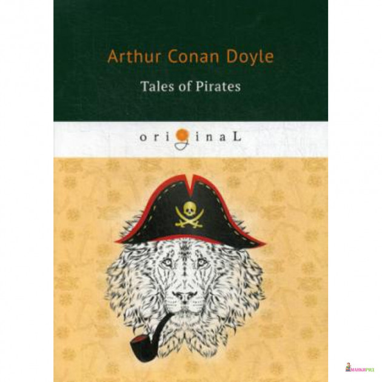

0
стр. з
0
сторінок

завантаження...

Артур Конан Дойл
Рассказы о пиратах
Текст адаптировал Сергей Андреевский
Метод чтения Ильи Франка
Сontents
CAPTAIN SHARKEY: HOW THE GOVERNOR OF SAINT KITT'S CAME HOME
(Капитан Шарки: Как губернатор Сент-Китта вернулся домой).
When the great wars of the Spanish Succession (когда великие войны за испанское наследство; succession — последовательность; наследование, преемственность) had been brought to an end by the Treaty of Utrecht (закончились Утрехтским миром: «Договором Утрехта»; to bring to an end — завершить), the vast number of privateers (множество: «огромное количество» капитанов каперских судов; privateer — капер /морское судно, вооруженное самим хозяином, с разрешения правительства, для военного грабежа и нанесения вреда неприятелю/; капитан/член экипажа капера; private — частный, личный) which had been fitted out by the contending parties (вооруженных противоборствующими сторонами; to fit — подходить, соответствовать; снаряжать, оснащать; to contend — бороться, сражаться) found their occupation gone (остались не у дел: «обнаружили свое занятие потерянным»; to find — находить, обнаруживать; убеждаться, приходить к заключению; gone — ушедший; пропащий, потерянный; to go — идти, ехать; исчезать, пропадать). Some took to the more peaceful but less lucrative ways of ordinary commerce (одни избрали путь более мирной, но менее прибыльной обычной торговли; to take — брать, взять; выбрать /дорогу, путь/), others were absorbed into the fishing-fleets (другие ушли в рыболовные флотилии; to absorb — всасывать, впитывать; поглощать), and a few of the more reckless hoisted the Jolly Rodger at the mizzen (а те, кто был поотчаянней: «некоторые более безрассудные», подняли на бизань-мачте «Веселого Роджера»; mizzen — бизань /косой парус/; бизань мачта) and the bloody flag at the main (и тот же окаянный флаг на главной; bloody — окровавленный, кровавый; проклятый /брит./), declaring a private war upon their own account against the whole human race (объявив на свой страх и риск «свою собственную» войну против всего рода человеческого; upon one’s own account — в своих собственных интересах; account — счет; race — раса; род, порода).
brought [brought], privateer ["praIvq'tIq], lucrative ['lu:krqtIv]
When the great wars of the Spanish Succession had been brought to an end by the Treaty of Utrecht, the vast number of privateers which had been fitted out by the contending parties found their occupation gone. Some took to the more peaceful but less lucrative ways of ordinary commerce, others were absorbed into the fishing-fleets, and a few of the more reckless hoisted the Jolly Roger at the mizzen and the bloody flag at the main, declaring a private war upon their own account against the whole human race.
With mixed crews, recruited from every nation they scoured the seas (с разношерстными командами, набранными из /представителей/ разных национальностей, они рыскали по морям; to mix — смешивать, перемешивать; mixed — смешанный; разнородный; разношерстный /о компании людей/; to recruit — призывать /новобранцев/; набирать, вербовать; to scour — чистить, отчищать; прочесывать /местность и т.п./), disappearing occasionally to careen in some lonely inlet (временами исчезая для ремонтных работ в какой-нибудь уединенной бухте; occasionally — иногда, время от времени; to careen — переворачивать /корабль на бок для ремонта, очистки, конопачения/; careen — крен корабля), or putting in for a debauch at some outlying port (или /устраивая/ буйную пирушку в отдаленном порту; to put — класть; направлять судно /мор./; to put in — заходить в порт /мор./; debauch — буйство, скандал; пирушка, попойка), where they dazzled the inhabitants by their lavishness (где «они» ослепляли жителей своей расточительностью; lavish — щедрый; неумеренный, расточительный) and horrified them by their brutalities (и приводили в ужас своей жестокостью; to horrify — ужасать; brutal — зверский, бесчеловечный, жестокий).
On the Coromandel Coast, at Madagascar, in the African waters (на Коромандельском берегу, у Мадагаскара, в африканских водах), and above all in the West Indian and American seas (а более всего в морях Вест-Индии и Америки; above all — прежде всего: «над всем»), the pirates were a constant menace (пираты являли собою постоянную опасность). With an insolent luxury they would regulate their depredations by the comfort of the seasons (они /позволяли/ себе наглую роскошь сообразовывать свои нападения со сменой времен года; to regulate — управлять, настраивать; приспосабливать /к требованиям, условиям/; depredation — ограбление; воровство, грабеж; comfort — отдых, покой; содействие, помощь), harrying New England in the summer (летом разоряя /берега/ Новой Англии; to harry — совершать набеги; опустошать, доводить до разорения; разграблять) and dropping south again to the tropical islands in the winter (а зимой снова спускаясь на юг к тропическим островам; to drop — капать, стекать каплями; спускаться, снижаться).
debauch [dI'bO:tS], luxury ['lAkS(q)rI], south [saVT]
With mixed crews, recruited from every nation they scoured the seas, disappearing occasionally to careen in some lonely inlet, or putting in for a debauch at some outlaying port, where they dazzled the inhabitants by their lavishness and horrified them by their brutalities.
On the Coromandel Coast, at Madagascar, in the African waters, and above all in the West Indian and American seas, the pirates were a constant menace. With an insolent luxury they would regulate their depredations by the comfort of the seasons, harrying New England in the summer and dropping south again to the tropical islands in the winter.
They were the more to be dreaded (их тем более страшились) because they had none of that discipline and restraint (что они совсем не имели той дисциплины и сдержанности; to restrain — сдерживать; обуздывать) which made their predecessors, the Buccaneers (что делало их предшественников — буканьеров; buccaneer — пират), both formidable and respectable (одновременно и грозными, и заслуживающими уважения; both — оба, обе /прил./; both… and — как…, так и…; respect — уважение, почет). These Ishmaels of the sea rendered an account to no man (эти Исмаэли моря не отвечали ни перед кем; Ishmael /библ./ — Исмаэль, сын Авраама, удаленный в пустыню; зд. — изгнанник; to render an account — предоставить отчет), and treated their prisoners according to the drunken whim of the moment (и обращались со своими пленниками, руководствуясь сиюминутной пьяной прихотью; according to — в соответствии с, согласно; moment — миг, минута; определенный момент).
discipline ['dIsIplIn], treated ['tri:tId], whim [wIm]
They were the more to be dreaded because they had none of that discipline and restraint which made their predecessors, the Buccaneers, both formidable and respectable. These Ishmaels of the sea rendered an account to no man, and treated their prisoners according to the drunken whim of the moment.
Flashes of grotesque generosity alternated with longer stretches of inconceivable ferocity (вспышки нелепого благородства чередовались с более длительными периодами невообразимой свирепости; stretch — вытягивание, растягивание; промежуток времени; to conceive — полагать, размышлять; постигать; представлять себе), and the skipper who fell into their hands (и капитан какого-нибудь торгового судна, попавшего им в руки; to fall — падать) might find himself dismissed with his cargo (мог оказаться на свободе: «обнаружить себя освобожденным» со /всем/ своим грузом; to dismiss — отпускать; освобождать), after serving as boon companion in some hideous debauch (после участия в качестве собутыльника в какой-то кошмарной попойке; to serve — служить, состоять на службе; boon — благо, благодеяние; дар; покровительство; компанейский, общительный; hideous — отвратительный; ужасный), or might sit at his cabin table (или сидеть за столом в своей каюте) with his own nose and his lips served up with pepper and salt in front of him (перед поданными ему с перцем и солью его собственными носом и губами; to serve — служить; подавать, накрывать на стол). It took a stout seaman in those days to ply his calling in the Caribbean Gulf (в то время требовалось = необходимо было быть отважным мореходом, чтобы бороздить воды Карибского моря: «заниматься своей профессией в Карибском заливе»; to take — брать; требовать /терпения, времени и т.п./; to ply — упорно заниматься /чем-л./, много работать; calling — призвание; деятельность, род занятий; gulf — морской залив).
grotesque [grqV'tesk], boon [bu:n], hideous ['hIdIqs]
Flashes of grotesque generosity alternated with longer stretches of inconceivable ferocity, and the skipper who fell into their hands might find himself dismissed with his cargo, after serving as boon companion in some hideous debauch, or might sit at his cabin table with his own nose and his lips served up with pepper and salt in front of him. It took a stout seaman in those days to ply his calling in the Caribbean Gulf.
Such a man was Captain John Scarrow, of the ship Morning Star (таким человеком и был капитан корабля «Утренняя звезда» Джон Скарроу), and yet he breathed a long sigh of relief (но однако же и он издал долгий вздох облегчения; to breathe — дышать; вдыхать, выдыхать) when he heard the splash of the falling anchor (когда услышал всплеск падающего якоря; to hear) and swung at his moorings within a hundred yards of the guns of the citadel of Basseterre (и его /корабль/ закачался на рейде в сотне ярдов от пушек крепости Бас-Тер; to swing; moorings — место стоянки, причал). St. Kitt's was his final port of call (Сент-Китт был последней точкой /в его маршруте/; port of call — порт назначения), and early next morning his bowsprit would be pointed for Old England (и рано утром следующего /дня/ бушприт его /судна/ будет нацелен на старую /добрую/ Англию). He had had enough of those robber-haunted seas (с него достаточно этих кишащих разбойниками морей; to haunt — часто посещать). Ever since he had left Maracaibo upon the Main (с тех пор, как он покинул /порт/ Маракайбо на материке ; to leave), with his full lading of sugar and red pepper (нагруженный под завязку сахаром и красным перцем; full — полный, заполненный; lading — загрузка), he had winced at every topsail (он вздрагивал при /виде/ каждого паруса; to wince — вздрагивать, морщиться /от боли, неприятного чувства/; topsail — топсель /парус/) which glimmered over the violet edge of the tropical sea (показавшегося над лиловой кромкой тропического моря; to glimmer — мерцать). He had coasted up the Windward Islands (он курсировал вдоль /побережья/ Наветренных островов; to coast — плавать вдоль побережья), touching here and there (заходя в разные порты; to touch — прикасаться, трогать; заходить /в порт/; here and there — там и сям: «здесь и там», кое-где), and assailed continually by stories of villainy and outrage (и повсюду: «непрерывно» его преследовали рассказы о злодействах и насилии; to assail — нападать, штурмовать).
anchor ['xNkq], haunted ['hO:ntId], villainy ['vIlqnI]
Such a man was Captain John Scarrow, of the ship Morning Star, and yet he breathed a long sigh of relief when he heard the splash of the falling anchor and swung at his moorings within a hundred yards of the guns of the citadel of Basseterre. St. Kitt's was his final port of call, and early next morning his bowsprit would be pointed for Old England. He had had enough of those robber-haunted seas. Ever since he had left Maracaibo upon the Main, with his full lading of sugar and red pepper, he had winced at every topsail which glimmered over the violet edge of the tropical sea. He had coasted up the Windward Islands, touching here and there, and assailed continually by stories of villainy and outrage.
Captain Sharkey, of the 20-gun pirate barque, Happy Delivery (капитан двадцатипушечного пиратского барка «Счастливое избавление»; delivery — освобождение, избавление), had passed down the coast (прошел вдоль побережья), and had littered it with gutted vessels and with murdered men (усеяв его /останками/ разграбленных судов и трупами убитых людей; to litter — разбрасывать в беспорядке; to gut — потрошить; опустошать, грабить). Dreadful anecdotes were current of his grim pleasantries (ходили ужасные рассказы о его гнусных шутках; to be current — бытовать, ходить /о слухах/; current — данный, текущий; находящийся в обращении, имеющий хождение; grim — жестокий, беспощадный; pleasantry — любезность; шутка) and of his inflexible ferocity (и непреклонной жестокости; to flex — гнуть, изгибать, сгибать). From the Bahamas to the Main his coal-black barque (от Багамских островов до материка его черный, как уголь барк; barque — барк /большое парусное судно/), with the ambiguous name (с двусмысленным названием), had been freighted with death and many things which are worse than death (нес в себе смерть и многое такое, что еще похуже смерти; to freight — фрахтовать; грузить). So nervous was Captain Scarrow, with his new full-rigged ship and her full and valuable lading (капитан Скарроу так беспокоился за свой новый, прекрасно: «полностью» оснащенный корабль и его ценный груз; nervous — нервный; нервничающий, взволнованный; her — косвенный падеж от she /в английском языке слова «корабль» и «судно» женского рода/), that he struck out to the west as far as Bird's Island (что отвернул к западу до самого острова Берда; to strike out — направляться; as far as — так далеко) to be out of the usual track of commerce (чтобы оказаться подальше от обычных = привычных торговых путей; to be out — быть в стороне). And yet even in those solitary waters (и даже в этих пустынных водах) he had been unable to shake off sinister traces of Captain Sharkey (он не мог: «был неспособен» отделаться от зловещих следов капитана Шарки; to shake off smth. — стряхивать что-либо, избавляться от чего-либо; to shake — трясти, встряхивать).
barque [bQ:k], valuable ['vxljV(q)b(q)l], ambiguous [xm'bIgjVqs]
Captain Sharkey, of the 20-gun pirate barque, Happy Delivery, had passed down the coast, and had littered it with gutted vessels and with murdered men. Dreadful anecdotes were current of his grim pleasantries and of his inflexible ferocity. From the Bahamas to the Main his coal-black barque, with the ambiguous name, had been freighted with death and many things which are worse than death. So nervous was Captain Scarrow, with his new full-rigged ship and her full and valuable lading, that he struck out to the west as far as Bird's Island to be out of the usual track of commerce. And yet even in those solitary waters he had been unable to shake off sinister traces of Captain Sharkey.
One morning they had raised a single skiff (однажды утром они подобрали: «подняли» одинокий ялик) adrift upon the face of the ocean (плывший по воле волн: «дрейфовавший по поверхности океана»; adrift — по течению; по воле волн; to go adrift — дрейфовать; drift — дрейф; face — лицо; поверхность). Its only occupant was a delirious seaman (единственным его пассажиром: «обитателем» был находящийся в бреду моряк; delirious — находящийся в бреду; delirium — делирий, бред, расстройство сознания /сопровождаемое галлюцинациями/), who yelled hoarsely as they hoisted him aboard (который хрипло кричал, когда его поднимали на борт), and showed a dried-up tongue like a black and wrinkled fungus at the back of his mouth (демонстрируя: «показывая» в глубине рта высохший язык, похожий на черный сморщенный гриб; back — задняя часть). Water and nursing soon transformed him into the strongest and smartest sailor on the ship (вода и хорошее питание вскоре превратили: «преобразовали» его в самого сильного и проворного матроса на корабле; smart — умный, сообразительный; проворный, расторопный). He was from Marblehead, in New England, it seemed (он, кажется, был из Марблхеда в Новой Англии; to seem — казаться, представляться), and was the sole survivor of a schooner (и оказался единственным, кто выжил из /всей команды/ шхуны; to survive — выжить) which had been scuttled by the dreadful Sharkey (затопленной ужасным Шарки; to scuttle — затопить судно /открыв кингстоны или пробив отверстия в обшивке/).
ocean ['qVS(q)n], tongue [tAN], survivor [sq'vaIvq]
One morning they had raised a single skiff adrift upon the face of the ocean. Its only occupant was a delirious seaman, who yelled hoarsely as they hoisted him aboard, and showed a dried-up tongue like a black and wrinkled fungus at the back of his mouth. Water and nursing soon transformed him into the strongest and smartest sailor on the ship. He was from Marblehead, in New England, it seemed, and was the sole survivor of a schooner which had been scuttled by the dreadful Sharkey.
For a week Hiram Evanson, for that was his name (/целую/ неделю Хайрема Эвансона, а именно таким оказалось его имя), had been adrift beneath a tropical sun (носило под тропическим солнцем; adrift — плывущий по течению). Sharkey had ordered the mangled remains of his late captain to be thrown into the boat (Шарки приказал бросить в шлюпку истерзанные останки его убитого капитана; late — поздний; покойный, недавно умерший; to throw), "as provisions for the voyage (в качестве пропитания на время плавания; provisions — запасы провианта)," but the seaman had at once committed them to the deep (но моряк тут же предал их пучине; to commit — вверять /кого-л./что-л. кому-л./; deep — глубина; морская пучина; to commit to the deep — похоронить в пучине моря), lest the temptation should be more than he could bear (чтобы искушение не оказалось слишком велико: «как бы искушение не оказалось более того, что он мог вынести»).
week [wi:k], captain ['kxptIn], bear [bFq]
For a week Hiram Evanson, for that was his name, had been adrift beneath a tropical sun. Sharkey had ordered the mangled remains of his late captain to be thrown into the boat, "as provisions for the voyage," but the seaman had at once committed them to the deep, lest the temptation should be more than he could bear.
He had lived upon his own huge frame (он жил за счет запасов своего крепкого организма; huge — громадный, гигантский; frame — скелет, костяк; телосложение), until, at the last moment, the Morning Star had found him in that madness (пока в последний момент /команда/ «Утренней звезды» не обнаружила его в том /состоянии/ безумия; to find) which is the precursor of such a death (которое предшествует подобной смерти; precursor — предшественник). It was no bad find for Captain Scarrow (это была неплохая находка для капитана Скарроу), for, with a short-handed crew (поскольку при нехватке членов экипажа; short-handed — «короткорукий» /испытывающий недостаток в рабочей силе/), such a seaman as this big New Englander (такой моряк, как этот огромный уроженец Новой Англии) was a prize worth having (был наградой, /которую/ стоит иметь = был подарком судьбы). He vowed that he was the only man (он /был готов/ поклясться, что является единственным человеком) whom Captain Sharkey had ever placed under an obligation (кого капитан Шарки когда-либо заставил испытать признательность; to place — помещать, размещать; obligation — обязательство; чувство признательности, долга).
Now that they lay under the guns of Basseterre (теперь, когда они находились под защитой пушек Бас-Тера; to lie — лежать; находиться), all danger from the pirate was at an end (все опасности, /исходившие/ от пирата, были позади; to be at an end — закончиться, прийти к концу), and yet the thought of him lay heavily upon the seaman's mind (но все же мысль о нем не покидала моряка: «тяжело лежала на уме моряке») as he watched the agent's boat shooting out from the custom-house quay (когда он наблюдал, как лодка агента/представителя стремительно отвалила от причала таможни; to shoot out — выскочить, вылететь).
precursor [prI'kWsq], vow [vaV], quay [ki:]
He had lived upon his own huge frame, until, at the last moment, the Morning Star had found him in that madness which is the precursor of such a death. It was no bad find for Captain Scarrow, for, with a short-handed crew, such a seaman as this big New Englander was a prize worth having. He vowed that he was the only man whom Captain Sharkey had ever placed under an obligation.
Now that they lay under the guns of Basseterre, all danger from the pirate was at an end, and yet the thought of him lay heavily upon the seaman's mind as he watched the agent's boat shooting out from the custom-house quay.
"I'll lay you a wager, Morgan," said he to the first mate (держу пари, Морган, — сказал он первому помощнику; to lay — класть, положить; биться об заклад; wager — пари), "that the agent will speak of Sharkey in the first hundred words that pass his lips (что агент упомянет Шарки в первой же сотне слов, что сойдут с его губ; to speak — говорить; упоминать)."
"Well, captain, I'll have you a silver dollar, and chance it (ладно, капитан, у меня есть серебряный доллар и /я готов/ рискнуть им)," said the rough old Bristol man beside him (сказал грубоватый старый бристолец, /стоявший/ рядом с ним).
The negro rowers shot the boat alongside (негры-гребцы быстро подогнали лодку к борту; to shoot — стрелять; бросать, швырять), and the linen-clad steersman sprang up the ladder (и сидевший на руле человек, одетый в полотняный /костюм/, вскочил и бросился по трапу наверх; linen — полотно; to clothe; steersman — рулевой; to spring — прыгать, скакать; вскакивать, бросаться).
"Welcome, Captain Scarrow!" he cried (добро пожаловать, капитан Скарроу! — крикнул он). "Have you heard about Sharkey (вы уже слышали о Шарки)?"
The captain grinned at the mate (капитан ухмыльнулся помощнику; to grin).
"What devilry has he been up to now?" he asked (что за дьявольщину он еще устроил? — спросил он; devil — дьявол; to be up — делать /что-л. плохое/).
"Devilry! You've not heard, then (дьявольщину! значит, вы /ничего/ не слышали)! Why, we've got him safe under lock and key here at Basseterre (так вот, он пойман, и мы держим его под надежной охраной: «под замком и ключом» здесь в Бас-Тере; safe — безопасный, не представляющий опасности). He was tried last Wednesday (в прошлую среду его судили; to try — пытаться, стараться; представить дело на рассмотрение суда), and he is to be hanged to-morrow morning (и завтра утром повесят: «должны повесить»)."
first [fWst], chance [tSQ:ns],Wednesday ['wenzdI]
"I'll lay you a wager, Morgan," said he to the first mate, "that the agent will speak of Sharkey in the first hundred words that pass his lips."
"Well, captain, I'll have you a silver dollar, and chance it," said the rough old Bristol man beside him.
The negro rowers shot the boat alongside, and the linen-clad steersman sprang up the ladder.
"Welcome, Captain Scarrow!" he cried. "Have you heard about Sharkey?"
The captain grinned at the mate.
"What devilry has he been up to now?" he asked.
"Devilry! You've not heard, then! Why, we've got him safe under lock and key here at Basseterre. He was tried last Wednesday, and he is to be hanged to-morrow morning."
Captain and mate gave a shout of joy (капитан с помощником издали радостный крик; to give — давать), which an instant later was taken up by the crew (который мгновение спустя был подхвачен командой; to take — брать). Discipline was forgotten (дисциплина была забыта; to forget) as they scrambled up through the break of the poop (когда они = матросы протискивались через палубу полуюта; to scramble — пробираться, протискиваться; break of the poop — передняя часть палубы полуюта) to hear the news (чтобы /самим/ услышать эту новость). The New Englander was in the front of them (уроженец Новой Англии был = стоял впереди всех) with a radiant face turned up to heaven (с сияющим лицом, обращенным к небу), for he came of the Puritan stock (поскольку он происходил из пуританской семьи; to come — приходить; происходить, иметь происхождение; stock — запас; род, семья).
"Sharkey to be hanged!" he cried (Шарки будет повешен! — кричал он). "You don't know, Master Agent, if they lack a hangman, do you (вы не знаете, господин агент, не нужен ли им палач; master — хозяин, владелец; господин; to lack — испытывать недостаток, нуждаться /в чем-л./)?"
"Stand back!" cried the mate (отойдите: «встаньте = подайтесь назад»! — крикнул помощник), whose outraged sense of discipline was even stronger (чье оскорбленное чувство дисциплины было даже сильнее) than his interest at the news (чем интерес к новостям). "I'll pay that dollar, Captain Scarrow (я заплачу этот доллар, капитан Скарроу), with the lightest heart that ever I paid a wager yet (с самым легким сердцем = с превеликим удовольствием, с каким я никогда прежде не платил за проигрыш: «не оплачивал пари»; to pay). How came the villain to be taken (а как оказался пойманным этот мерзавец; to come to — приходить в /какое-л. состояние/)?"
heaven ['hev(q)n], wager ['weIdZq], villain ['vIlqn]
Captain and mate gave a shout of joy, which an instant later was taken up by the crew. Discipline was forgotten as they scrambled up through the break of the poop to hear the news. The New Englander was in the front of them with a radiant face turned up to heaven, for he came of the Puritan stock.
"Sharkey to be hanged!" he cried. "You don't know, Master Agent, if they lack a hangman, do you?"
"Stand back!" cried the mate, whose outraged sense of discipline was even stronger than his interest at the news. "I'll pay that dollar, Captain Scarrow, with the lightest heart that ever I paid a wager yet. How came the villain to be taken?"
"Why, as to that, he became more than his own comrades could abide (ну, а что до этого, так он надоел уже своим собственным товарищам: «он стал больше, чем его собственные товарищи могли вытерпеть»; as to — в отношении, что касается; to become; to abide — ждать, ожидать /покорно/; выносить, терпеть), and they took such a horror of him (и внушал им такой ужас; to take — брать; испытывать, чувствовать) that they would not have him on the ship (что они не желали больше терпеть его присутствия: «не желали иметь его» на корабле). So they marooned him upon the Little Mangles to the south of the Mysteriosa Bank (и тогда они высадили его на /островке/ Литтл Манглс к югу от банки Мистерьоса; to maroon — высаживать, оставлять на необитаемом острове, на пустынном побережье; maroon — марон /беглый негр в Вест-Индии и Суринаме/; изгой, беглец; отшельник), and there he was found by a Portobello trader (где его увидели: «обнаружили» с торгового судна из Портобелло), who brought him in (на котором и доставили сюда; to bring — приносить, привозить; доставлять). There was talk of sending him to Jamaica to be tried (было предложение отправить его на Ямайку, чтобы /там/ судить; talk — разговор, беседа), but our good little governor, Sir Charles Ewan (но наш добряк губернатор, сэр Чарльз Эван; good — хороший; добрый; little — маленький; здесь используется для придания выражению уменьшительно-ласкательного значения), would not hear of it (не пожелал и слышать об этом). 'He's my meat,' said he (этот /кусок/ мяса мой, — сказал он), 'and I claim the cooking of it (и я намерен /сам/ изжарить его; to claim — требовать; заявлять о своих правах; to cook — готовить, стряпать; варить).' If you can stay till to-morrow morning at ten (если вы сможете остаться до десяти часов завтрашнего утра), you'll see the joint swinging (то /сами/ увидите, как этот окорок закачается /на виселице/; joint — сочленение, сустав; мясной отруб /кул./)."
"I wish I could," said the captain, wistfully (мне бы очень хотелось, — сказал капитан с сожалением; to wish — желать, хотеть; wistful — тоскующий, томящийся), "but I am sadly behind time now (но, к сожалению, я сильно запаздываю; sadly — печально, грустно; к сожалению; behind time — не вовремя, с опозданием: «позади времени»). I should start with the evening tide (мне нужно уходить с вечерним отливом; to start — начинать/ся/; отправляться, пускаться в путь)."
"That you can't do," said the agent with decision (этого вы сделать /никак/ не можете, — решительно: «с решением» сказал агент). "The Governor is going back with you (с вами поплывет: «будет возвращаться» губернатор)."
maroon [mq'ru:n], evening ['i:vnIN], decision [dI'sIZ(q)n]
"Why, as to that, he became more than his own comrades could abide, and they took such a horror of him that they would not have him on the ship. So they marooned him upon the Little Mangles to the south of the Mysteriosa Bank, and there he was found by a Portobello trader, who brought him in. There was talk of sending him to Jamaica to be tried, but our good little governor, Sir Charles Ewan, would not hear of it. 'He's my meat,' said he, 'and I claim the cooking of it.' If you can stay till to-morrow morning at ten, you'll see the joint swinging."
"I wish I could," said the captain, wistfully, "but I am sadly behind time now. I should start with the evening tide."
"That you can't do," said the agent with decision. "The Governor is going back with you."
"The Governor (губернатор)!"
"Yes. He's had a dispatch from Government to return without delay (да, правительство прислало ему приказ о незамедлительном возвращении; dispatch — отправка, отсылка /почты/; официальное послание, донесение; to return — возвращаться, идти обратно; delay — задержка, промедление). The fly-boat that brought it has gone on to Virginia (судно, доставившее его /этот приказ/ ушло в Вирджинию; fly-boat — любое небольшое быстроходное судно; to fly — летать; нестись, мчаться; to go). So Sir Charles has been waiting for you (так что сэр Чарльз ждет вас), as I told him you were due before the rains (с тех пор, как я сказал ему, что вы придете до /сезона/ дождей; due — должный, надлежащий; ожидаемый)."
"Well, well!" cried the captain, in some perplexity (вот те на! — воскликнул капитан в «некоторой» растерянности; well /межд./ — ну! /выражает удивление, уступку, согласие, ожидание и т. п./), "I'm a plain seaman (я простой моряк; plain — очевидный, явный; обыкновенный, простой), and I don't know much of governors and baronets and their ways (и не знаю многого = мало что знаю о губернаторах, баронетах и их привычках; way — путь, дорога; привычка, обычай). I don't remember that I ever so much as spoke to one (я /даже/ не припомню, чтоб когда-либо разговаривал с кем-то из них). But if it's in King George's service (но если этим я послужу королю Георгу; service — служба, работа; помощь, услуга), and he asks a cast in the Morning Star as far as London (и он /губернатор/ просит доставить его на «Утренней звезде» в Лондон; to ask — спрашивать, осведомляться; /по/просить; cast — бросок; расстояние броска), I'll do what I can for him (я сделаю для него все, что могу = что в моих силах). There's my own cabin he can have and welcome (он может пользоваться моей собственной каютой = моя каюта в его распоряжении; welcome — желанный; имеющий право воспользоваться чем-л.). As to the cooking, it's lobscouse and salmagundy six days in the week (а что касается кормежки, то шесть дней в неделю /у нас/ тушеное мясо с овощами и сальмагунди; cooking — приготовление пищи, стряпня; salmagundi — разговорное французское название холодного винегрета, обильно приправленного различными специями); but he can bring his own cook aboard with him (но он может взять с собою «на борт» личного повара) if he thinks our galley too rough for his taste (если он полагает, что наш камбуз слишком груб для его вкуса; to think — думать, мыслить; полагать, считать; galley — галера; камбуз)."
perplexity [pq'pleksItI], George [dZO:dZ], rough [rAf]
"The Governor!"
"Yes. He's had a dispatch from Government to return without delay. The fly-boat that brought it has gone on to Virginia. So Sir Charles has been waiting for you, as I told him you were due before the rains."
"Well, well!" cried the captain, in some perplexity, "I'm a plain seaman, and I don't know much of governors and baronets and their ways. I don't remember that I ever so much as spoke to one. But if it's in King George's service, and he asks a cast in the Morning Star as far as London, I'll do what I can for him. There's my own cabin he can have and welcome. As to the cooking, it's lobscouse and salmagundy six days in the week; but he can bring his own cook aboard with him if he thinks our galley too rough for his taste."
"You need not trouble your mind, Captain Scarrow," said the agent (вам не стоит беспокоиться: «не стоит беспокоить ваш ум», капитан Скарроу, — сказал агент). "Sir Charles is in weak health just now (сэр Чарльз сейчас очень слаб здоровьем: «прямо сейчас в слабом здоровье»), only clear of a quartan ague (только что оправился от четырехдневной малярии; clear — светлый; здоровый), and it is likely he will keep his cabin most of the voyage (и, похоже, большую часть путешествия проведет в своей каюте; to keep — держать, хранить; оставаться, находиться). Dr. Larousse said that he would have sunk (доктор Ларусс сказал, что он, /вероятно,/ бы помер; to sink — тонуть /о корабле/, погружаться под воду; гибнуть, угасать) had the hanging of Sharkey not put fresh life into him (если бы /предстоящее/ повешение Шарки не придало ему силы: «не вложило в него новую жизнь»; fresh — свежий; новый). He has a great spirit in him, though (и, однако же, он человек крутого нрава; great — большой, огромный; сильный; spirit — дух, душа; натура, личность), and you must not blame him (и вы не должны винить его) if he is somewhat short in his speech (если он будет немного резок в выражениях; short — короткий; грубый, резкий /об ответе, речи и т.п./)."
trouble ['trAb(q)l], ague ['eIgju:], health [helT]
"You need not trouble your mind, Captain Scarrow," said the agent. "Sir Charles is in weak health just now, only clear of a quartan ague, and it is likely he will keep his cabin most of the voyage. Dr. Larousse said that he would have sunk had the hanging of Sharkey not put fresh life into him. He has a great spirit in him, though, and you must not blame him if he is somewhat short in his speech."
"He may say what he likes and do what he likes (он может говорить и делать все, что душе угодно: «все, что ему нравится») so long as he does not come athwart my hawse (если только не станет мешать мне: «не пойдет поперек моего курса»; hawse — клюз /носовая часть судна, в которой расположены отверстия для проводки якорных цепей/) when I am working the ship (когда я управляю судном; to work — работать; управлять)," said the captain. "He is Governor of St. Kitt's, but I am Governor of the Morning Star (он губернатор Сент-Китта, а я губернатор «Утренней звезды»). And, by his leave, I must weigh with the first tide (и, с его позволения, я подниму: «должен поднять» якорь с первым отливом; to weigh — взвешивать; сниматься с якоря /мор./), for I owe a duty to my employer (поскольку у меня есть обязательства перед моим нанимателем; to owe — быть должным /кому-л./, быть в долгу /перед кем-л./; duty — обязанность; обязательство, долг; to employ — нанимать), just as he does to King George (точно такие же, как у него — перед королем Георгом)."
athwart [q'TwO:t], weigh [weI], duty ['dju:tI]
"He may say what he likes and do what he likes so long as he does not come athwart my hawse when I am working the ship," said the captain. "He is Governor of St. Kitt's, but I am Governor of the Morning Star. And, by his leave, I must weigh with the first tide, for I owe a duty to my employer, just as he does to King George."
"He can scarce be ready to-night (вряд ли он будет готов сегодня вечером), for he has many things to set in order before he leaves (поскольку у него много дел, которые нужно привести в порядок перед отъездом; thing — вещь, предмет; дело, обстоятельство; to set in order — приводить в порядок; to leave — покидать; уезжать)."
"The early morning tide, then (тогда /завтра/ рано утром с отливом)."
"Very good (очень хорошо). I shall send his things aboard to-night (вечером я пришлю на борт его вещи), and he will follow them to-morrow early (а завтра рано утром прибудет и он сам: «он последует за ними») if I can prevail upon him to leave St. Kitt's (если я смогу уговорить его покинуть Сент-Китт; to prevail upon smb. — убедить, уговорить кого-либо) without seeing Sharkey do the rogue's hornpipe (не повидав, как Шарки спляшет свой танец висельника; hornpipe — волынка; rogue — негодяй, мерзавец; хорнпайп /английский матросский танец/). His own orders were instant (его собственные приказы предполагали незамедлительное исполнение; instant — настоятельный, безотлагательный), so it may be that he will come at once (так что, может быть, и он не станет затягивать с прибытием на борт: «прибудет тотчас же»). It is likely that Dr. Larousse may attend him upon the journey (вероятно, доктор Ларусс будет: «может» сопровождать его в этом путешествии)."
scarce [skFqs], early ['WlI], rogue [rqVg]
"He can scarce be ready to-night, for he has many things to set in order before he leaves."
"The early morning tide, then."
"Very good. I shall send his things aboard to-night, and he will follow them to-morrow early if I can prevail upon him to leave St. Kitt's without seeing Sharkey do the rogue's hornpipe. His own orders were instant, so it may be that he will come at once. It is likely that Dr. Larousse may attend him upon the journey."
Left to themselves (предоставленные самим себе = после того, как агент их оставил; to leave — оставлять, покидать), the captain and mate made the best preparations which they could for their illustrious passenger (капитан с помощником сделали все, что в их силах, чтобы подготовиться к принятию столь именитой персоны: «капитан и помощник сделали наилучшие приготовления, которые могли, для своего знаменитого пассажира»). The largest cabin was turned out and adorned in his honour (по этому случаю: «в его честь» самая большая каюта была прибрана и украшена; to turn out — наводить порядок, убирать), and orders were given (и были отданы распоряжения) by which barrels of fruit and some cases of wine should be brought off (согласно которым /на борт/ должны были доставить бочки с фруктами и ящики с вином; to bring) to vary the plain food of an ocean-going trader (чтобы разнообразить простую пищу океанского торгового судна). In the evening the Governor's baggage began to arrive (вечером начал прибывать багаж губернатора; to begin) —great ironbound ant-proof trunks, and official tin packing-cases (огромные, обитые железом, защищенные от муравьев сундуки, жестяные ящики для официальных /бумаг/; iron — железо; to bind — вязать, связывать; обшивать; packing-case — ящик для упаковки), with other strange-shaped packages (и различные тюки и коробки странной формы; package — пакет, сверток; упаковочная тара /ящик, коробка и т.п./), which suggested the cocked hat or the sword within (предположительно для треуголок или шпаг). And then there came a note, with a heraldic device upon the big red seal (затем прибыло послание с геральдическим символом на большой красной печати; device — приспособление; символ, эмблема), to say that Sir Charles Ewan made his compliments to Captain Scarrow (/в котором/ говорилось, что сэр Чарльз Эван выражает свое уважение капитану Скарроу; compliment — выражение уважения, восхищения; приветствие), and that he hoped to be with him in the morning (и надеется быть с ним = на его судне утром) as early as his duties and his infirmities would permit (как скоро ему позволят обязанности и еще не совсем окрепшее здоровье; duty — долг, обязательство; infirmity — болезненность, недомогание).
illustrious [I'lAstrIqs], honour ['Onq], sword [sO:d]
Left to themselves, the captain and mate made the best preparations which they could for their illustrious passenger. The largest cabin was turned out and adorned in his honour, and orders were given by which barrels of fruit and some cases of wine should be brought off to vary the plain food of an ocean-going trader. In the evening the Governor's baggage began to arrive—great ironbound ant-proof trunks, and official tin packing-cases, with other strange-shaped packages, which suggested the cocked hat or the sword within. And then there came a note, with a heraldic device upon the big red seal, to say that Sir Charles Ewan made his compliments to Captain Scarrow, and that he hoped to be with him in the morning as early as his duties and his infirmities would permit.
He was as good as his word (губернатор сдержал слово: «он был столь же хорош, как и его слово»), for the first grey of dawn had hardly begun to deepen into pink (ибо предрассветные сумерки едва только начали розоветь; grey — серый цвет; сумрак; dawn — рассвет; to begin — начинать/ся/; to deepen — делаться глубже; темнеть, сгущаться) when he was brought alongside (когда его доставили к борту; to bring — приносить, приводить), and climbed with some difficulty up the ladder (и с трудом подняли по трапу). The captain had heard that the Governor was an eccentric (капитан слышал об эксцентричности губернатора; to hear), but he was hardly prepared for the curious figure (но едва ли был готов /увидеть/ нелепую фигуру; curious — любопытный; странный, чудной) who came limping feebly down his quarter-deck (которая двигалась, прихрамывая, по квартердеку), his steps supported by a thick bamboo cane (при каждом шаге опираясь на толстую бамбуковую трость: «/при этом/ его шаги поддерживались толстой бамбуковой тростью»).
eccentric [Ik'sentrIk], figure ['fIgq], bamboo ["bxm'bu:]
He was as good as his word, for the first grey of dawn had hardly begun to deepen into pink when he was brought alongside, and climbed with some difficulty up the ladder. The captain had heard that the Governor was an eccentric, but he was hardly prepared for the curious figure who came limping feebly down his quarter-deck, his steps supported by a thick bamboo cane.
He wore a Ramillies wig (на нем был: «он носил» парик «рамилье»; to wear), all twisted into little tails like a poodle's coat (завитый в маленькие хвостики = косички, напоминавший шерсть пуделя; to twist — скручивать/ся/; coat — куртка, пиджак; шерсть /животного/), and cut so low across the brow (и так низко нависавший надо лбом; to cut — резать, рубить; to cut across — разрезать поперек; пересекать; brow — бровь; лоб, чело /поэт./) that the large green glasses which covered his eyes (что большие зеленые очки, скрывавшие глаза) looked as if they were hung from it (выглядели так, будто были прикреплены к нему; to hang — вешать, висеть). A fierce beak of a nose, very long and very thin (/подобный/ клюву нос, очень тонкий и очень длинный; fierce — жестокий, свирепый; интенсивный, ярко выраженный), cut the air in front of him (ра ccекал перед ним воздух). His ague had caused him to swathe his throat and chin with a broad linen cravat (перенесенная лихорадка побудила его закутать горло и подбородок широким полотняным шарфом; to cause — послужить причиной, поводом; cravat — галстук; шарф), and he wore a loose damask powdering-gown (а одет он был в широкий камчатный халат; to wear — носить; powder — порошок, пыль; порошок /о форме лекарства/) secured by a cord round the waist (перетянутый вокруг пояса шнурком; to secure — охранять, защищать; перевязывать, стягивать).
poodle [pu:dl], across [q'krOs], linen ['lInIn]
He wore a Ramillies wig, all twisted into little tails like a poodle's coat, and cut so low across the brow that the large green glasses which covered his eyes looked as if they were hung from it. A fierce beak of a nose, very long and very thin, cut the air in front of him. His ague had caused him to swathe his throat and chin with a broad linen cravat, and he wore a loose damask powdering-gown secured by a cord round the waist.
As he advanced he carried his masterful nose high in the air (приближаясь, он задирал свой властный нос высоко в воздух = вверх; to carry — нести, носить), but his head turned slowly from side to side in the helpless manner of the purblind (тогда как его голова медленно поворачивалась из стороны в сторону в беспомощной манере подслеповатого /человека/), and he called in a high, querulous voice for the captain (и высоким недовольным голосом он кричал капитану; querulous — капризный, ворчливый).
"You have my things?" he asked (мои вещи на судне: «у вас»? — спросил он).
"Yes, Sir Charles (да, сэр Чарльз)."
"Have you wine aboard (есть на борту вино)?"
"I have ordered five cases, sir (я приказал /доставить/ пять ящиков, сэр)."
"And tobacco (а табак)?"
"There is a keg of Trinidad (есть бочонок тринидадского)."
"You play a hand at piquet (вы играете в пикет; hand — рука /кисть/; партия, кон)?"
"Passably well, sir (весьма неплохо, сэр)."
"Then up anchor, and to sea (тогда поднимайте якорь и — в море)!"
high [haI], querulous ['kwer(j)Vlqs], anchor ['xNkq]
As he advanced he carried his masterful nose high in the air, but his head turned slowly from side to side in the helpless manner of the purblind, and he called in a high, querulous voice for the captain.
"You have my things?" he asked.
"Yes, Sir Charles."
"Have you wine aboard?"
"I have ordered five cases, sir."
"And tobacco?"
"There is a keg of Trinidad."
"You play a hand at piquet?"
"Passably well, sir."
"Then up anchor, and to sea!"
There was a fresh westerly wind (с запада дул свежий ветер), so by the time the sun was fairly through the morning haze (так что к тому времени, когда солнце уже совсем пробилось сквозь утреннюю дымку; fairly — довольно; в определенной степени), the ship was hull down from the islands (корабль с острова был уже почти не виден; hull down — с корпусом, скрытым за горизонтом). The decrepit Governor still limped the deck (дряхлый губернатор все еще хромал по палубе), with one guiding hand upon the quarter-rail (одной рукой /держась/ за леерное ограждение; to guide — вести, направлять).
"You are on Government service now, Captain," said he (теперь вы на государственной службе, капитан, — говорил он). "They are counting the days till I come to Westminster (они там дни считают до моего прибытия в Вестминстер), I promise you (уверяю вас; to promise — обещать; уверять /уст./). Have you all that she will carry (вы поставили все паруса: «у вас есть все /оснащение/, что она унесет»; she — она, женщина; судно; to carry — нести, перевозить)?"
"Every inch, Sir Charles (все до одного: «каждый дюйм», сэр)."
"Keep her so if you blow the sails out of her (держите так и дальше, пусть хоть все паруса сорвет /ветром/; to keep — хранить, не отдавать; держать /в известном положении/; to blow out — срывать, сносить; to blow — дуть). I fear, Captain Scarrow (боюсь, капитан Скарроу), that you will find a blind and broken man a poor companion for your voyage (что вы найдете слепого и сломленного /болезнью/ человека никудышным попутчиком в этом плавании; to break — ломать; poor — бедный, неимущий; плохой, недостаточный)."
decrepit [dI'krepIt], guiding ['gaIdIN], blind [blaInd]
There was a fresh westerly wind, so by the time the sun was fairly through the morning haze, the ship was hull down from the islands. The decrepit Governor still limped the deck, with one guiding hand upon the quarter-rail.
"You are on Government service now, Captain," said he. "They are counting the days till I come to Westminster, I promise you. Have you all that she will carry?"
"Every inch, Sir Charles."
"Keep her so if you blow the sails out of her. I fear, Captain Scarrow, that you will find a blind and broken man a poor companion for your voyage."
"I am honoured in enjoying your Excellency's society (почту за честь наслаждаться обществом вашего превосходительства)," said the Captain. "But I am sorry that your eyes should be so afflicted (жаль, что ваши глаза в столь печальном состоянии; to afflict — огорчать, беспокоить; поражать /болезнью/)."
"Yes, indeed (да, действительно). It is the cursed glare of the sun on the white streets of Basseterre (черт бы побрал это слепящее солнце на белых улицах Бас-Тера; to curse — проклинать; glare — ослепительный блеск, яркий свет) which has gone far to burn them out (которого было достаточно, чтобы их совсем выжечь; to go far — хватить надолго)."
"I had heard also that you had been plagued by a quartan ague (я также слышал, что вы перенесли малярию; plague — мор, эпидемия; to plague — насылать бедствие; мучить, изводить)."
"Yes; I have had a pyrexy, which has reduced me much (да у меня была лихорадка, после которой я изрядно ослаб; to reduce —уменьшать, понижать; ослаблять)."
"We had set aside a cabin for your surgeon (мы приготовили каюту для вашего врача; to set aside for — предназначать, выделять /для чего-л./; surgeon — хирург; военврач)."
"Ah, the rascal (а, для этого жулика)! There was no budging him (да его оттуда палкой не прогонишь; to budge — шевелиться, двигаться), for he has a snug business amongst the merchants (потому что у него тут прибыльная практика среди местных торговцев; snug — удобный, уютный; значительный). But hark (но что это; to hark — слушать, прислушиваться)!"
He raised his ring-covered hand in the air (он поднял свою унизанную перстнями руку «в воздух»). From far astern there came the low deep thunder of cannon (далеко за кормой ударил низкий и глубокий грохот пушечного /выстрела/; to come — приходить; долетать, доноситься; thunder — гром; грохот, гул).
aside [q'saId], astern [q'stWn], thunder ['TAndq]
"I am honoured in enjoying your Excellency's society," said the Captain. "But I am sorry that your eyes should be so afflicted."
"Yes, indeed. It is the cursed glare of the sun on the white streets of Basseterre which has gone far to burn them out."
"I had heard also that you had been plagued by a quartan ague."
"Yes; I have had a pyrexy, which has reduced me much."
"We had set aside a cabin for your surgeon."
"Ah, the rascal! There was no budging him, for he has a snug business amongst the merchants. But hark!"
He raised his ring-covered hand in the air. From far astern there came the low deep thunder of cannon.
"It is from the island!" cried the captain in astonishment (это с острова! — воскликнул капитан в изумлении; to astonish — изумлять, поражать). "Can it be a signal for us to put back (может это нам сигнал вернуться; to put back — возвращаться /в гавань, к берегу/)?"
The Governor laughed (губернатор рассмеялся).
"You have heard that Sharkey, the pirate, is to be hanged this morning (вы уже слыхали, что этот пират Шарки сегодня утром должен быть повешен). I ordered the batteries to salute (я приказал, чтобы батарея дала залп; to salute — здороваться, приветствовать; салютовать) when the rascal was kicking his last (когда негодяй дрыгнет ногой в последний раз; to kick — ударить ногой, пнуть; брыкаться; last — последний, последнее; конец), so that I might know of it out at sea (чтобы я узнал об этом /будучи/ в море). There's an end of Sharkey (это конец Шарки)!"
"There's an end of Sharkey!" cried the captain (это конец Шарки! — крикнул капитан); and the crew took up the cry (и матросы подхватили этот крик; to take; crew — команда, экипаж) as they gathered in little knots upon the deck (когда собрались на палубе небольшими группами; knot — узел; группа, кучка /людей/) and stared back at the low, purple line of the vanishing land (чтобы взглянуть назад на тонкую багряную полоску: «линию» исчезающей земли; low — низкий; скудный, недостаточный).
astonishment [q'stOnISmqnt], cry [kraI], knot [nOt]
"It is from the island!" cried the captain in astonishment. "Can it be a signal for us to put back?"
The Governor laughed.
"You have heard that Sharkey, the pirate, is to be hanged this morning. I ordered the batteries to salute when the rascal was kicking his last, so that I might know of it out at sea. There's an end of Sharkey!"
"There's an end of Sharkey!" cried the captain; and the crew took up the cry as they gathered in little knots upon the deck and stared back at the low, purple line of the vanishing land.
It was a cheering omen for their start across the Western Ocean (то было хорошим предзнаменованием для начавших плавание через Атлантику; Western Ocean — «Западный океан», Северная Атлантика), and the invalid Governor found himself a popular man on board (и больной губернатор приобрел на судне популярность: «обнаружил себя популярным человеком на борту»), for it was generally understood (поскольку всем было понятно; generally — обычно, как правило; to understand) that but for his insistence upon an immediate trial and sentence (что если бы он не настоял на немедленном суде и /вынесении/ приговора; but for — если бы не; trial — испытание, проба; судебный процесс), the villain might have played upon some more venal judge and so escaped (негодяй мог подкупить какого-нибудь продажного судью и таким образом спастись; to play upon — играть на /чьих-л. чувствах/; to escape — совершать побег; спастись, отделаться). At dinner that day Sir Charles gave many anecdotes of the deceased pirate (в тот день за обедом сэр Чарльз рассказал множество историй о покойном пирате; to give — давать; рассказывать /разг./; anecdote — анекдот, забавная история); and so affable was he, and so skilful in adapting his conversation to men of lower degree (он был настолько дружелюбен и так умело поддерживал разговор с людьми более низкого ранга; affable — приветливый; вежливый, любезный; to adapt — приспосабливать/ся/; degree — степень, уровень; положение, ранг), that captain, mate, and Governor smoked their long pipes (что капитан, помощник и /сам/ губернатор курили свои длинные трубки) and drank their claret as three good comrades should ( и пили кларет, как подобает трем хорошим товарищам = добрым приятелям; to drink).
"And what figure did Sharkey cut in the dock?" asked the captain (а как вел себя Шарки на суде? — спросил капитан; to cut a figure — производить впечатление: «вырезать = кроить облик»; in the dock /амер./ — на скамье подсудимых).
"He is a man of some presence (он держался с достоинством; man of smth. — человек, обладающий определенными качествами; presence — присутствие, нахождение; внешний вид, наружность /производящие благоприятное впечатление/)," said the Governor.
popular ['pOpjVlq], immediate [I'mi:dIqt], trial ['traIql]
It was a cheering omen for their start across the Western Ocean, and the invalid Governor found himself a popular man on board, for it was generally understood that but for his insistence upon an immediate trial and sentence, the villain might have played upon some more venal judge and so escaped. At dinner that day Sir Charles gave many anecdotes of the deceased pirate; and so affable was he, and so skilful in adapting his conversation to men of lower degree, that captain, mate, and Governor smoked their long pipes and drank their claret as three good comrades should.
"And what figure did Sharkey cut in the dock?" asked the captain.
"He is a man of some presence," said the Governor.
"I had always understood that he was an ugly, sneering devil (я всегда считал его безобразным насмешливым негодяем; to understand — понимать; предполагать, полагать; devil — дьявол, сатана; человек, парень /разг./)," remarked the mate (заметил помощник; to remark — замечать, обнаруживать; делать замечание, высказываться).
"Well, I dare say he could look ugly upon occasions (да, пожалуй, при случае он мог выглядеть безобразным; I dare say — осмелюсь сказать; возможно, пожалуй)," said the Governor.
"I have heard a New Bedford whaleman say (я слыхал, как один китобой из Нью-Бедфорда рассказывал; to hear) that he could not forget his eyes (что /никак/ не может забыть его глаз)," said Captain Scarrow. "They were of the lightest filmy blue, with red-rimmed lids (они у него были голубые, почти белесые, /мутные, будто/ подернутые пленкой, с красными веками; lightest — самый светлый; filmy — покрытый пленкой; to rim — служить ободом, окаймлять). Was that not so, Sir Charles (это не так, сэр Чарльз)?"
"Alas, my own eyes will not permit me to know much of those of others (увы, мои собственные глаза не позволяют мне узнать многое о чужих)! But I remember now that the Adjutant-General said (но теперь я припоминаю, как генерал-адъютант сказал) that he had such an eye as you describe (что у него именно такие глаза, как вы описываете; eye — глаз; взгляд), and added that the jury were so foolish (и добавил, будто присяжные оказались настолько глупы) as to be visibly discomposed when it was turned upon them (что заметно переполошились, когда /Шарки/ перевел взгляд на них). It is well for them that he is dead (им повезло: «это хорошо для них», что он мертв), for he was a man who would never forget an injury (поскольку это был человек, который никогда не забудет обиды), and if he had laid hands upon any one of them (и если бы кто-то из них попался ему в руки; to lay hands /up/on — прибирать к рукам, завладевать) he would have stuffed him with straw and hung him for a figure-head (он набил бы его соломой и повесил бы это /чучело/ на носу своего корабля; to hang — вешать, повесить; figure-head — носовое украшение корабля)."
occasions [q'keIZ(q)n], describe [dIs'kraIb], dead [ded]
"I had always understood that he was an ugly, sneering devil," remarked the mate.
"Well, I dare say he could look ugly upon occasions," said the Governor.
"I have heard a New Bedford whaleman say that he could not forget his eyes," said Captain Scarrow. "They were of the lightest filmy blue, with red-rimmed lids. Was that not so, Sir Charles?"
"Alas, my own eyes will not permit me to know much of those of others! But I remember now that the Adjutant-General said that he had such an eye as you describe, and added that the jury were so foolish as to be visibly discomposed when it was turned upon them. It is well for them that he is dead, for he was a man who would never forget an injury, and if he had laid hands upon any one of them he would have stuffed him with straw and hung him for a figure-head."
The idea seemed to amuse the Governor (эта мысль, казалось, позабавила губернатора), for he broke suddenly into a high, neighing laugh (ибо он вдруг разразился резким, /похожим на/ ржание, смехом; to break into — внезапно начинать /делать что-л./; high — высокий; резкий, пронзительный /о звуке/; to neigh — ржать), and the two seamen laughed also, but not so heartily (оба моряка засмеялись тоже, но не так искренне; heartily — сердечно, от всего сердца), for they remembered that Sharkey was not the last pirate (поскольку помнили, что Шарки был не последним пиратом) who sailed the western seas (плавающим = промышляющим в западных морях), and that as grotesque a fate might come to be their own (и что такая же нелепая доля может постичь их самих; to come — приходить; происходить, случаться). Another bottle was broached to drink to a pleasant voyage (откупорили еще одну бутылку, чтобы выпить за удачное: «приятное» плавание; to broach — делать прокол, отверстие; открыть /бочонок, бутылку/), and the Governor would drink just one other on the top of it (/потом/ губернатор захотел выпить еще одну; on the top of — поверх /чего-л./), so that the seamen were glad at last to stagger off (так что моряки в конце концов были рады /уйти, изрядно/ пошатываясь) —the one to his watch and the other to his bunk (один — на вахту, а другой — на койку). But when after his four hours' spell the mate came down again (но когда после четырехчасовой вахты помощник вновь спустился вниз; spell — заклинание, чары; время дежурства /разг./), he was amazed to see the Governor (то с удивлением увидел губернатора) in his Ramillies wig, his glasses, and his powdering-gown (в его парике «рамилье», очках и халате) still seated sedately at the lonely table with his reeking pipe and six black bottles by his side (все еще степенно сидящим за пустым столом с дымящейся трубкой и шестью темными бутылками перед собой: «с его стороны»; lonely — одинокий).
laugh [lQ:f], grotesque [grqV'tesk], sedately [sI'deItlI]
The idea seemed to amuse the Governor, for he broke suddenly into a high, neighing laugh, and the two seamen laughed also, but not so heartily, for they remembered that Sharkey was not the last pirate who sailed the western seas, and that as grotesque a fate might come to be their own. Another bottle was broached to drink to a pleasant voyage, and the Governor would drink just one other on the top of it, so that the seamen were glad at last to stagger off—the one to his watch and the other to his bunk. But when after his four hours' spell the mate came down again, he was amazed to see the Governor in his Ramillies wig, his glasses, and his powdering-gown still seated sedately at the lonely table with his reeking pipe and six black bottles by his side.
"I have drunk with the Governor of St. Kitt's when he was sick," said he (я пил с губернатором Сент-Китта, когда он был болен, — сказал он /себе/), "and God forbid that I should ever try to keep pace with him when he is well (но упаси меня Господь когда-нибудь попытаться не отстать от него, когда он выздоровеет; to forbid — запрещать, не позволять; to keep pace — держать шаг, темп; to be well — быть здоровым)."
The voyage of the Morning Star was a successful one (плавание «Утренней звезды» было удачным), and in about three weeks she was at the mouth of the British Channel (и примерно через три недели она была у входа в Ла-Манш; mouth — рот, уста; устье, вход; British Channel — «Британский канал», пролив Ла-Манш). From the first day the infirm Governor had begun to recover his strength (/буквально/ с первого дня /пребывания на судне/ немощный губернатор стал восстанавливать силы; to begin), and before they were half-way across the Atlantic (и прежде чем они прошли полпути через Атлантику) he was, save only for his eyes, as well as any man upon the ship (он был, если не считать его глаз, так же здоров, как и любой другой на судне).
pace [peIs], infirm [In'fWm], recover [rI'kAvq]
"I have drunk with the Governor of St. Kitt's when he was sick," said he, "and God forbid that I should ever try to keep pace with him when he is well."
The voyage of the Morning Star was a successful one, and in about three weeks she was at the mouth of the British Channel. From the first day the infirm Governor had begun to recover his strength, and before they were half-way across the Atlantic he was, save only for his eyes, as well as any man upon the ship.
Those who uphold the nourishing qualities of wine (те, кто стоит за полезные свойства вина; to uphold — поддерживать; одобрять; quality — качество; свойство) might point to him in triumph (могли бы, торжествуя, указать на него; in triumph — победоносно), for never a night passed (потому что не проходило ночи) that he did not repeat the performance of his first one (чтобы он не пьянствовал: «не повторял своего поведения» /так же/, как в ту первую ночь; performance — исполнение; поступок, поведение). And yet he would be out upon deck in the early morning (и однако же, всегда рано утром он появлялся на палубе; to be out — появляться; выходить) as fresh and brisk as the best of them (свежий и бодрый, как никто другой: «как лучшие из них»; brisk — живой, проворный), peering about with his weak eyes (оглядывая /все/ вокруг своими слабыми глазами), and asking questions about the sails and the rigging (и задавая вопросы о парусах и такелаже), for he was anxious to learn the ways of the sea (поскольку очень хотел выучиться морскому делу: «обычаям моря»; way — путь, дорога; уклад, обычай).
nourishing ['nArISIN], triumph ['traIqmf], anxious ['xNkSqs]
Those who uphold the nourishing qualities of wine might point to him in triumph, for never a night passed that he did not repeat the performance of his first one. And yet he would be out upon deck in the early morning as fresh and brisk as the best of them, peering about with his weak eyes, and asking questions about the sails and the rigging, for he was anxious to learn the ways of the sea.
And he made up for the deficiency of his eyes by obtaining leave from the captain (/пытаясь/ компенсировать недостаток зрения, он получил позволение капитана; to make up for — возмещать, компенсировать) that the New England seaman (чтобы тот матрос из Новой Англии) —he who had been cast away in the boat (которого нашли брошенным в лодке; to cast away — выбрасывать, избавляться) —should lead him about (повсюду сопровождал его; to lead — вести, сопровождать), and above all that he should sit beside him (и прежде всего, должен был сидеть рядом с ним) when he played cards and count the number of the pips (когда тот играет в карты и считает количество очков; pip — очко, картинка масти /на игральных картах/), for unaided he could not tell the king from the knave (поскольку без посторонней помощи тот не мог отличить короля от валета; to tell from — отличать, различать /амер./).
deficiency [dI'fIS(q)nsI], pleasure ['pleZq], knave [neIv]
And he made up for the deficiency of his eyes by obtaining leave from the captain that the New England seaman—he who had been cast away in the boat—should lead him about, and above all that he should sit beside him when he played cards and count the number of the pips, for unaided he could not tell the king from the knave.
It was natural that this Evanson should do the Governor willing service (естественно, что этот Эвансон рад был услужить губернатору; willing — охотно делающий /что-л./; service — служба, занятие), since the one was the victim of the vile Sharkey (так как один был жертвой негодяя Шарки; vile — низкий, подлый), and the other was his avenger (а другой — его мстителем; to avenge — мстить). One could see that it was a pleasure to the big American (видно было, что большому американцу доставляет удовольствие) to lend his arm to the invalid (протягивать руку помощи инвалиду; to lend — одалживать, давать взаймы; оказать /помощь/), and at night he would stand with all respect behind his chair in the cabin (и по вечерам он почтительно: «со всем уважением» стоял позади его кресла «в каюте») and lay his great stub-nailed forefinger upon the card (и клал свой указательный палец с обломанным ногтем на карту; stub — пень, обрубок; короткий обломок, остаток) which he should play (с которой ему = губернатору нужно было ходить).
natural ['nxtS(q)rql], vile [vaIl], forefinger ['fO:"fINgq]
It was natural that this Evanson should do the Governor willing service, since the one was the victim of the vile Sharkey, and the other was his avenger. One could see that it was a pleasure to the big American to lend his arm to the invalid, and at night he would stand with all respect behind his chair in the cabin and lay his great stub-nailed forefinger upon the card which he should play.
Between them there was little in the pockets either of Captain Scarrow or of Morgan, the first mate (как у капитана Скарроу, так и у первого помощника Моргана, денег в карманах уже почти не осталось), by the time they sighted the Lizard (к тому времени, когда показался мыс Лизард; to sight — заметить, различить; Lizard /зд./ = Lizard Head — мыс Лизард).
And it was not long before they found (а незадолго до того они обнаружили = убедились) that all they had heard of the high temper of Sir Charles Ewan fell short of the mark (что все, слышанное ими ранее о крутом нраве сэра Чарльза Эвана, сильно преуменьшено; high — высокий; сердитый, гневный; to fall short of — не достигать; mark — знак метка; предел, рубеж /уст./). At a sign of opposition or a word of argument (при /малейших/ признаках несогласия или противоречия; sign —знак; признак; opposition — противоположность; противодействие; word — слово; argument — спор, дискуссия) his chin would shoot out from his cravat (его подбородок выпячивался из шарфа; to shoot out — выдаваться вперед; выпячивать/ся/), his masterful nose would be cocked at a higher and more insolent angle (его властный нос задирался еще выше и еще более надменно: «и под более надменным углом»), and his bamboo cane would whistle up over his shoulder (а его бамбуковая трость со свистом /взлетала/ вверх «над его плечом»).
sighted ['saItId], argument ['Q:gjVmqnt], whistle ['wIs(q)l]
Between them there was little in the pockets either of Captain Scarrow or of Morgan, the first mate, by the time they sighted the Lizard.
And it was not long before they found that all they had heard of the high temper of Sir Charles Ewan fell short of the mark. At a sign of opposition or a word of argument his chin would shoot out from his cravat, his masterful nose would be cocked at a higher and more insolent angle, and his bamboo cane would whistle up over his shoulder.
He cracked it once over the head of the carpenter (однажды он обрушил ее на голову плотника; to crack — трещать, скрипеть; наносить удар /разг./) when the man had accidentally jostled him upon the deck (когда тот случайно толкнул его на палубе). Once, too, when there was some grumbling and talk of a mutiny over the state of the provisions (еще как-то раз, когда из-за плохой пищи: «из-за состояния провианта» поднялся ропот и /стали/ поговаривать о мятеже), he was of opinion that they should not wait for the dogs to rise (он держался того мнения, что не следует ждать, когда эти собаки восстанут; to rise — вставать, восходить; поднимать восстание), but that they should march forward and set upon them (а «нужно» опередить их; to march — маршировать, идти строем; двигаться вперед; forward — вперед; to set upon — нападать) until they had trounced the devilment out of them (и выбить из них /всю/ эту дьявольщину).
over ['qVvq], should [SVd /полная форма/; Sqd, Sd, St /редуцированные формы/], opinion [q'pInjqn]
He cracked it once over the head of the carpenter when the man had accidentally jostled him upon the deck. Once, too, when there was some grumbling and talk of a mutiny over the state of the provisions, he was of opinion that they should not wait for the dogs to rise, but that they should march forward and set upon them until they had trounced the devilment out of them.
"Give me a knife and a bucket!" he cried with an oath (дайте мне нож и колоду для рубки мяса! — кричал он, бранясь; bucket — бадья, ведро; балка, на которой мясники подвешивают туши; oath — клятва; ругательство, проклятие), and could hardly be withheld (и его едва смогли удержать; to withhold — воздерживаться /от чего-л./; останавливать, сдерживать) from setting forth alone to deal with the spokesman of the seamen (от /попытки/ в одиночку расправиться с представителем матросов; to set forth — выступать против врага; to deal — распределять, раздавать; иметь дело; to deal with /разг./ — наказывать /кого-л./).
Captain Scarrow had to remind him (капитан Скарроу был вынужден ему напомнить) that though he might be only answerable to himself at St. Kitt's (что несмотря на то, что, возможно, на Сент-Китте он отвечал лишь перед самим собою), killing became murder upon the high seas (казнь без суда в открытом море становится = считается убийством; to become; to kill — лишать жизни; murder — /предумышленное/ убийство; high seas — открытое море). In politics he was, as became his official position, a stout prop of the House of Hanover (в политических /взглядах/ он был, как и приличествовало его официальному положению, убежденным сторонником: «прочной опорой» дома Ганноверов = ганноверской династии; to become — становиться, делаться; приличествовать, соответствовать), and he swore in his cups (и, изрядно выпив, клялся; to swear; cup — чаша, кубок; выпивка, вино) that he had never met a Jacobite without pistolling him where he stood (будто не было случая, чтобы он, повстречав якобита, тут же не пристрелил его на месте: «там, где он стоял»; never — никогда; to meet; to stand). Yet for all his vapouring and his violence he was so good a companion (и все же, несмотря на все его бахвальство и жестокость, он был интересным: «хорошим» попутчиком; to vapour — испарять/ся/; хвастать, бахвалиться; vapour — пар; пары; испарения; violence — насилие; жестокость), with such a stream of strange anecdote and reminiscence (с таким /неиссякаемым/ потоком забавных анекдотов и /собственных/ воспоминаний; strange — чужой, чуждый; удивительный, необыкновенный), that Scarrow and Morgan had never known a voyage pass so pleasantly (что для Скарроу и Моргана еще ни одно плавание не проходило так приятно).
knife [naIf], murder ['mWdq], reminiscence ["remI'nIs(q)ns]
"Give me a knife and a bucket!" he cried with an oath, and could hardly be withheld from setting forth alone to deal with the spokesman of the seamen.
Captain Scarrow had to remind him that though he might be only answerable to himself at St. Kitt's, killing became murder upon the high seas. In politics he was, as became his official position, a stout prop of the House of Hanover, and he swore in his cups that he had never met a Jacobite without pistolling him where he stood. Yet for all his vapouring and his violence he was so good a companion, with such a stream of strange anecdote and reminiscence, that Scarrow and Morgan had never known a voyage pass so pleasantly.
And then at length came the last day, when, after passing the island (и вот, наконец, наступил последний день, когда, миновав остров), they had struck land again at the high white cliffs at Beachy Head (они снова направились к земле у высоких белых скал мыса Бичи-Хэд; to strike — ударять; направляться). As evening fell the ship lay rolling in an oily calm (когда наступил вечер, ветер упал, и судно покачивалось в маслянистом /тумане/; to fall — падать; спускаться, наступать /о темноте, ночи/; to lie — лежать; находиться /в каком-л. состоянии, положении/; to roll — катиться; качаться; oily — масляный, маслянистый; calm — спокойствие; штиль, безветрие), a league off from Winchelsea (примерно в лиге от Уинчелси), with the long dark snout of Dungeness jutting out in front of her (с выдававшимся вперед длинным темным хоботом мыса Данджнесс). Next morning they would pick up their pilot at the Foreland (на следующее утро в Форленде они примут на борт лоцмана; to pick up — поднимать, подбирать; pilot — летчик, пилот; лоцман), and Sir Charles might meet the king's ministers at Westminster before the evening (и сэр Чарльз сможет встретиться с королевскими министрами в Вестминстере).
league [li:g], snout [snaVt], pilot ['paIlOt]
And then at length came the last day, when, after passing the island, they had struck land again at the high white cliffs at Beachy Head. As evening fell the ship lay rolling in an oily calm, a league off from Winchelsea, with the long dark snout of Dungeness jutting out in front of her. Next morning they would pick up their pilot at the Foreland, and Sir Charles might meet the king's ministers at Westminster before the evening.
The boatswain had the watch (боцман стоял на вахте), and the three friends were met for a last turn of cards in the cabin (а три друга сошлись в каюте в последний раз перекинуться в карты; to meet; turn — вращение; поворот; тур, партия), the faithful American still serving as eyes to the Governor (преданный американец по-прежнему служил губернатору в качестве глаз). There was a good stake upon the table (на столе = на кону была крупная ставка; good — хороший; большой, изрядный; stake — ставка /в азартных играх/), for the sailors had tried on this last night (поскольку моряки пытались в этот последний вечер) to win their losses back from their passenger (отыграть у пассажира свои деньги: «потери»). Suddenly he threw his cards down (вдруг он швырнул карты; to throw), and swept all the money into the pocket of his long-flapped silken waistcoat (и сгреб все деньги в карман своего длиннополого шелкового камзола; to sweep — мести, подметать; сметать, смахивать; flap — пола, подол /одежды/).
boatswain ['bqVs(q)n], threw [TrqV], money ['mAnI]
The boatswain had the watch, and the three friends were met for a last turn of cards in the cabin, the faithful American still serving as eyes to the Governor. There was a good stake upon the table, for the sailors had tried on this last night to win their losses back from their passenger. Suddenly he threw his cards down, and swept all the money into the pocket of his long-flapped silken waistcoat.
"The game's mine (моя игра)!" said he.
"Heh, Sir Charles, not so fast!" cried Captain Scarrow (э, сэр Чарльз, не так быстро, — воскликнул капитан Скарроу); "you have not played out the hand (вы еще не завершили кон; to play out — доиграть до конца; hand — рука /кисть/; партия, кон), and we are not the losers (и мы не проиграли; loser — тот, кто теряет; проигравший)."
"Sink you for a liar (/чтоб/ тебе утонуть, лжец; to lie — лгать)!" said the Governor. "I tell you that I have played out the hand, and that you are a loser (говорю вам, я завершил кон, и вы проиграли)." He whipped off his wig and his glasses as he spoke (говоря это, он сорвал свой парик и очки; to whip off — сбросить, сдернуть; to speak), and there was a high, bald forehead (/под ними/ оказались высокий лысый лоб), and a pair of shifty blue eyes with the red rims of a bull terrier (и пара бегающих голубых глаз с красными веками буль-терьера; shift — изменение; перемещение).
"Good God!" cried the mate. "It's Sharkey (Боже праведный! — воскликнул помощник. — Это же Шарки)!"
The two sailors sprang from their seats (оба моряка вскочили со своих мест; to spring), but the big American castaway had put his huge back against the cabin door (но большой американец облокотился на дверь каюты свой огромной = широченной спиной; castaway — потерпевший кораблекрушение; to cast away — выбрасывать на берег в результате кораблекрушения; to put — класть, ставить; прислонять), and he held a pistol in each of his hands (а в каждой руке он держал по пистолету; to hold). The passenger had also laid a pistol upon the scattered cards in front of him (пассажир тоже положил пистолет на разбросанные перед ним карты; to lie — класть), and he burst into his high, neighing laugh (и разразился своим визгливым, /похожим на/ ржание, смехом; to burst — разрываться, лопаться; внезапно или бурно начинать /что-л./).
liar ['laIq], terrier ['terIq], neighing [neIiN]
"The game's mine!" said he.
"Heh, Sir Charles, not so fast!" cried Captain Scarrow; "you have not played out the hand, and we are not the losers."
"Sink you for a liar!" said the Governor. "I tell you that I have played out the hand, and that you are a loser." He whipped off his wig and his glasses as he spoke, and there was a high, bald forehead, and a pair of shifty blue eyes with the red rims of a bull terrier.
"Good God!" cried the mate. "It's Sharkey!"
The two sailors sprang from their seats, but the big American castaway had put his huge back against the cabin door, and he held a pistol in each of his hands. The passenger had also laid a pistol upon the scattered cards in front of him, and he burst into his high, neighing laugh.
"Captain Sharkey is the name, gentlemen (капитан Шарки мое имя, джентльмены)," said he, "and this is Roaring Ned Galloway, the quartermaster of the Happy Delivery (а это — Буйный Нэд Гэллоуэй, интендант со «Счастливого избавления»; to roar — реветь; roaring — ревущий, бурный; неистовый). We made it hot, and so they marooned us (мы хорошо их потрепали, и они бросили нас /умирать/; to make it hot — вздуть, задать жару; to maroon — высаживать, оставлять /на необитаемом острове, на пустынном побережье/): me on a dry Tortuga cay, and him in an oarless boat (меня — от жажды на песчаной отмели /близ/ Тортуги, а его — в лодке без весел; dry — сухой; обезвоженный). You dogs—you poor, fond, water-hearted dogs (вы, собаки, жалкие, доверчивые шавки с водой в жилах вместо крови; poor — бедный; жалкий, ничтожный; fond — любящий; излишне доверчивый; -hearted — второй компонент сложных прилагательных; передает значение: обладающий душевным свойством или качеством, указанным первым компонентом) —we hold you at the end of our pistols (мы держим вас на мушках наших пистолетов; end — конец, край)!"
"You may shoot, or you may not!" cried Scarrow (можете стрелять, дело ваше: «а можете нет», — воскликнул Скарроу), striking his hand upon the breast of his frieze jacket (ударяя кулаком себя в грудь, /скрытую под/ курткой из грубой шерстяной ткани; hand — рука /кисть/). "If it's my last breath, Sharkey (если это /даже/ мой последний вздох, Шарки), I tell you that you are a bloody rogue and miscreant (но я тебе говорю, ты — проклятый мерзавец и злодей; bloody — кровавый; проклятый /груб./), with a halter and hell-fire in store for you (болтаться тебе в петле и гореть в огне адском; halter — недоуздок, повод; веревка на виселице; in store for smb. — предназначенный кому-л.; store — запас, резерв)!"
quartermaster ['kwO:tq"mQ:stq], breast [brest], rogue [rqVg]
"Captain Sharkey is the name, gentlemen," said he, "and this is Roaring Ned Galloway, the quartermaster of the Happy Delivery. We made it hot, and so they marooned us: me on a dry Tortuga cay, and him in an oarless boat. You dogs—you poor, fond, water-hearted dogs—we hold you at the end of our pistols!"
"You may shoot, or you may not!" cried Scarrow, striking his hand upon the breast of his frieze jacket. "If it's my last breath, Sharkey, I tell you that you are a bloody rogue and miscreant, with a halter and hell-fire in store for you!"
"There's a man of spirit, and one of my own kidney (это мужественный человек и характером схож со мною; man of spirit — человек сильный духом; kidney — почка /орган/; тип, характер), and he's going to make a very pretty death of it!" cried Sharkey (значит, сумеет умереть красиво: «сделает очень хорошенькую смерть из этого»! — воскликнул Шарки; pretty — милый, прелестный). "There's no one aft save the man at the wheel (на корме никого нет, кроме матроса у штурвала), so you may keep your breath (так что поберегите дыхание), for you'll need it soon (оно вам скоро понадобится). Is the dinghy astern, Ned (ялик на корме, Нэд)?"
"Ay, ay, captain (так точно, капитан; ay = aye — да; ответ на приказ командира /мор./)!"
"And the other boats scuttled (а остальные шлюпки продырявлены; to scuttle — делать отверстия в днище корабля)?"
"I bored them all in three places (я просверлил каждую из них в трех местах)."
"Then we shall have to leave you, Captain Scarrow (тогда нам придется вас покинуть, капитан Скарроу). You look as if you hadn't quite got your bearings yet (вы выглядите так, будто еще не совсем пришли в себя; bearing — ношение; манера держаться). Is there anything you'd like to ask me (есть что-то, о чем вы хотели бы спросить меня; to ask — спрашивать; просить)?"
"I believe you're the devil himself!" cried the captain (мне кажется, что ты сам дьявол! — вскричал капитан; to believe — верить; думать, полагать). "Where is the Governor of St. Kitt's (где губернатор Сент-Китта)?"
breath [breT], dinghy ['dINgI], astern [q'stWn]
"There's a man of spirit, and one of my own kidney, and he's going to make a very pretty death of it!" cried Sharkey. "There's no one aft save the man at the wheel, so you may keep your breath, for you'll need it soon. Is the dinghy astern, Ned?"
"Ay, ay, captain!"
"And the other boats scuttled?"
"I bored them all in three places."
"Then we shall have to leave you, Captain Scarrow. You look as if you hadn't quite got your bearings yet. Is there anything you'd like to ask me?"
"I believe you're the devil himself!" cried the captain. "Where is the Governor of St. Kitt's?"
"When last I saw him his Excellency was in bed with his throat cut (когда я видел его в последний раз, его превосходительство был в постели с перерезанным горлом). When I broke prison I learnt from my friends (когда я удрал из тюрьмы, я узнал от друзей; to break — ломать, разбивать; бежать /из тюрьмы/; to learn — учить /что-л./; узнавать) —for Captain Sharkey has those who love him in every port (поскольку у капитана Шарки в каждом порту есть преданные ему люди: «те, кто любит его») —that the Governor was starting for Europe under a master who had never seen him (что губернатор отправляется в Европу с капитаном, который никогда его не видел; master — хозяин; капитан /торгового судна/). I climbed his verandah (я влез к нему на веранду; to climb — взбираться, влезать) and I paid him the little debt that I owed him (и заплатил небольшой должок, «который я задолжал ему»; to pay). Then I came aboard you with such of his things as I had need of (затем я поднялся к тебе на борт с теми его вещами, которые мне были нужны), and a pair of glasses to hide these tell-tale eyes of mine (и с парой очков, чтобы спрятать мои предательские глаза; tell-tale — предательский, способный выдать: «рассказывающий историю»), and I have ruffled it as a governor should (и вел себя весьма спесиво, как и подобает губернатору; to ruffle — вызывать рябь на воде; вести себя заносчиво). Now, Ned, you can get to work upon them (а теперь, Нэд, можешь ими заняться; to get to work — приступить к работе)."
"Help! Help! Watch ahoy!" yelled the mate (на помощь! эй, кто на вахте! — завопил помощник; ahoy — на палубе!, на корабле! /оклик/); but the butt of the pirate's pistol crashed down on to his head (но рукоятка «пиратского» пистолета обрушилась ему на голову; butt — толстый конец /инструмента, оружия/), and he dropped like a pithed ox (и он рухнул, как бык под ударом мясника; to drop — капать; падать, валиться; to pith — забивать скот, прокалывая спинной мозг животного). Scarrow rushed for the door (Скарроу рванулся к двери), but the sentinel clapped his hand over his mouth (но страж зажал ему рот ладонью: «хлопнул рукой по его рту»), and threw his other arm round his waist (а другой рукой обхватил вокруг пояса; to throw — бросать; набрасывать, накидывать).
climb [klaIm], debt [det], mouth [maVT]
"When last I saw him his Excellency was in bed with his throat cut. When I broke prison I learnt from my friends—for Captain Sharkey has those who love him in every port—that the Governor was starting for Europe under a master who had never seen him. I climbed his verandah and I paid him the little debt that I owed him. Then I came aboard you with such of his things as I had need of, and a pair of glasses to hide these tell-tale eyes of mine, and I have ruffled it as a governor should. Now, Ned, you can get to work upon them."
"Help! Help! Watch ahoy!" yelled the mate; but the butt of the pirate's pistol crashed down on to his head, and he dropped like a pithed ox. Scarrow rushed for the door, but the sentinel clapped his hand over his mouth, and threw his other arm round his waist.
"No use, Master Scarrow," said Sharkey (это бессмысленно, мастер Скарроу, — сказал Шарки; master — хозяин; капитан торгового судна; мастер, господин /обращение/). "Let us see you go down on your knees and beg for your life (давай-ка посмотрим, как ты стоишь на коленях и умоляешь /сохранить тебе/ жизнь)."
"I'll see you——" cried Scarrow, shaking his mouth clear (увидимся в…, — крикнул Скарроу, освобождая рот от /закрывавшей его ладони/; to shake — трясти; clear — светлый, ясный; свободный).
"Twist his arm round, Ned (выкрути-ка ему руку, Нэд). Now will you (ну, а теперь будешь)?"
"No; not if you twist it off (нет, /даже/ если вы открутите ее /совсем/)."
"Put an inch of your knife into him (вонзи в него нож на дюйм)."
"You may put six inches, and then I won't (можете вонзить /хоть/ на все шесть дюймов и тогда не буду)."
"Sink me, but I like his spirit!" cried Sharkey (/чтоб/ мне утонуть, мне нравится его мужество; spirit — дух, душа; моральная сила, характер). "Put your knife in your pocket, Ned (спрячь-ка: «положи» нож в карман, Нэд). You've saved your skin, Scarrow (ты спас свою шкуру, Скарроу), and it's a pity so stout a man should not take to the only trade (жаль, что такой отважный человек не избрал единственное ремесло; stout — плотный, крепкий; отважный, смелый; to take to — привязаться к, почувствовать склонность) where a pretty fellow can pick up a living (каким храбрый парень может заработать себе на жизнь; pretty — хорошенький; сильный, храбрый; to pick up — зарабатывать /деньги/). You must be born for no common death, Scarrow (должно быть, ты родился, чтобы умереть необычной смертью, Скарроу), since you have lain at my mercy and lived to tell the story (поскольку, побывав в моих руках, ты выжил, чтоб рассказать эту историю /другим/; to lie — лежать; находиться; mercy — милосердие; милость; at the mercy of smb. — во власти кого-л.). Tie him up, Ned (свяжи его, Нэд)."
kneel [ni:l], mercy ['mWsI], tie [taI]
"No use, Master Scarrow," said Sharkey. "Let us see you go down on your knees and beg for your life."
"I'll see you——" cried Scarrow, shaking his mouth clear.
"Twist his arm round, Ned. Now will you?"
"No; not if you twist it off."
"Put an inch of your knife into him."
"You may put six inches, and then I won't."
"Sink me, but I like his spirit!" cried Sharkey. "Put your knife in your pocket, Ned. You've saved your skin, Scarrow, and it's a pity so stout a man should not take to the only trade where a pretty fellow can pick up a living. You must be born for no common death, Scarrow, since you have lain at my mercy and lived to tell the story. Tie him up, Ned."
"To the stove, captain (/и привязать/ к печке, капитан)?"
"Tut, tut! there's a fire in the stove (тьфу ты, нет! в печке огонь; tut — вот еще!, еще чего!). None of your rover tricks, Ned Galloway, unless they are called for (никаких твоих разбойничьих штучек, Нэд Гэллоуэй, пока я не прикажу: «пока их не потребуют»), or I'll let you know which of us two is captain and which is quartermaster (иначе я тебе напомню: «дам знать», кто из нас двоих капитан, а кто интендант). Make him fast to the table (привяжи его к столу; to make fast — пришвартовывать, прикреплять; fast — крепко).
"Nay, I thought you meant to roast him (нет-нет, я подумал, вы собирались поджарить его; to think; to mean)!" said the quartermaster. "You surely do not mean to let him go (уж не думаете ли вы его отпустить: «вы, конечно, не имеете в виду позволить ему уйти»)?"
"If you and I were marooned on a Bahama cay, Ned Galloway (хоть нас с тобою и высадили на багамской банке, Нэд Гэллоуэй), it is still for me to command and for you to obey (но я все еще командую, а ты подчиняешься). Sink you for a villain, do you dare to question my orders (да чтоб тебе, мерзавцу, утонуть, ты осмеливаешься оспаривать мои приказания; to question — спрашивать, задавать вопросы; сомневаться)?"
fire ['faIq], meant [ment], question ['kwestS(q)n]
"To the stove, captain?"
"Tut, tut! there's a fire in the stove. None of your rover tricks, Ned Galloway, unless they are called for, or I'll let you know which of us two is captain and which is quartermaster. Make him fast to the table.
"Nay, I thought you meant to roast him!" said the quartermaster. "You surely do not mean to let him go?"
"If you and I were marooned on a Bahama cay, Ned Galloway, it is still for me to command and for you to obey. Sink you for a villain, do you dare to question my orders?"
"Nay, nay, Captain Sharkey, not so hot, sir!" said the quartermaster (нет-нет, капитан Шарки, не горячитесь, сэр, — сказал интендант; hot — горячий, жаркий; вспыльчивый), and, lifting Scarrow like a child, he laid him on the table (и, подняв Скарроу, как младенца, положил его на стол; to lie). With the quick dexterity of a seaman (с «быстрой» ловкостью моряка; dexter — правый /находящийся справа, по правую руку/), he tied his spreadeagled hands and feet with a rope which was passed underneath (он связал раскинутые /в стороны/ руки и ноги /Скарроу/ веревкой, которую продел под ними; spreadeagled — распластанный; to spread — развертывать, расстилать; раскидывать; eagle — орел), and gagged him securely with the long cravat (и плотно: «надежно» засунул в рот кляп, /сделанный/ из длинного шарфа; to gag — вставлять кляп) which used to adorn the chin of the Governor of St. Kitt's (который ранее украшал подбородок губернатора Сент-Китта).
sir [sW, sq], underneath ["Andq'ni:T], securely [sI'kjVqlI]
"Nay, nay, Captain Sharkey, not so hot, sir!" said the quartermaster, and, lifting Scarrow like a child, he laid him on the table. With the quick dexterity of a seaman, he tied his spreadeagled hands and feet with a rope which was passed underneath, and gagged him securely with the long cravat which used to adorn the chin of the Governor of St. Kitt's.
"Now, Captain Scarrow, we must take our leave of you," said the pirate (ну а за сим, капитан Скарроу, мы должны вас покинуть, — сказал пират; to take leave of — уходить от, прощаться с). "If I had half a dozen of my brisk boys at my heels (если бы у меня под рукой была полудюжина моих проворных парней; at heel — по пятам, следом) I should have had your cargo and your ship (я бы заполучил и твой груз и твой корабль), but Roaring Ned could not find a foremast hand with the spirit of a mouse (но Буйный Нэд не смог найти ни одного матроса, /который был бы/ смелее мыши: «/даже/ с духом мыши»; foremast hand — матрос). I see there are some small craft about (я вижу неподалеку несколько небольших посудин; craft — ремесло; судно, плавучее средство), and we shall get one of them (и мы захватим одну из них). When Captain Sharkey has a boat he can get a smack (если у капитана Шарки есть шлюпка, он может захватить смэк; smack — смэк /одномачтовое судно, используемое как рыболовное, каботажное или военное посыльное судно/), when he has a smack he can get a brig (если у него есть смэк, он может захватить бриг; brig /brigantine/ — бриг /двухмачтовое парусное судно/), when he has a brig he can get a barque (если у него есть бриг, он захватит барк /большое парусное судно/), and when he has a barque he'll soon have a full-rigged ship of his own (ну а если у него есть барк, то вскоре у него будет собственный прекрасно оснащенный /боевой/ корабль) —so make haste into London town (так что поспешите в Лондон; to make haste — торопиться), or I may be coming back, after all, for the Morning Star (а то я все же могу вернуться за «Утренней звездой»)."
dozen ['dAz(q)n], foremast ['fO:mQ:st], haste [heIst]
"Now, Captain Scarrow, we must take our leave of you," said the pirate. "If I had half a dozen of my brisk boys at my heels I should have had your cargo and your ship, but Roaring Ned could not find a foremast hand with the spirit of a mouse. I see there are some small craft about, and we shall get one of them. When Captain Sharkey has a boat he can get a smack, when he has a smack he can get a brig, when he has a brig he can get a barque, and when he has a barque he'll soon have a full-rigged ship of his own—so make haste into London town, or I may be coming back, after all, for the Morning Star."
Captain Scarrow heard the key turn in the lock as they left the cabin (капитан Скарроу услышал, как в замке повернулся ключ, когда они вышли из каюты). Then, as he strained at his bonds (чуть позже, /пытаясь/ расслабить свои путы; to strain — натягивать, растягивать), he heard their foot-steps pass up the companion and along the quarter-deck (он услышал их шаги вверх по трапу и /затем/ на юте; to pass — проходить, проезжать; companion /зд./ = companion ladder — лестница, соединяющая палубы) to where the dinghy hung in the stern (/туда/, где на корме был подвешен ялик; to hang). Then, still struggling and writhing (затем, все еще напрягая мышцы и извиваясь; to struggle — бороться; делать усилия), he heard the creak of the falls and the splash of the boat in the water (он услыхал скрип фалов и всплеск шлюпки, /упавшей/ на воду). In a mad fury he tore and dragged at his ropes (в /приступе/ безумной ярости он рвал и растягивал веревки; to tear; to drag — тянуть, тащить), until at last, with flayed wrists and ankles (и, наконец, с ободранными запястьями и лодыжками; until — /до тех пор/ пока /не/; to flay — свежевать /туши/, сдирать кожу), he rolled from the table, sprang over the dead mate (скатился со стола, перепрыгнул через мертвого помощника; to spring), kicked his way through the closed door (выбил закрытую дверь ударом ноги: «ударом ноги /проложил/ себе путь сквозь закрытую дверь»; to kick — ударять ногой, лягать; way — путь, дорога), and rushed hatless on to the deck (и с непокрытой головой устремился на палубу; hat — шляпа, головной убор; -less — образует от существительных прилагательные со значением «лишённый чего-л.», «не имеющий чего-л.»).
key [ki:], wrist [rIst], dead [ded]
Captain Scarrow heard the key turn in the lock as they left the cabin. Then, as he strained at his bonds, he heard their foot-steps pass up the companion and along the quarter-deck to where the dinghy hung in the stern. Then, still struggling and writhing, he heard the creak of the falls and the splash of the boat in the water. In a mad fury he tore and dragged at his ropes, until at last, with flayed wrists and ankles, he rolled from the table, sprang over the dead mate, kicked his way through the closed door, and rushed hatless on to the deck.
"Ahoy! Peterson, Armitage, Wilson!" he screamed (Эгей! Питерсон, Армитэдж, Уилсон! — закричал он). "Cutlasses and pistols! Clear away the long-boat (/хватайте/ абордажные сабли и пистолеты! /сбрасывайте/ баркас на воду; to clear away — счищать; сметать, сносить)! Clear away the gig (гичку на воду; gig — кабриолет; гичка /быстроходная лодка/)! Sharkey, the pirate, is in yonder dinghy (пират Шарки вон в том ялике). Whistle up the larboard watch, bo'sun (боцман, свистать наверх вахту левого борта; bo'sun = boatswain), and tumble into the boats all hands (толкай всех матросов в шлюпки; to tumble — падать кувырком, опрокидываться; бросать, швырять)."
Down splashed the long-boat and down splashed the gig (упал на воду баркас, упала на воду гичка; to splash — брызгать/ся/, плескать/ся/), but in an instant the coxswains and crews were swarming up the falls on to the deck once more (но через мгновенье рулевые старшины и матросы: «и команды» /уже/ снова карабкались по фалам на палубу; once more — еще раз).
"The boats are scuttled!" they cried (лодки пробиты! — кричали они). "They are leaking like a sieve (в них течет, как сквозь сито)."
The captain gave a bitter curse (капитан в сердцах выругался; to give — давать; издавать; bitter — горький /на вкус/; озлобленный). He had been beaten and outwitted at every point (его побили и обошли по всем пунктам; to beat — бить, колотить; побеждать, побивать; to outwit — перехитрить). Above was a cloudless, starlit sky, with neither wind nor the promise of it (над головой было безоблачное звездное небо, /стоял/ полный штиль без малейшего намека на ветер; neither… nor… — ни /то/… ни /это/; promise — обещание; признак). The sails flapped idly in the moonlight (паруса лениво висели, /залитые/ лунным светом; to flap — хлопать, шлепать; свисать). Far away lay a fishing-smack, with the men clustering over their net (вдалеке виднелось: «находилось» рыболовное судно с матросами, разбиравшими сети; to cluster — расти вместе, группой /о растениях/; собираться группами, толпиться; cluster — пучок, гроздь).
larboard ['lQ:bqd], coxswain ['kOks(q)n, 'kOksweIn], moonlight ['mu:nlaIt]
"Ahoy! Peterson, Armitage, Wilson!" he screamed. "Cutlasses and pistols! Clear away the long-boat! Clear away the gig! Sharkey, the pirate, is in yonder dinghy. Whistle up the larboard watch, bo'sun, and tumble into the boats all hands."
Down splashed the long-boat and down splashed the gig, but in an instant the coxswains and crews were swarming up the falls on to the deck once more.
"The boats are scuttled!" they cried. "They are leaking like a sieve."
The captain gave a bitter curse. He had been beaten and outwitted at every point. Above was a cloudless, starlit sky, with neither wind nor the promise of it. The sails flapped idly in the moonlight. Far away lay a fishing-smack, with the men clustering over their net.
Close to them was the little dinghy (к ним приближался: «совсем рядом с ними находился» маленький ялик), dipping and lifting over the shining swell (ныряя и вновь взмывая над сияющими волнами; to dip — макать, окунать; swell — выпуклость; волна, волнение).
"They are dead men!" cried the captain (они /все уже/ покойники! — воскликнул капитан). "A shout all together, boys, to warn them of their danger (крикнем-ка все вместе, ребята, чтобы предупредить их об опасности)."
But it was too late (но было слишком поздно).
At that very moment the dinghy shot into the shadow of the fishing-boat (в тот самый момент ялик скользнул в тень от рыбацкого судна; to shoot — стрелять; пронестись, промчаться). There were two rapid pistol-shots, a scream (один за другим раздались два пистолетных выстрела, крик; rapid — быстрый, скорый), and then another pistol-shot, followed by silence (потом еще выстрел, и все затихло: «другой выстрел, за которым последовала тишина»). The clustering fishermen had disappeared («толпившиеся» рыбаки исчезли). And then, suddenly, as the first puffs of a land-breeze came out from the Sussex shore (и тут, внезапно, с первыми порывами бриза, дунувшего с побережья Суссекса; land-breeze — береговой бриз), the boom swung out, the mainsail filled (гик качнулся, главный парус наполнился /ветром/; boom — брус, бревно; гик; to swing), and the little craft crept out with her nose to the Atlantic (и маленькое суденышко, медленно двинулось, /направив/ нос в сторону Атлантики; to creep — ползать; ползти, медленно продвигаться).
shout [SaVt], disappeared ["dIsq'pIq], shore [SO:]
Close to them was the little dinghy, dipping and lifting over the shining swell.
"They are dead men!" cried the captain. "A shout all together, boys, to warn them of their danger."
But it was too late.
At that very moment the dinghy shot into the shadow of the fishing-boat. There were two rapid pistol-shots, a scream, and then another pistol-shot, followed by silence. The clustering fishermen had disappeared. And then, suddenly, as the first puffs of a land-breeze came out from the Sussex shore, the boom swung out, the mainsail filled, and the little craft crept out with her nose to the Atlantic.
THE DEALINGS OF CAPTAIN SHARKEY WITH STEPHEN CRADDOCK
(Как капитан Шарки со Стивеном Крэддоком поменялись ролями: «Как капитан Шарки имел дела со Стивеном Крэддоком»; to deal with — иметь дело с /кем-л./).
Careening was a very necessary operation for the old pirate (кренгование являлось по-настоящему необходимой операцией для старого пирата). On his superior speed he depended both for overhauling the trader (он рассчитывал на свою исключительную быстроходность, когда гнался за торговцем; to depend on — зависеть от; рассчитывать /на кого-л., что-л./; to overhaul — тщательно исследовать; догонять, наверстывать) and escaping the man-of-war (или уходил от преследования военного корабля; to escape — бежать, совершать побег). But it was impossible to retain his sailing qualities (но невозможно было сохранять мореходные качества) unless he periodically—once a year, at the least (если периодически — по меньшей мере раз в год) —cleared his vessel's bottom from the long, trailing plants and crusting barnacles (не очищать днище судна от длинных стеблей водорослей и от корки из раковин; trailing plant — стелющееся растение; barnacle — усоногий рак) which gather so rapidly in the tropical seas (которые столь быстро налипают /на дно/ в тропических морях; to gather — собираться, накапливаться).
necessary ['nesqs(q)rI], overhauling ["qVvq'hO:lIN], qualities ['kwOlItI]
Careening was a very necessary operation for the old pirate. On his superior speed he depended both for overhauling the trader and escaping the man-of-war. But it was impossible to retain his sailing qualities unless he periodically—once a year, at the least—cleared his vessel's bottom from the long, trailing plants and crusting barnacles which gather so rapidly in the tropical seas.
For this purpose he lightened his vessel (с этой целью он облегчал свое судно = с судна снималось все лишнее), thrust her into some narrow inlet (его: «ее» заводили в какую-нибудь узкую бухточку; to thrust — пронзать, протыкать; пихать, протискивать) where she would be left high and dry at low water (где при отливе оно оказалось бы на отмели: «осталось бы в высоком /положении/ и сухим при низкой воде»; to leave), fastened blocks and tackles to her masts to pull her over on to her bilge (к мачтам прикрепляли блоки и тали, чтобы положить его на бок; to pull — тянуть, тащить; bilge — днище; бортовая скула /судна/), and then scraped her thoroughly from rudder-post to cutwater (и затем тщательно скребли его от ахтерштевня до водореза; rudder-post — рудерпост /вертикальная часть ахтерштевня, служащая для навешивания руля/).
During the weeks which were thus occupied the ship was, of course, defenceless (в течение /нескольких/ недель, которые уходили на это: «которые были заняты таким образом», судно оставалось, конечно же, беззащитным); but, on the other hand, she was unapproachable by anything heavier than an empty hull (но, с другой стороны, к нему нельзя было приблизиться ни на чем, что было тяжелее пустой скорлупы), and the place for careening was chosen with an eye to secrecy (да и место для кренгования выбиралось потайное; to choose; with an eye — с намерением, с целью; secrecy — секретность; скрытность), so that there was no great danger (так что большой опасности не было).
purpose ['pWpqs], thoroughly ['TArqlI], occupied ['OkjVpaId]
For this purpose he lightened his vessel, thrust her into some narrow inlet where she would be left high and dry at low water, fastened blocks and tackles to her masts to pull her over on to her bilge, and then scraped her thoroughly from rudder-post to cutwater.
During the weeks which were thus occupied the ship was, of course, defenceless; but, on the other hand, she was unapproachable by anything heavier than an empty hull, and the place for careening was chosen with an eye to secrecy, so that there was no great danger.
So secure did the captains feel (капитаны настолько чувствовали себя в безопасности; secure — уверенный, самонадеянный; безопасный, надежный), that it was not uncommon for them, at such times (что нередко в таких случаях; uncommon — редко, нечасто), to leave their ships under a sufficient guard (оставляли свои корабли под надежной: «достаточной» охраной) and to start off in the long-boat, either upon a sporting expedition (и отправлялись на баркасе либо поохотиться: «в охотничью экспедицию»; to start off — начинать путешествие; sport — приятное времяпровождение; охота, рыбная ловля) or, more frequently, upon a visit to some outlying town (либо, что еще чаще, с визитом в какой-нибудь отдаленный городок), where they turned the heads of the women by their swaggering gallantry (где кружили головы женщинам своей похвальбой и галантностью; to turn — вращать/ся/, вертеть/ся/; кружить/ся/; to turn heads — привлекать внимание, вызывать восхищение; to swagger — ходить с важным видом; хвастать), or broached pipes of wine in the market square (или откупоривали бочки с вином на базарной площади; pipe — трубка; бочка /для вина или масла/), with a threat to pistol all who would not drink with them (угрожая застрелить каждого: «всех», кто не выпьет с ними).
sufficient [sq'fIS(q)nt], frequently ['fri:kwqntlI], outlying ['aVt"laIIN]
So secure did the captains feel, that it was not uncommon for them, at such times, to leave their ships under a sufficient guard and to start off in the long-boat, either upon a sporting expedition or, more frequently, upon a visit to some outlying town, where they turned the heads of the women by their swaggering gallantry, or broached pipes of wine in the market square, with a threat to pistol all who would not drink with them.
Sometimes they would even appear in cities of the size of Charleston (иногда они появлялись даже в таких крупных городах, как Чарльстон; size — размер, величина), and walk the streets with their clattering sidearms (и прогуливались по улицам, гремя амуницией: «со своей гремящей амуницией»; sidearms — оружие, которое носят на портупее или поясном ремне) —an open scandal to the whole law-abiding colony (открытый скандал = открытое оскорбление для всей законопослушной колонии). Such visits were not always paid with impunity (такие визиты не всегда оставались безнаказанными; to pay — платить; отплатить, отомстить). It was one of them, for example, which provoked Lieutenant Maynard to hack off Blackbeard's head (как, к примеру, тот, который спровоцировал лейтенанта Мэйнарда отрубить голову Черной Бороде), and to spear it upon the end of his bowsprit (и насадить ее на конец бушприта его /корабля/; to spear — пронзать, протыкать /копьем/). But, as a rule, the pirate ruffled and bullied and drabbed without let or hindrance (но, как правило, пират беспрепятственно буянил, задирался и кутил с уличными девками; to ruffle — вызывать рябь на воде; нарушать спокойствие; to bully — грозить, запугивать; drab — проститутка, девица легкого поведения; let — помеха, преграда; hindrance — помеха, препятствие), until it was time for him to go back to his ship once more (пока не приходило время ему снова возвращаться на корабль).
appear [q'pIq], impunity [Im'pju:nItI], hindrance ['hIndrqns]
Sometimes they would even appear in cities of the size of Charleston, and walk the streets with their clattering sidearms—an open scandal to the whole law-abiding colony. Such visits were not always paid with impunity. It was one of them, for example, which provoked Lieutenant Maynard to hack off Blackbeard's head, and to spear it upon the end of his bowsprit. But, as a rule, the pirate ruffled and bullied and drabbed without let or hindrance, until it was time for him to go back to his ship once more.
There was one pirate, however, who never crossed even the skirts of civilisation (однако, был один пират, который никогда не пересекал даже границ цивилизации; skirt — юбка; край, граница), and that was the sinister Sharkey, of the barque Happy Delivery (и им был зловещий Шарки c барка «Счастливое избавление»). It may have been from his morose and solitary temper (возможно, происходило это из-за его угрюмого нрава и /склонности/ к одиночеству), or, as is more probable, that he knew that his name upon the coast was such (или, что более вероятно, он знал, что его имя по /всему/ побережью было таким) that outraged humanity would, against all odds, have thrown themselves upon him (что разъяренное человечество, несмотря на опасность, набросится на него; to throw; against all odds — несмотря ни на что: «против всего /реального/ соотношения сил»; odds — неравенство; разница /между какими-л. величинами/; перевес /в пользу чего-л./), but never once did he show his face in a settlement (поэтому он никогда: «ни разу» не показывался: «не показывал свое лицо» в поселениях).
civilisation ["sIv(q)laI'zeIS(q)n], humanity [hjV'mxnItI], thrown [TrqVn]
There was one pirate, however, who never crossed even the skirts of civilisation, and that was the sinister Sharkey, of the barque Happy Delivery. It may have been from his morose and solitary temper, or, as is more probable, that he knew that his name upon the coast was such that outraged humanity would, against all odds, have thrown themselves upon him, but never once did he show his face in a settlement.
When his ship was laid up (когда его корабль вставал на починку; to lay up — ставить судно на прикол /мор./) he would leave her under the charge of Ned Galloway—her New England quartermaster (он оставлял его на попечение Нэда Гэллоуэя, своего интенданта из Новой Англии; charge — загрузка; забота, попечение) —and would take long voyages in his boat (и предпринимал длительные путешествия на шлюпке), sometimes, it was said, for the purpose of burying his share of the plunder (иногда, как говорили, для того, чтобы закопать свою долю добычи; for the purpose — с целью; to bury — хоронить, закапывать), and sometimes to shoot the wild oxen of Hispaniola (а иногда, чтобы поохотиться на Эспаньоле на диких быков), which, when dressed and barbecued, provided provisions for his next voyage (которые, будучи разделаны и зажарены на вертеле, являлись провиантом для следующего плавания; to dress — одевать; свежевать, разделывать /тушу/; to provide — снабжать, предоставлять). In the latter case the barque would come round to some pre-arranged spot (в последнем случае барк подходил к заранее условленному месту; to come round — заходить, заезжать) to pick him up and take on board what he had shot (чтобы забрать его и принять на борт то, что он подстрелил; to shoot).
burying ['berIIN], voyage ['vOIIdZ], barbecued ['ba:bIkju:d]
When his ship was laid up he would leave her under the charge of Ned Galloway—her New England quartermaster—and would take long voyages in his boat, sometimes, it was said, for the purpose of burying his share of the plunder, and sometimes to shoot the wild oxen of Hispaniola, which, when dressed and barbecued, provided provisions for his next voyage. In the latter case the barque would come round to some pre-arranged spot to pick him up and take on board what he had shot.
There had always been a hope in the islands (на островах всегда жила надежда) that Sharkey might be taken on one of these occasions (что когда-нибудь при подобных обстоятельствах: «в одном из этих случаев» Шарки можно будет поймать; to take); and at last there came news to Kingston (и наконец в Кингстон пришла весть) which seemed to justify an attempt upon him (которая, казалось, оправдает /все надежды/ изловить его; attempt — попытка, проба; покушение). It was brought by an elderly logwood-cutter (ее принес старый резчик по дереву; to bring; logwood — кампешевое дерево) who had fallen into the pirate's hands (который как-то побывал в руках пиратов; to fall — падать; попадать), and in some freak of drunken benevolence had been allowed to get away (и которому в приступе пьяного великодушия позволили остаться в живых; freak — каприз, причуда; to get away — удрать, убежать) with nothing worse than a slit nose and a drubbing (/не сделав/ ничего худого, кроме как избив и разорвав нос: «с ничем худшим чем разрезанный нос и побои»; to slit — делать длинный узкий разрез /в чем-л., на чем-л./; разрезать в длину; drubbing — битье, избиение, побои; to drub — побить, поколотить). His account was recent and definite (его сведения были свежими и точными; account — счет, расчет; сообщение, доклад; recent — недавний, последний; свежий, современный). The Happy Delivery was careening at Torbec on the south-west of Hispaniola («Счастливое избавление» кренговалось у Торбека на юго-западе от Эспаньолы). Sharkey, with four men, was buccaneering on the outlying island of La Vache (/сам/ Шарки с четырьмя матросами охотился на отдаленном острове Ла-Ваш; buccaneer — охотник на одичавших коров и свиней на Больших Антильских островах).
island ['aIlqnd], occasion [q'keIZ(q)n], recent ['ri:s(q)nt]
There had always been a hope in the islands that Sharkey might be taken on one of these occasions; and at last there came news to Kingston which seemed to justify an attempt upon him. It was brought by an elderly logwood-cutter who had fallen into the pirate's hands, and in some freak of drunken benevolence had been allowed to get away with nothing worse than a slit nose and a drubbing. His account was recent and definite. The Happy Delivery was careening at Torbec on the south-west of Hispaniola. Sharkey, with four men, was buccaneering on the outlying island of La Vache.
The blood of a hundred murdered crews was calling out for vengeance (кровь сотен убитых моряков: «экипажей» взывала об отмщении; to call out — выкрикивать; призывать), and now at last it seemed as if it might not call in vain (и, казалось, теперь наконец эта месть свершится: «будто она = кровь могла взывать не напрасно»).
Sir Edward Compton, the high-nosed, red-faced Governor (сэр Эдвард Комптон, краснолицый, с высоким = задранным носом губернатор), sitting in solemn conclave with the commandant and the head of the council (держа тайный совет чрезвычайной важности с комендантом /форта/ и главой муниципалитета; to sit — сидеть; проводить заседание, заседать; solemn — торжественный; важный, серьезный), was sorely puzzled in his mind as to how he should use his chance (в глубине души был весьма озадачен относительно того, как ему следует использовать свой шанс; sorely — болезненно, мучительно; чрезвычайно, крайне; mind — разум; дух, душа). There was no man-of-war nearer than Jamestown (ни одного боевого корабля не было ближе Джеймстауна = ближайший боевой корабль находился в Джеймстауне), and she was a clumsy old fly-boat (да и тот был старым и неуклюжим каботажным судном; fly-boat — небольшое быстроходное судно; каботажное судно /плавающее в виду берега и в пределах одного моря/), which could neither overhaul the pirate on the seas (которое не могло ни догнать пиратов в /открытом/ море), nor reach her in a shallow inlet (ни добраться до их судна в мелководной бухте; to reach — протягивать, вытягивать /особ. руку/; настигнуть). There were forts and artillerymen both at Kingston and Port Royal (и в Кингстоне и в Порт-Ройяле были форты и артиллеристы), but no soldiers available for an expedition (но солдат, способных /осуществить/ вылазку, не было вообще; available — доступный, имеющийся в распоряжении).
blood [blAd], sorely ['sO:lI], overhaul ['qVvqhO:l]
The blood of a hundred murdered crews was calling out for vengeance, and now at last it seemed as if it might not call in vain.
Sir Edward Compton, the high-nosed, red-faced Governor, sitting in solemn conclave with the commandant and the head of the council, was sorely puzzled in his mind as to how he should use his chance. There was no man-of-war nearer than Jamestown, and she was a clumsy old fly-boat, which could neither overhaul the pirate on the seas, nor reach her in a shallow inlet. There were forts and artillerymen both at Kingston and Port Royal, but no soldiers available for an expedition.
A private venture might be fitted out (можно было снарядить отряд добровольцев; private — частный, личный; не на государственной службе, неофициальный; venture — рискованное предприятие) —and there were many who had a blood-feud with Sharkey (а многие питали кровную вражду к Шарки) —but what could a private venture do (но что могла дать такая экспедиция)? The pirates were numerous and desperate (пираты многочисленны и /будут биться/ отчаянно; desperate — отчаянный, доведенный до отчаяния; безрассудный, готовый на риск). As to taking Sharkey and his four companions (а что до того, чтобы захватить Шарки и его четверых товарищей), that, of course, would be easy if they could get at them (то это было бы легче, если, конечно, суметь их разыскать; to get at — добраться /до потенциальной жертвы/); but how were they to get at them on a large well-wooded island like La Vache (но как же их разыскать на таком большом лесистом острове, как Ла-Ваш), full of wild hills and impenetrable jungles (изобилующем дикими горами и непроходимыми джунглями; full — полный; богатый /чем-л./)? A reward was offered to whoever could find a solution (была обещана: «предложена» награда любому, кто сможет найти решение; whoever — кто бы ни, который бы ни; любой), and that brought a man to the front who had a singular plan (и тогда объявился человек, у которого оказался необычный план; to bring to the front — выявлять; front — передняя сторона), and was himself prepared to carry it out (и он сам готов был его осуществить; to carry out — выполнять, осуществлять).
venture ['ventSq], numerous ['nju:m(q)rqs], brought [brO:t]
A private venture might be fitted out—and there were many who had a blood-feud with Sharkey—but what could a private venture do? The pirates were numerous and desperate. As to taking Sharkey and his four companions, that, of course, would be easy if they could get at them; but how were they to get at them on a large well-wooded island like La Vache, full of wild hills and impenetrable jungles? A reward was offered to whoever could find a solution, and that brought a man to the front who had a singular plan, and was himself prepared to carry it out.
Stephen Craddock had been that most formidable person, the Puritan gone wrong (этим страшным человеком оказался Стивен Крэддок, сошедший с пути истинного пуританин; to go wrong — сойти с пути истинного). Sprung from a decent Salem family (происходил /он/ из благочестивой сейлемской семьи; to spring — вытекать, бить ключом; происходить, иметь происхождение), his ill-doing seemed to be a recoil from the austerity of their religion (и его дурные поступки, казалось, служили ответной реакцией на аскетизм этой религии; recoil — отскок, откат; ответная реакция /на что-л./), and he brought to vice all the physical strength and energy (он отдавал пороку все свои физические силы и энергию; to bring — приносить, приводить; доставлять) with which the virtues of his ancestors had endowed him (которыми его одарили добродетельные предки). He was ingenious, fearless, and exceedingly tenacious of purpose (он был изобретателен, бесстрашен и необычайно настойчив в /достижении/ цели), so that when he was still young (поэтому, когда он был еще совсем юн) his name became notorious upon the American coast (имя его стало печально известным по всему американскому побережью; to become).
physical ['fIzIk(q)l], virtue ['vWtSu:], exceedingly [Ik'si:dINlI]
Stephen Craddock had been that most formidable person, the Puritan gone wrong. Sprung from a decent Salem family, his ill-doing seemed to be a recoil from the austerity of their religion, and he brought to vice all the physical strength and energy with which the virtues of his ancestors had endowed him. He was ingenious, fearless, and exceedingly tenacious of purpose, so that when he was still young his name became notorious upon the American coast.
He was the same Craddock who was tried for his life in Virginia (это был тот самый Крэддок, которому грозило пожизненное /заключение/ в Вирджинии; to try — пытаться, делать попытку; судить) for the slaying of the Seminole Chief (за убийство вождя семинолов; chief — глава, руководитель; вождь), and, though he escaped, it was well known (и хотя ему /удалось/ счастливо отделаться, /всем/ было хорошо известно; to escape — совершать побег; спастись, избежать /опасности и т.п./) that he had corrupted the witnesses and bribed the judge (что он подкупил свидетелей и дал взятку судье; to corrupt — портить, развращать; подкупать; to bribe — давать взятку).
Afterwards, as a slaver, and even, as it was hinted, as a pirate (впоследствии /став/ работорговцем и даже, как намекали, пиратом; slave — раб), he had left an evil name behind him in the Bight of Benin (он оставил позади себя дурное имя = он приобрел дурную славу в заливе Бенин; to leave). Finally he had returned to Jamaica with a considerable fortune (в конце концов он вернулся на Ямайку, /имея/ значительное состояние; fortune — удача, везенье; богатство), and had settled down to a life of sombre dissipation (где и поселился, /проводя/ время: «жизнь» в мрачных кутежах; dissipation — рассеяние, расточение; беспутный образ жизни). This was the man, gaunt, austere, and dangerous (это был неприятный, суровый и опасный человек; gaunt — сухопарый; отталкивающий), who now waited upon the Governor with a plan for the extirpation of Sharkey (который теперь ожидал /аудиенции/ у губернатора, /имея свой/ план уничтожения Шарки; extirpation — искоренение; уничтожение, ликвидация).
though [DqV], fortune ['fO:tS(q)n], extirpation ["ekstW'peIS(q)n]
He was the same Craddock who was tried for his life in Virginia for the slaying of the Seminole Chief, and, though he escaped, it was well known that he had corrupted the witnesses and bribed the judge.
Afterwards, as a slaver, and even, as it was hinted, as a pirate, he had left an evil name behind him in the Bight of Benin. Finally he had returned to Jamaica with a considerable fortune, and had settled down to a life of sombre dissipation. This was the man, gaunt, austere, and dangerous, who now waited upon the Governor with a plan for the extirpation of Sharkey.
Sir Edward received him with little enthusiasm (сэр Эдвард принял его без особого энтузиазма; little — маленький, небольшой), for in spite of some rumours of conversion and reformation (поскольку, несмотря на толки /о том, что Крэддок/ изменился в лучшую сторону; conversion — превращение, изменение; reformation — преобразование, усовершенствование), he had always regarded him as an infected sheep (он всегда считал его паршивой: «зараженной» овцой) who might taint the whole of his little flock (которая может испортить все его небольшое стадо; taint — пятно; to taint — окрашивать, влиять, придавать оттенок; заражать; портить). Craddock saw the Governor's mistrust under his thin veil of formal and restrained courtesy (Крэддок заметил недоверие губернатора под тонкой вуалью официальной и сдержанной учтивости).
"You've no call to fear me, sir," said he (вам нет нужды опасаться меня, сэр, — сказал он; call — крик, зов; необходимость, нужда); "I'm a changed man from what you've known (/сейчас/ я сильно отличаюсь от того человека, которого вы знали; changed man — человек, чьи характер и поведение сильно изменились, особ. в лучшую сторону). I've seen the light again, of late (недавно я вновь увидел свет; of late — недавно, в недалеком прошлом), after losing sight of it for many a black year (после того как потерял способность видеть его многие = долгие темные годы; sight — зрение). It was through the ministration of the Rev. John Simons, of our own people (это /произошло/ благодаря помощи преподобного Джона Саймонса и прихожан нашей /церкви/; people — нация, народ; прихожане). Sir, if your spirit should be in need of quickening (сэр, если вам потребуется укрепить дух: «если ваш дух будет нуждаться в укреплении»; to quicken — ускорять; оживлять), you would find a very sweet savour in his discourse (вы найдете много приятного и интересного в его проповедях; sweet — сладкий /о вкусе/; благозвучный; savour — особый вкус, запах; интерес /к чему-л./; discourse — серьезный разговор, беседа; лекция, речь)."
might [maIt], courtesy ['kWtIsI], savour ['seIvq]
Sir Edward received him with little enthusiasm, for in spite of some rumours of conversion and reformation, he had always regarded him as an infected sheep who might taint the whole of his little flock. Craddock saw the Governor's mistrust under his thin veil of formal and restrained courtesy.
"You've no call to fear me, sir," said he; "I'm a changed man from what you've known. I've seen the light again, of late, after losing sight of it for many a black year. It was through the ministration of the Rev. John Simons, of our own people. Sir, if your spirit should be in need of quickening, you would find a very sweet savour in his discourse."
The Governor cocked his Episcopalian nose at him (губернатор задрал перед ним свой нос /приверженца/ епископальной церкви; to cock — петушиться, вести себя вызывающе; поднимать, задирать).
"You came here to speak of Sharkey, Master Craddock (вы пришли сюда, чтобы поговорить о Шарки, господин Крэддок)," said he.
"The man Sharkey is a vessel of wrath (этот человек — Шарки — сосуд гнева)," said Craddock. "His wicked horn has been exalted over long (его нечестивый рог слишком высоко вознесся), and it is borne in upon me (и мне было откровение; to be borne in upon smb. — доходить до чьего-л. понимания) that if I can cut him off and utterly destroy him (что если я смогу его срубить и полностью уничтожить), it will be a goodly deed (это станет благим деянием), and one which may atone for many backslidings in the past (которое сможет искупить многие отступления от веры в прошлом; back — назад; to slide — скользить, соскальзывать). A plan has been given to me (мне был вручен этот план; to give) whereby I may encompass his destruction (при помощи которого я могу уничтожить Шарки: «осуществить его уничтожение»; to encompass — окружать; выполнять, осуществлять)."
Episcopalian [I"pIskq'peIlIqn], wrath [rOT], utterly ['AtqlI]
The Governor cocked his Episcopalian nose at him.
"You came here to speak of Sharkey, Master Craddock," said he.
"The man Sharkey is a vessel of wrath," said Craddock. "His wicked horn has been exalted over long, and it is borne in upon me that if I can cut him off and utterly destroy him, it will be a goodly deed, and one which may atone for many backslidings in the past. A plan has been given to me whereby I may encompass his destruction."
The Governor was keenly interested (губернатор чрезвычайно заинтересовался; keenly — остро, тонко; заинтересованно; keen — острый), for there was a grim and practical air about the man's freckled face (поскольку покрытое веснушками лицо посетителя имело выражение неподдельной решительности; grim — жестокий; решительный, суровый; air — воздух, атмосфера; внешний вид; practical — практический; действительный, подлинный; freckles — веснушки) which showed that he was in earnest (что свидетельствовало о серьезности его /намерений/; in earnest — серьезный; to show — показывать; проявлять, выказывать /эмоции/). After all, he was a seaman and a fighter (в конце концов он был моряком и воином; to fight — сражаться, драться), and, if it were true that he was eager to atone for his past (и если его желание искупить /грехи/ прошлого было истинным; to be eager — гореть желанием), no better man could be chosen for the business (то лучшего человека для этого дела не выбрать = не сыскать; to choose).
"This will be a dangerous task, Master Craddock (это будет опасным = трудным делом, господин Крэддок; danger — опасность; task — задание, задача; дело)," said he.
"If I meet my death at it (если я при этом встречу свою смерть), it may be that it will cleanse the memory of an ill-spent life (тогда, возможно, это сотрет: «очистит» воспоминания о дурно прожитой жизни; to spend — тратить, расходовать; проводить /время/). I have much to atone for (мне многое нужно искупить)."
The Governor did not see his way to contradict him (губернатор не видел причин возражать ему; way — путь, дорога; способ, метод).
"What was your plan?" he asked (и каков же ваш план? — спросил он).
fighter ['faItq], dangerous ['deIndZqrqs], cleanse [klenz]
The Governor was keenly interested, for there was a grim and practical air about the man's freckled face which showed that he was in earnest. After all, he was a seaman and a fighter, and, if it were true that he was eager to atone for his past, no better man could be chosen for the business.
"This will be a dangerous task, Master Craddock," said he.
"If I meet my death at it, it may be that it will cleanse the memory of an ill-spent life. I have much to atone for."
The Governor did not see his way to contradict him.
"What was your plan?" he asked.
"You have heard that Sharkey's barque, the Happy Delivery, came from this very port of Kingston (вы, /наверное/, слышали, что барк Шарки «Счастливое избавление» портом приписки имел именно Кингстон; to come from — происходить, быть родом из)?"
"It belonged to Mr. Codrington, and it was taken by Sharkey (он принадлежал мистеру Кодрингтону и был захвачен Шарки), who scuttled his own sloop and moved into her because she was faster," said Sir Edward (который потопил собственный шлюп и перебрался на барк, потому что тот был быстрее; to scuttle — делать отверстия в борту или днище корабля; затапливать судно, открыв кингстоны).
"Yes; but it may be that you have never heard (да, но, вероятно, вы «никогда» не слышали) that Mr. Codrington has a sister ship, the White Rose (что у мистера Кодрингтона есть «Белая роза» — точно такой же корабль; sister — сестринский, связанный родственными узами; однотипный), which lies even now in the harbor (который сейчас стоит в гавани), and which is so like the pirate (и который так похож на пиратский), that, if it were not for a white paint line, none could tell them apart (что, если бы не полоса, /нанесенная/ белой краской, никто не смог бы их отличить; to tell apart — отличать, различать)."
barque [bQ:k], because [bI'kOz], harbor ['hQ:bq]
"You have heard that Sharkey's barque, the Happy Delivery, came from this very port of Kingston?"
"It belonged to Mr. Codrington, and it was taken by Sharkey, who scuttled his own sloop and moved into her because she was faster," said Sir Edward.
"Yes; but it may be that you have never heard that Mr. Codrington has a sister ship, the White Rose, which lies even now in the harbour, and which is so like the pirate, that, if it were not for a white paint line, none could tell them apart."
"Ah! and what of that?" asked the Governor keenly (ага! и что из того? — оживившись спросил губернатор), with the air of one who is just on the edge of an idea (с видом человека, находящегося на грани озарения; edge — кромка, край; idea — мысль; понимание).
"By the help of it this man shall be delivered into our hands (при помощи этого этот человек будет доставлен в наши руки = благодаря этому сходству пират Шарки попадет нам в руки)."
"And how (а как)?"
"I will paint out the streak upon the White Rose (я закрашу полоску на «Белой розе»), and make it in all things like the Happy Delivery (и во всех отношениях сделаю ее похожей на «Счастливое избавление»). Then I will set sail for the Island of La Vache (затем я возьму курс на остров Ла-Ваш: «поставлю»; to set sail — ставить парус; to set sail for /a port/ — плыть в /какой-л. порт/), where this man is slaying the wild oxen (где этот человек убивает сейчас диких быков). When he sees me he will surely mistake me for his own vessel (когда он меня увидит, то обязательно примет за свое собственное судно; to mistake — ошибаться; to mistake for — принять кого-л. за другого) which he is awaiting (/подхода/ которого он ожидает), and he will come on board to his own undoing (и поднимется на борт, /чтобы встретить/ свою погибель)."
idea [aI'dIq], wild [waIld], undoing [An'du:IN]
"Ah! and what of that?" asked the Governor keenly, with the air of one who is just on the edge of an idea.
"By the help of it this man shall be delivered into our hands."
"And how?"
"I will paint out the streak upon the White Rose, and make it in all things like the Happy Delivery. Then I will set sail for the Island of La Vache, where this man is slaying the wild oxen. When he sees me he will surely mistake me for his own vessel which he is awaiting, and he will come on board to his own undoing."
It was a simple plan, and yet it seemed to the Governor that it might be effective (план был прост, но губернатору все же казалось, что он может оказаться действенным). Without hesitation he gave Craddock permission to carry it out (без колебаний он дал Крэддоку позволение воплотить его в жизнь; to carry out — выполнять), and to take any steps he liked (и предпринять любые меры, которые тот сочтет необходимыми: «любые шаги, которые ему понравятся») in order to further the object which he had in view (чтобы достичь цели, к которой тот стремился; to further — продвигать; способствовать осуществлению; object — предмет; цель; to have in view — иметь в виду). Sir Edward was not very sanguine (/однако/, сэр Эдвард не был слишком оптимистичен; sanguine — кроваво-красный; оптимистичный, уверенный в успехе), for many attempts had been made upon Sharkey (потому что уже было предпринято множество попыток /поймать/ Шарки; to make — делать; совершать, выполнять /какие-л. действия/), and their results had shown (и их результаты показали; to show), that he was as cunning as he was ruthless (что он = Шарки был столь же хитер, как и жесток). But this gaunt Puritan with the evil record was cunning and ruthless also (но этот суровый пуританин с дурной биографией тоже был хитер и жесток; evil — злой, дурной; record — запись; биография, досье).
hesitation ["hezI'teIS(q)n], permission [pq'mIS(q)n], sanguine ['sxNgwIn]
It was a simple plan, and yet it seemed to the Governor that it might be effective. Without hesitation he gave Craddock permission to carry it out, and to take any steps he liked in order to further the object which he had in view. Sir Edward was not very sanguine, for many attempts had been made upon Sharkey, and their results had shown, that he was as cunning as he was ruthless. But this gaunt Puritan with the evil record was cunning and ruthless also.
The contest of wits between two such men as Sharkey and Craddock (состязание в хитрости между двумя такими людьми, как Шарки и Крэддок; wit — ум, разум; остроумие) appealed to the Governor's acute sense of sport (разбудило в губернаторе его обостренное чувство азарта; to appeal — взывать; привлекать, притягивать; acute — острый; сильный, крайний; sport /зд./ — азартная игра), and though he was inwardly convinced (и хотя внутренне он был убежден /в том/) that the chances were against him (что /все/ шансы против него), he backed his man with the same loyalty (но сделал ставку на своего человека с той же непоколебимостью: «преданностью»; to back — поддерживать; держать пари, ставить на) which he would have shown to his horse or his cock (которую он выказал бы по отношению к своей лошади или /бойцовому/ петуху).
Haste was, above all things, necessary (прежде всего нужно было поспешить: «поспешность была необходима»), for upon any day the careening might be finished (поскольку в любой из дней кренгование могло быть закончено), and the pirates out at sea once more (и пираты снова вышли бы в море).
acute [q'kju:t], inwardly ['InwqdlI], necessary ['nesqs(q)rI]
The contest of wits between two such men as Sharkey and Craddock appealed to the Governor's acute sense of sport, and though he was inwardly convinced that the chances were against him, he backed his man with the same loyalty which he would have shown to his horse or his cock.
Haste was, above all things, necessary, for upon any day the careening might be finished, and the pirates out at sea once more.
But there was not very much to do (но дел было «совсем» немного), and there were many willing hands to do it (а желающих помочь сделать их, /наоборот/, предостаточно; willing — охотно делающий /что-л./; hand — рука /кисть/; помощник), so the second day saw the White Rose beating out for the open sea (так что на следующий день «Белая роза» уже выходила в открытое море; to see — видеть, смотреть; быть временем совершения чего-л.; to beat out — плыть против ветра). There were many seamen in the port (в порту было много моряков) who knew the lines and rig of the pirate barque (которые знали очертания/линии и оснастку пиратского барка), and not one of them could see the slightest difference in this counterfeit (и ни один из них не смог заметить ни малейшего отличия «в этой подделке»; slight — легкий, незначительный). Her white side line had been painted out (белая полоса на ее боку была закрашена), her masts and yards were smoked (мачты и реи закопчены; yard — ярд /мера длины/; рея /мор./; to smoke — дымить/ся/; коптить), to give them the dingy appearance of the weather-beaten rover (чтобы придать судну вид бывалого /морского/ бродяги; dingy — выцветший, блеклый; потрепанный; weather-beaten — пострадавший от непогоды; видавший виды), and a large diamond shaped patch was let into her fore-topsail (а на ее фор-марселе поставили огромную заплату в форме ромба; diamond — алмаз; ромб; to let into — вставить).
counterfeit ['kaVntqfIt], appearance [q'pI(q)rqns], diamond ['daIqmqnd]
But there was not very much to do, and there were many willing hands to do it, so the second day saw the White Rose beating out for the open sea. There were many seamen in the port who knew the lines and rig of the pirate barque, and not one of them could see the slightest difference in this counterfeit. Her white side line had been painted out, her masts and yards were smoked, to give them the dingy appearance of the weather-beaten rover, and a large diamond shaped patch was let into her fore-topsail.
Her crew were volunteers (команда «Белой розы» состояла из добровольцев), many of them being men who had sailed with Stephen Craddock before (многие из них плавали со Стивеном Крэддоком прежде) —the mate, Joshua Hird, an old slaver, had been his accomplice in many voyages (помощник капитана Джошуа Хирд, старый работорговец, был его правой рукой во многих плаваниях; mate — товарищ, напарник; помощник капитана /мор./; accomplice — сообщник, соучастник), and came now at the bidding of his chief (приехал и теперь по просьбе своего /бывшего/ вожака).
The avenging barque sped across the Caribbean Sea (барк-мститель мчался по Карибскому морю; to speed — двигаться на высокой скорости), and, at the sight of that patched topsail (и при виде его заплатанного топселя), the little craft which they met flew left and right (маленькие суденышки, встречавшиеся /на пути/, разлетались во все стороны: «влево и вправо»; to fly) like frightened trout in a pool (как испуганная форель в озере). On the fourth evening Point Abacou bore five miles to the north and east of them (вечером на четвертый день в пяти милях к северо-востоку от них показался мыс Абаку; to bear — носить, нести; находиться /где-л./).
volunteer [vOl(q)n'tIq], accomplice [q'kAmplIs], frighten [fraItn]
Her crew were volunteers, many of them being men who had sailed with Stephen Craddock before—the mate, Joshua Hird, an old slaver, had been his accomplice in many voyages, and came now at the bidding of his chief.
The avenging barque sped across the Caribbean Sea, and, at the sight of that patched topsail, the little craft which they met flew left and right like frightened trout in a pool. On the fourth evening Point Abacou bore five miles to the north and east of them.
On the fifth they were at anchor in the Bay of Tortoises at the Island of La Vache (на пятый день они уже бросили якорь в Бухте черепах на острове Ла-Ваше), where Sharkey and his four men had been hunting (где охотились Шарки и его четверо матросов). It was a well-wooded place, with the palms and underwood (местность густо покрывала растительность с пальмовыми деревьями и подлеском; well-wooded — лесистый; place — место, занятое пространство) growing down to the thin crescent of silver sand which skirted the shore (спускавшимися к тонкой = узкой /полосе/ серебряного песка, полумесяцем окаймлявшей берег; to grow — произрастать, расти; down — вниз; skirt — юбка; полоса, кромка; to skirt — окружать, окаймлять). They had hoisted the black flag and the red pennant (они подняли черный флаг и красный вымпел; pennant — флажок /часто с узким длинным полотнищем/; вымпел /мор./), but no answer came from the shore (но с берега никакого ответа не было). Craddock strained his eyes (Крэддок напрягал зрение; eye — глаз), hoping every instant to see a boat shoot out to them (надеясь каждое мгновение увидеть отчаливающую им навстречу шлюпку; to shoot out — выскочить, вылететь) with Sharkey seated in the sheets (с Шарки, сидящим у шкотов; sheet — простыня; шкот /трос для управления парусами/).
anchor ['xNkq], tortoise ['tO:tqs], crescent ['kres(q)nt]
On the fifth they were at anchor in the Bay of Tortoises at the Island of La Vache, where Sharkey and his four men had been hunting. It was a well-wooded place, with the palms and underwood growing down to the thin crescent of silver sand which skirted the shore. They had hoisted the black flag and the red pennant, but no answer came from the shore. Craddock strained his eyes, hoping every instant to see a boat shoot out to them with Sharkey seated in the sheets.
But the night passed away, and a day and yet another night (но прошла ночь, за ней — день и еще другая ночь), without any sign of the men whom they were endeavouring to trap (без каких-либо признаков людей, которых они пытались заманить в ловушку). It looked as if they were already gone (/все/ выглядело так, будто они = пираты уже окинули /остров/; to be gone — исчезнуть, пропасть).
On the second morning Craddock went ashore in search of some proof (на утро второго дня Крэддок высадился на берег чтобы убедиться: «поискать доказательства») whether Sharkey and his men were still upon the island (находится ли еще Шарки со своими людьми на острове). What he found reassured him greatly (то, что он обнаружил, не оставило /ему в этом/ никаких сомнений; to reassure — уверять, убеждать; greatly — очень, весьма). Close to the shore was a boucan of green wood (недалеко от берега стояла коптильня из свежесрубленных бревен; boucan /фр./ — коптильня), such as was used for preserving the meat (какую используют при заготовке мяса), and a great store of barbecued strips of ox-flesh was hung upon lines all round it (а повсюду вокруг нее на линях были развешены полоски зажаренного бизоньего мяса; to hang; line — линия, полоса; веревка, линь /мор./).
endeavour [In'devq], reassure ["ri:q'SVq], boucan [bu'kR]
But the night passed away, and a day and yet another night, without any sign of the men whom they were endeavouring to trap. It looked as if they were already gone.
On the second morning Craddock went ashore in search of some proof whether Sharkey and his men were still upon the island. What he found reassured him greatly. Close to the shore was a boucan of green wood, such as was used for preserving the meat, and a great store of barbecued strips of ox-flesh was hung upon lines all round it.
The pirate ship had not taken off her provisions (пиратский корабль еще не забрал свою провизию), and therefore the hunters were still upon the island (и следовательно, охотники до сих пор находились на острове).
Why had they not shown themselves (почему же они не показывались; to show)? Was it that they had detected that this was not their own ship (не обнаружили ли они, что это не их корабль)? Or was it that they were hunting in the interior of the island (а может они охотились в глубине острова; interior — внутренняя часть), and were not on the lookout for a ship yet (и еще не ждали /прихода/ корабля; lookout — наблюдение; to be on the lookout for — ожидать, искать /кого-л., что-л./)? Craddock was still hesitating between the two alternatives (Крэддок все еще не знал, какой из двух вариантов верный: «все еще колебался между двумя альтернативами»), when a Carib Indian came down with information (когда индеец-караиб принес /нужные ему/ сведения; to come down — приходить, приезжать). The pirates were in the island, he said (пираты находятся на острове, сказал он), and their camp was a day's march from the sea (и до их лагеря один день пути; march — движение вперед, марш).
provision [prq'vIZ(q)n], interior [In'tI(q)rIq], march [mQ:tS]
The pirate ship had not taken off her provisions, and therefore the hunters were still upon the island.
Why had they not shown themselves? Was it that they had detected that this was not their own ship? Or was it that they were hunting in the interior of the island, and were not on the lookout for a ship yet? Craddock was still hesitating between the two alternatives, when a Carib Indian came down with information. The pirates were in the island, he said, and their camp was a day's march from the sea.
They had stolen his wife (они отобрали у него жену; to steal — воровать, красть; увести), and the marks of their stripes were still pink upon his brown back (а отметины, сделанные их палками, все еще розовели на его коричневой спине; stripe — след удара от хлыста, прута и т.п.). Their enemies were his friends (их враги — его друзья), and he would lead them to where they lay (и он отведет их к пиратскому лагерю: «туда, где они расположились»; to lie — лежать; находиться, быть расположенным).
Craddock could not have asked for anything better (ничего лучшего Крэддок не мог бы и пожелать; to ask for — просить, требовать); so early next morning, with a small party armed to the teeth (и вот ранним утром следующего дня, с небольшим вооруженным до зубов отрядом), he set off under the guidance of the Carib (он выступил в поход, ведомый проводником-караибом; to set off — отправляться /в путь/; under the guidance — под руководством; to guide — вести, указывать путь). All day they struggled through brushwood and clambered over rocks (весь день они продирались сквозь заросли и карабкались по скалам), pushing their way further and further into the desolate heart of the island (продвигаясь все дальше и дальше в безлюдную глубь острова; to push — толкать, пихать; проталкиваться, протискиваться; desolate — одинокий, оставленный всеми, заброшенный; heart — сердце; сердцевина, центр).
early ['WlI], guidance ['gaId(q)ns], further ['fWDq]
They had stolen his wife, and the marks of their stripes were still pink upon his brown back. Their enemies were his friends, and he would lead them to where they lay.
Craddock could not have asked for anything better; so early next morning, with a small party armed to the teeth, he set off under the guidance of the Carib. All day they struggled through brushwood and clambered over rocks, pushing their way further and further into the desolate heart of the island.
Here and there they found traces of the hunters (то тут, то там они находили следы охотников), the bones of a slain ox, or the marks of feet in a morass (кости убитого быка или отпечатки ног на болоте; to slay), and once, towards evening, it seemed to some of them (а однажды, ближе к вечеру, некоторым из них показалось) that they heard the distant rattle of guns (что они слышат отдаленный треск ружей).
That night they spent under the trees (ту ночь они провели под деревьями; to spend — тратить; проводить /время/), and pushed on again with the earliest light (и вновь продолжили путь, чуть забрезжил рассвет: «с самым ранним светом»; to push on — толкать вперед, проталкивать; спешить; to push — толкать). About noon they came to the huts of bark (около девяти они подошли к хижинам из древесной коры), which, the Carib told them, were the camp of the hunters (которые и были, как сказал караиб, лагерем охотников), but they were silent and deserted (но они были безмолвны и пусты).
towards [tq'wO:dz], silent ['saIlqnt], deserted [dI'zWtId]
Here and there they found traces of the hunters, the bones of a slain ox, or the marks of feet in a morass, and once, towards evening, it seemed to some of them that they heard the distant rattle of guns.
That night they spent under the trees, and pushed on again with the earliest light. About noon they came to the huts of bark, which, the Carib told them, were the camp of the hunters, but they were silent and deserted.
No doubt their occupants were away at the hunt and would return in the evening (нет сомнений, их обитатели ушли на охоту и вернутся вечером), so Craddock and his men lay in ambush in the brushwood around them (так что Крэддок и его люди устроили засаду в кустарнике вокруг лагеря; to lie — лежать; находиться). But no one came, and another night was spent in the forest (но никто не появился: «не пришел», и еще одна ночь прошла в лесу в пустых ожиданиях; to spend — тратить, расходовать; расточать, тратить впустую /силы, время/). Nothing more could be done, and it seemed to Craddock (делать больше было нечего, и Крэддок подумал; to seem — казаться, представляться) that after the two days' absence it was time that he returned to his ship once more (что после двухдневного отсутствия пришло время снова вернуться на корабль).
The return journey was less difficult (обратное путешествие было менее трудным), as they had already blazed a path for themselves (поскольку они предварительно отмечали свой путь зарубками на деревьях; to blaze — делать отметки на деревьях).
occupant ['OkjVpqnt], return [rI'tWn], journey ['dZWnI]
No doubt their occupants were away at the hunt and would return in the evening, so Craddock and his men lay in ambush in the brushwood around them. But no one came, and another night was spent in the forest. Nothing more could be done, and it seemed to Craddock that after the two days' absence it was time that he returned to his ship once more.
The return journey was less difficult, as they had already blazed a path for themselves.
Before evening they found themselves once more at the Bay of Palms (прежде чем /наступил/ вечер, они снова оказались в Пальмовой бухте), and saw their ship riding at anchor where they had left her (и увидели свой корабль, стоящий на якоре там же, где они его оставили). Their boat and oars had been hauled up among the bushes (/перед началом похода/ они выволокли свою лодку с веслами /на берег и оставили/ в кустах), so they launched it and pulled out to the barque (так что они спустили ее на воду и направились к барку; to launch — бросать с силой, метать; спускать судно на воду; to pull out — отправляться, отходить /о поезде, пароходе/).
"No luck, then!" cried Joshua Hird, the mate (выходит, не судьба! — крикнул помощник капитана Джошуа Хирд; luck — везенье, удача), looking down with a pale face from the poop (/стоя/ на полуюте с бледным лицом и глядя вниз /на них/).
"His camp was empty, but he may come down to us yet (его лагерь пуст, но он еще может прийти к нам = попасться нам)," said Craddock, with his hand on the ladder (сказал Крэддок, /хватаясь/ рукою за трап).
palm [pQ:m], anchor ['xNkq], launch [lO:ntS]
Before evening they found themselves once more at the Bay of Palms, and saw their ship riding at anchor where they had left her. Their boat and oars had been hauled up among the bushes, so they launched it and pulled out to the barque.
"No luck, then!" cried Joshua Hird, the mate, looking down with a pale face from the poop.
"His camp was empty, but he may come down to us yet," said Craddock, with his hand on the ladder.
Somebody upon deck began to laugh (кто-то на палубе засмеялся: «начал смеяться»). "I think," said the mate, "that these men had better stay in the boat (я думаю, — сказал помощник, — что этим людям лучше остаться в лодке)."
"Why so (почему так)?"
"If you will come aboard, sir, you will understand it (если вы подниметесь на борт, сэр, то поймете это)." He spoke in a curious hesitating fashion (он говорил как-то странно и нерешительно; to speak; to hesitate — колебаться, не решаться; fashion — форма, очертания; манера поведения).
The blood flushed to Craddock's gaunt face (кровь прилила к суровому лицу Крэддока).
"How is this, Master Hird?" he cried, springing up the side (что такое, мастер Хирд? — воскликнул он, запрыгивая на борт). "What mean you by giving orders to my boat's crew (как вы смеете отдавать приказы моей шлюпочной команде; to mean — намереваться, иметь в виду; значить, означать)?"
laugh [lQ:f], curious ['kjV(q)rIqs], crew [kru:]
Somebody upon deck began to laugh. "I think," said the mate, "that these men had better stay in the boat."
"Why so?"
"If you will come aboard, sir, you will understand it." He spoke in a curious hesitating fashion.
The blood flushed to Craddock's gaunt face.
"How is this, Master Hird?" he cried, springing up the side. "What mean you by giving orders to my boat's crew?"
But as he passed over the bulwarks (но, когда он перелезал через фальшборт), with one foot upon the deck and one knee upon the rail (одной ногой /уже стоя/ на палубе, а коленом /другой еще касаясь/ планшира), a tow-bearded man, whom he had never before observed aboard his vessel (матрос с /похожей на/ паклю бородой, которого он никогда прежде не видал: «не наблюдал» на борту судна; tow — кудель, очес; пакля), grabbed suddenly at his pistol (вдруг завладел его пистолетом; to grab — хватать; захватывать, присваивать). Craddock clutched at the fellow's wrist (Крэддок ухватил парня за запястье), but at the same instant his mate snatched the cutlass from his side (но в тот же миг его товарищ = другой матрос выдернул у него /висевшую/ на боку саблю; to snatch — хватать; cutlass — абордажная сабля; кортик).
"What roguery is this?" shouted Craddock looking furiously around him (что за шутки? — в ярости заорал Крэддок, оглядываясь вокруг; roguery — мошенничество; шалости; rogue — негодяй, мерзавец, жулик, мошенник).
bulwarks ['bVlwqk], roguery ['rqVg(q)rI], furiously ['fjV(q)rIqslI]
But as he passed over the bulwarks, with one foot upon the deck and one knee upon the rail, a tow-bearded man, whom he had never before observed aboard his vessel, grabbed suddenly at his pistol. Craddock clutched at the fellow's wrist, but at the same instant his mate snatched the cutlass from his side.
"What roguery is this?" shouted Craddock looking furiously around him.
But the crew stood in little knots about the deck (но команда, стоявшая на палубе небольшими группами; to stand), laughing and whispering amongst themselves (ухмылялась и перешептывалась «между собой») without showing any desire to go to his assistance (не выказывая никакого = ни малейшего желания прийти к нему на помощь). Even in that hurried glance Craddock noticed (даже при таком беглом взгляде Крэддок заметил; hurried — быстрый, поспешный) that they were dressed in the most singular manner (что одеты они были в весьма необычной манере; singular — исключительный, необыкновенный), with long riding-coats, full-skirted velvet gowns and coloured ribands at their knees (в долгополых куртках для верховой езды, богато украшенных бархатных кафтанах и с цветными лентами у колен; full — полный, целый; богатый, изобилующий; to skirt — окружать, окаймлять), more like men of fashion than seamen (больше походя на светских модников, чем на моряков). As he looked at their grotesque figures (глядя на их нелепые фигуры) he struck his brow with his clenched fist (он, стиснув кулак, ударил себя по лбу; to strike; brow — бровь; лоб, чело /поэт./) to be sure that he was awake (чтобы убедиться, что это не сон; awake — не спящий, бодрствующий).
desire [dI'zaIq], gown [gaVn], grotesque [grqV'tesk]
But the crew stood in little knots about the deck, laughing and whispering amongst themselves without showing any desire to go to his assistance. Even in that hurried glance Craddock noticed that they were dressed in the most singular manner, with long riding-coats, full-skirted velvet gowns and coloured ribands at their knees, more like men of fashion than seamen.
As he looked at their grotesque figures he struck his brow with his clenched fist to be sure that he was awake.
The deck seemed to be much dirtier than when he had left it (палуба казалось намного грязнее, чем когда он покидал ее; to leave), and there were strange, sun-blackened faces turned upon him from every side (и со всех сторон на него смотрели: «к нему повернулись» почерневшие от солнца лица). Not one of them did he know save only Joshua Hird (никого из них он не знал, за исключением Джошуа Хирда). Had the ship been captured in his absence (/неужто/ корабль был захвачен в его отсутствие)? Were these Sharkey's men who were around him (и не люди ли это Шарки, которые окружают его)? At the thought he broke furiously away (при этой мысли он яростно рванулся; to break away — сбежать, вырваться) and tried to climb over to his boat (и попытался перебраться назад в шлюпку), but a dozen hands were on him in an instant (но в одно мгновение дюжина рук ухватила его: «оказалась на нем»), and he was pushed aft through the open door of his own cabin (и через открытую дверь его втолкнули в его собственную каюту на корме).
captured ['kxptSqd], absence ['xbs(q)ns], thought [TO:t]
The deck seemed to be much dirtier than when he had left it, and there were strange, sun-blackened faces turned upon him from every side. Not one of them did he know save only Joshua Hird. Had the ship been captured in his absence? Were these Sharkey's men who were around him? At the thought he broke furiously away and tried to climb over to his boat, but a dozen hands were on him in an instant, and he was pushed aft through the open door of his own cabin.
And it was all different from the cabin which he had left (и здесь все отличалось от той каюты, которую он оставил /несколько дней назад/). The floor was different, the ceiling was different, the furniture was different (пол, потолок, мебель — все было другим). His had been plain and austere (/обстановка/ в его /каюте/ была простой и строгой). This was sumptuous and yet dirty (а эта была роскошной, однако неопрятной; dirty — грязный, нечистый), hung with rare velvet curtains splashed with wine-stains (богатые бархатные шторы, украшенные винными пятнами, завешивали /иллюминаторы/; to hang; rare — редкий, редкостный; to splash — забрызгивать), and panelled with costly woods (а /стены/, обшитые панелями из дорогих /пород/ дерева) which were pocked with pistol-marks (были все в оспинах от пистолетных выстрелов; to pock — покрываться оспинами, становиться рябым /о лице/; mark — знак, метка; отметина).
ceiling ['si:lIN], furniture ['fWnItSq], curtain [kWtn]
And it was all different from the cabin which he had left. The floor was different, the ceiling was different, the furniture was different. His had been plain and austere. This was sumptuous and yet dirty, hung with rare velvet curtains splashed with wine-stains, and panelled with costly woods which were pocked with pistol-marks.
On the table was a great chart of the Caribbean Sea (на столе была расстелена: «находилась» огромная карта Карибского моря), and beside it, with compasses in his hand, sat a clean-shaven, pale-faced man (а возле нее с циркулем в руке сидел чисто выбритый человек с бледным лицом) with a fur cap and a claret-coloured coat of damask (в меховой шапочке и бордовом сюртуке из камчи; claret — кларет, красное вино бордо; цвет бордо). Craddock turned white under his freckles (веснушки /на лице/ Крэддока побледнели; to turn — поворачиваться, вращаться; менять цвет; white — белый; бледный) as he looked upon the long, thin, high-nostrilled nose and the red-rimmed eyes (когда он взглянул на длинный тонкий с высокими ноздрями нос и глаза с красными веками) which were turned upon him (которые смотрели на него: «повернулись к нему») with the fixed, humorous gaze of the master player (неподвижным насмешливым взглядом искусного игрока; master — хозяин; победитель) who has left his opponent without a move (который не оставил своему противнику ни одного хода).
coloured ['kAlqd], humorous ['hju:m(q)rqs], move [mu:v]
On the table was a great chart of the Caribbean Sea, and beside it, with compasses in his hand, sat a clean-shaven, pale-faced man with a fur cap and a claret-coloured coat of damask. Craddock turned white under his freckles as he looked upon the long, thin, high-nostrilled nose and the red-rimmed eyes which were turned upon him with the fixed, humorous gaze of the master player who has left his opponent without a move.
"Sharkey?" cried Craddock (Шарки? — воскликнул Крэддок).
Sharkey's thin lips opened and he broke into his high, sniggering laugh (тонкие губы Шарки приоткрылись, и он разразился своим резким визгливым смехом; to break into — внезапно начинать /что-л. делать/; to snigger — хихикать).
"You fool!" he cried (глупец! — крикнул он), and, leaning over, he stabbed Craddock's shoulder again and again with his compasses (и, наклонившись вперед, принялся вонзать циркуль в плечо Крэддока; again and again — снова и снова). "You poor, dull-witted fool, would you match yourself against me (жалкий тупоголовый болван, ты хотел потягаться со мной; to match — подбирать под пару; мериться силами с /кем-л./)?"
It was not the pain of the wounds (не столько от боли в ранах), but it was the contempt in Sharkey's voice (сколько от презрения в голосе Шарки) which turned Craddock into a savage madman (Крэддок обезумел: «превратился в свирепого безумца»; savage — дикий, находящийся в природном состоянии; жестокий, беспощадный).
shoulder ['SqVldq], wound [wu:nd], savage ['sxvIdZ]
"Sharkey?" cried Craddock.
Sharkey's thin lips opened and he broke into his high, sniggering laugh.
"You fool!" he cried, and, leaning over, he stabbed Craddock's shoulder again and again with his compasses. "You poor, dull-witted fool, would you match yourself against me?"
It was not the pain of the wounds, but it was the contempt in Sharkey's voice which turned Craddock into a savage madman.
He flew at the pirate, roaring with rage (он налетел на пирата, рыча от ярости; to fly), striking, kicking, writhing, and foaming (колотя руками и ногами, гримасничая и пуская пену; to strike — ударять, наносить удар; to kick — лягать, пинать; to writhe — корчиться, извиваться; foam — пена). It took six men to drag him down on to the floor (потребовалось шесть человек, чтобы оттащить его и /свалить/ на пол; to take — брать; отнимать, требовать /времени, сил и т.п./) amidst the splintered remains of the table (среди расщепленных останков стола) —and not one of the six who did not bear the prisoner's mark upon him (а из этих шести не было никого, кто не носил бы на себе клеймо каторжника). But Sharkey still surveyed him with the same contemptuous eye (но Шарки все еще пристально смотрел на него тем презрительным взглядом). From outside there came the crash of breaking wood and the clamour of startled voices (снаружи донесся треск ломающегося дерева и испуганные крики: «шум испуганных голосов»).
"What is that?" asked Sharkey (что /там/ такое? — спросил Шарки).
flew [flu:], contemptuous [kqn'temptSVqs], clamour ['klxmq]
He flew at the pirate, roaring with rage, striking, kicking, writhing, and foaming. It took six men to drag him down on to the floor amidst the splintered remains of the table—and not one of the six who did not bear the prisoner's mark upon him. But Sharkey still surveyed him with the same contemptuous eye. From outside there came the crash of breaking wood and the clamour of startled voices.
"What is that?" asked Sharkey.
"They have stove the boat with cold shot, and the men are in the water (шлюпку пробили, сбросив в нее ядро, и люди сейчас в воде; to stave; cold — холодный; shot — выстрел; пушечное ядро)."
"Let them stay there," said the pirate (пусть там и остаются, — сказал пират). "Now, Craddock, you know where you are (теперь, Крэддок, ты знаешь, где находишься). You are aboard my ship the Happy Delivery (ты на борту моего корабля «Счастливое избавление»), and you lie at my mercy (и /полностью/ в моей власти; to lie /зд./ — находиться; mercy — милосердие; милость). I knew you for a stout seaman, you rogue (я знал тебя как храброго моряка, негодяй ты этакий), before you took to this long-shore canting (прежде чем ты примкнул к этим сухопутным лицемерам; to take to — пристраститься, привязаться к /чему-л./; canting — лицемерный, неискренний, притворный, ханжеский). Your hands then were no cleaner than my own (тогда твои руки были не чище моих). Will you sign articles, as your mate has done, and join us (или ты подпишешь договор, как сделал твой помощник, и присоединишься к нам; article — статья, пункт; articles — договор, соглашение), or shall I heave you over to follow your ship's company (или я вышвырну тебя /за борт/, и ты последуешь за командой со своего корабля; to heave — поднимать; швырять, бросать /разг./)?"
lie [laI], rogue [rqVg], follow ['fOlqV]
"They have stove the boat with cold shot, and the men are in the water."
"Let them stay there," said the pirate. "Now, Craddock, you know where you are. You are aboard my ship the Happy Delivery, and you lie at my mercy. I knew you for a stout seaman, you rogue, before you took to this long-shore canting. Your hands then were no cleaner than my own. Will you sign articles, as your mate has done, and join us, or shall I heave you over to follow your ship's company?"
"Where is my ship?" asked Craddock (где мой корабль? — спросил Крэддок).
"Scuttled in the bay (лежит затопленный в бухте; to scuttle — делать отверстия в днище или борту корабля; затапливать судно, открыв кингстоны)."
"And the hands (а матросы)?"
"In the bay, too (тоже в бухте)."
"Then I'm for the bay, also (тогда и мне тоже туда)."
"Hock him and heave him over (перережьте ему сухожилия и бросьте /за борт/; to hock /зд./ = to hamstring — подрезать поджилки)," said Sharkey.
Many rough hands had dragged Craddock out upon deck (множество грубых рук выволокло Крэддока на палубу), and Galloway, the quartermaster, had already drawn his hanger to cripple him (а интендант Гэллоуэй уже вытащил свой кортик, чтобы искалечить его; to draw; hanger — тот, кто вешает что-л.; кортик /мор./), when Sharkey came hurrying from his cabin with an eager face (когда /вдруг/ из своей каюты с озабоченным лицом поспешно вышел Шарки; eager — страстно желающий, жаждущий; нетерпеливый).
heave [hi:v], already [O:l'redI], drawn [drO:]
"Where is my ship?" asked Craddock.
"Scuttled in the bay."
"And the hands?"
"In the bay, too."
"Hock him and heave him over," said Sharkey.
Many rough hands had dragged Craddock out upon deck, and Galloway, the quartermaster, had already drawn his hangar to cripple him, when Sharkey came hurrying from his cabin with an eager face.
"We can do better with the hound!" he cried (мы можем разделаться с этим псом еще лучше; hound — охотничья собака; негодяй, подлец). "Sink me if it is not a rare plan (утонуть мне: «потопи меня», если это не прекрасный план; rare — редкий; исключительный). Throw him into the sail-room with the irons on (бросить его в парусную каюту, заковав в цепи; iron — железо; irons — кандалы, оковы), and do you come here, quartermaster (а ты, интендант, подойди-ка сюда), that I may tell you what I have in my mind (чтобы я мог рассказать тебе, что у меня на уме)."
So Craddock, bruised and wounded in soul and body (и вот Крэддок в синяках и ранах, как в душе, так и на теле; to bruise — ставить синяки; ушибать; контузить; bruise — синяк, кровоподтек; ушиб; контузия), was thrown into the dark sail-room (был брошен в парусную каюту; to throw), so fettered that he could not stir hand or foot (его сковали так, что он не мог пошевелить ни рукой, ни ногой; fetter — путы /для животных/; путы, ножные кандалы; to fetter — спутывать /лошадь/; заковывать, сковывать /в кандалы/; приковывать цепью), but his Northern blood was running strong in his veins (но кровь /уроженца/ севера мощными токами мчалась по венам; to run — струиться, течь; бежать; strong /нареч./ — сильно; энергично), and his grim spirit aspired only to make such an ending (а его суровая душа единственно жаждала такого конца; to aspire — стремиться) as might go some way towards atoning for the evil of his life (который мог бы хоть немного искупить зло, /совершенное им за всю/ жизнь; to go towards — идти в направлении /чего-л./).
bruise [bru:z], aspire [q'spaIq], evil ['i:v(q)l]
"We can do better with the hound!" he cried. "Sink me if it is not a rare plan. Throw him into the sail-room with the irons on, and do you come here, quartermaster, that I may tell you what I have in my mind."
So Craddock, bruised and wounded in soul and body, was thrown into the dark sail-room, so fettered that he could not stir hand or foot, but his Northern blood was running strong in his veins, and his grim spirit aspired only to make such an ending as might go some way towards atoning for the evil of his life.
All night he lay in the curve of the bilge (всю ночь он пролежал во /впадине, образованной/ изгибом днища) listening to the rush of the water and the straining of the timbers (слушая, как бурлит вода /за бортом/ и скрипит шпангоут; rush — стремительное движение, бросок; straining — натяжение, растяжение; timber — лесоматериалы; шпангоут /мор./) which told him that the ship was at sea, and driving fast (что рассказало ему = из чего заключил, что корабль вышел в море и движется быстро). In the early morning some one came crawling to him in the darkness over the heaps of sails (рано утром кто-то ползком по грудам парусов приблизился к нему).
"Here's rum and biscuits," said the voice of his late mate (вот ром и галеты, — сказал голос его бывшего помощника). "It's at the risk of my life, Master Craddock, that I bring them to you (я рискую жизнью, капитан Крэддок, принося это вам)."
curve [kWv], heap [hi:p], biscuits ['bIskIts]
All night he lay in the curve of the bilge listening to the rush of the water and the straining of the timbers which told him that the ship was at sea, and driving fast. In the early morning some one came crawling to him in the darkness over the heaps of sails.
"Here's rum and biscuits," said the voice of his late mate. "It's at the risk of my life, Master Craddock, that I bring them to you."
"It was you who trapped me and caught me as in a snare!" cried Craddock (это ты заманил и поймал меня в западню! — воскликнул Крэддок; to catch). "How shall you answer for what you have done (как ты ответишь за то, что совершил)?"
"What I did I did with the point of a knife betwixt my blade-bones (я сделал это с острием ножа между лопатками; betwixt /устар./ = between)."
"God forgive you for a coward, Joshua Hird (Бог простит тебя за трусость, Джошуа Хирд). How came you into their hands (как ты попал к ним в руки)?"
caught [kO:t], knife [naIf], coward ['kaVqd]
"It was you who trapped me and caught me as in a snare!" cried Craddock. "How shall you answer for what you have done?"
"What I did I did with the point of a knife betwixt my blade-bones."
"God forgive you for a coward, Joshua Hird. How came you into their hands?"
"Why, Master Craddock, the pirate ship came back from its careening (да вот, капитан Крэддок, пиратский корабль вернулся после кренгования) upon the very day that you left us (в тот самый день, когда вы покинули нас = когда вы ушли вглубь острова). They laid us aboard (они взяли нас на абордаж; to lay aboard — встать борт о борт к судну для абордажа), and, short-handed as we were, with the best of the men ashore with you (а нас было мало, потому что лучшие люди отправились на берег с вами; short-handed — неукомплектованный штатами, испытывающий недостаток в рабочей силе), we could offer but a poor defence (и мы не могли дать достойный отпор: «мы смогли предложить лишь плохую защиту»; poor — бедный; плохой). Some were cut down, and they were the happiest (некоторых зарубили /сразу/, и они оказались самыми счастливыми). The others were killed afterwards (других убили позже). As to me, I saved my life by signing on with them (а что до меня, я спас свою жизнь, подписав с ними /договор/)."
ashore [q'SO:], afterwards ['Q:ftqwqdz], signing [saInIN]
"Why, Master Craddock, the pirate ship came back from its careening upon the very day that you left us. They laid us aboard, and, short-handed as we were, with the best of the men ashore with you, we could offer but a poor defence. Some were cut down, and they were the happiest. The others were killed afterwards. As to me, I saved my life by signing on with them."
"And they scuttled my ship (и они затопили мой корабль)?"
"They scuttled her, and then Sharkey and his men (они затопили его, а потом Шарки и его люди), who had been watching us from the brushwood (которые наблюдали за нами из леса), came off to the ship (отошли /от берега и направились/ к кораблю; to come off — удалиться, отойти). His main-yard had been cracked and fished last voyage (в последнем плавании его грот-рей треснул и /его/ укрепили накладкой; to fish — соединять накладкой, скреплять стыком), so he had suspicions of us, seeing that ours was whole (так что он = Шарки сразу заподозрил нас, увидев, что наш цел). Then he thought of laying the same trap for you (тогда он и подумал устроить вам ту же ловушку; to lay — класть, положить; ставить капкан, делать засаду) which you had set for him (которую вы готовили ему; to set — ставить, устанавливать)."
Craddock groaned (Крэддок застонал).
suspicions [sq'spIS(q)s], whole [hqVl], groan [grqVn]
"And they scuttled my ship?"
"They scuttled her, and then Sharkey and his men, who had been watching us from the brushwood, came off to the ship. His main-yard had been cracked and fished last voyage, so he had suspicions of us, seeing that ours was whole. Then he thought of laying the same trap for you which you had set for him."
"How came I not to see that fished main-yard?" he muttered (и как это я не заметил: «мне не удалось заметить», что грот-рей укреплен? — пробормотал он; to come to do smth. — случиться, удаться). "But whither are we bound (но куда мы направляемся; to be bound — направляться)?"
"We are running north and west (мы идем на северо-запад)."
"North and west (на северо-запад)! Then we are heading back towards Jamaica (значит, мы направляемся назад к Ямайке)."
"With an eight-knot wind (с /попутным/ ветром в восемь узлов)."
"Have you heard what they mean to do with me (ты слышал, что они намерены делать со мною)?"
"I have not heard (не слышал). If you would but sign the articles (если бы вы только подписали договор) ——"
"Enough, Joshua Hird (достаточно, Джошуа Хирд)! I have risked my soul too often (я слишком часто рисковал /бессмертием/ моей души)."
"As you wish (как пожелаете)! I have done what I could (я сделал все, что мог). Farewell (прощайте)!"
eight [eIt], enough [I'nAf], farewell [fFq'wel]
Craddock groaned.
"How came I not to see that fished main-yard?" he muttered. "But whither are we bound?"
"We are running north and west."
"North and west! Then we are heading back towards Jamaica."
"With an eight-knot wind."
"Have you heard what they mean to do with me?"
"I have not heard. If you would but sign the articles——"
"Enough, Joshua Hird! I have risked my soul too often."
"As you wish! I have done what I could. Farewell!"
All that night and the next day the Happy Delivery ran before the easterly trades (всю ночь и весь последующий день «Счастливое избавление» гнали вперед восточные пассаты; trade — торговля; ветер-пассат; to run before the wind — идти на фордевинд /полным ветром/), and Stephen Craddock lay in the dark of the sail-room (а Стивен Крэддок лежал во мраке парусной каюты) working patiently at his wrist-irons (терпеливо трудясь над кандалами на запястьях). One he had slipped off at the cost of a row of broken and bleeding knuckles (с одной /руки/ он их уже стянул ценой поврежденных и кровоточащих костяшек; to slip — сбрасывать, освобождаться /от одежды, ошейника и т.п./; row — ряд, вереница; серия, последовательность), but, do what he would, he could not free the other (но никакими стараниями не мог освободить другую), and his ankles were securely fastened (а его лодыжки были закованы еще крепче: «были скреплены надежно»).
easterly ['i:stqlI], patiently ['peIS(q)ntlI], knuckle ['nAk(q)l]
All that night and the next day the Happy Delivery ran before the easterly trades, and Stephen Craddock lay in the dark of the sail-room working patiently at his wrist-irons. One he had slipped off at the cost of a row of broken and bleeding knuckles, but, do what he would, he could not free the other, and his ankles were securely fastened.
From hour to hour he heard the swish of the water (час за часом прислушивался он к плеску воды; swish — свист /хлыста и т. п./; взмах /косы и т. п./ со свистом; всплеск), and knew that the barque must be driving with all set (и знал, что барк идет на всех парусах), in front of the trade wind (подгоняемый пассатным ветром). In that case they must be nearly back again to Jamaica by now (в таком случае они должны быть уже «снова» недалеко от Ямайки). What plan could Sharkey have in his head (какой план может держать Шарки у себя в голове), and what use did he hope to make of him (и как надеется использовать его самого: «какую пользу надеется извлечь из него»; to make — делать, изготавливать; получать)? Craddock set his teeth, and vowed (Крэддок стиснул зубы и поклялся) that if he had once been a villain from choice (что если однажды он стал злодеем добровольно: «по выбору») he would, at least, never be one by compulsion (то, во всяком случае, никогда не станет им по принуждению).
hour ['aVq], once [wAns], compulsion [kqm'pAlS(q)n]
From hour to hour he heard the swish of the water, and knew that the barque must be driving with all set, in front of the trade wind. In that case they must be nearly back again to Jamaica by now. What plan could Sharkey have in his head, and what use did he hope to make of him? Craddock set his teeth, and vowed that if he had once been a villain from choice he would, at least, never be one by compulsion.
On the second morning Craddock became aware (на второе = на следующее утро Крэддок понял; to become aware — понимать, осознавать; aware — знающий, осведомленный, сведущий, сознающий) that sail had been reduced in the vessel (что паруса на судне убавили; to reduce — сокращать, уменьшать), and that she was tacking slowly (и оно медленно ложится на другой галс), with a light breeze on her beam (а с траверза дует легкий бриз; beam — балка, брус; траверз /направление, перпендикулярное курсу судна/). The varying slope of the sail-room and the sounds from the deck (изменяющийся крен, /ощутимый/ в парусной каюте и звуки, /доносящиеся/ с палубы) told his practised senses exactly what she was doing (в точности рассказывали ему: «его опытному рассудку», какие действия выполняет судно; sense — чувство, ощущение; рассудок, сознание). The short reaches showed him that she was manoeuvring near shore (короткие галсы свидетельствовали о том, что оно маневрирует недалеко от берега; reach — протягивание /руки/; галс /мор./), and making for some definite point (направляясь к какому-то определенному месту; to make for — направляться к). If so, she must have reached Jamaica (если так, то оно, должно быть, достигло Ямайки). But what could she be doing there (но что оно может там делать = зачем оно там)?
reduced [rI'dju:st], exactly [Ig'zxktlI], manoeuvring [mq'nu:vqrIN]
On the second morning Craddock became aware that sail had been reduced in the vessel, and that she was tacking slowly, with a light breeze on her beam. The varying slope of the sail-room and the sounds from the deck told his practised senses exactly what she was doing. The short reaches showed him that she was man[oe]uvring near shore, and making for some definite point. If so, she must have reached Jamaica. But what could she be doing there?
And then suddenly there was a burst of hearty cheering from the deck (и тут вдруг с палубы донесся взрыв приветственных возгласов; hearty — сердечный; дружеский; cheering — одобрительное, приветственное восклицание), and then the crash of a gun above his head (а за ними — грохот пушки у него над головой), and then the answering booming of guns from far over the water (и тут же над водой — ответный рокот орудий /откуда-то/ издалека). Craddock sat up and strained his ears (Крэддок сел прямо и обратился в слух: «и напряг слух»; ear — ухо; способность слышать, слух). Was the ship in action (/неужели/ корабль вел бой; action — действие, поступок; боевые действия)? Only the one gun had been fired (стреляло только одно орудие), and though many had answered there were none of the crashing (и хотя многие ему отвечали, не было /слышно/ никакого треска) which told of a shot coming home (что свидетельствовало бы о попадании выстрела в цель; to come home — попадать в цель).
cheering [tSIqrIN], ear [Iq], though [DqV]
And then suddenly there was a burst of hearty cheering from the deck, and then the crash of a gun above his head, and then the answering booming of guns from far over the water. Craddock sat up and strained his ears. Was the ship in action? Only the one gun had been fired, and though many had answered there were none of the crashings which told of a shot coming home.
Then, if it was not an action, it must be a salute (значит, если это не бой, то, должно быть, салют). But who would salute Sharkey, the pirate (но кто будет салютовать Шарки, пирату)? It could only be another pirate ship which would do so (это мог бы сделать только другой пиратский корабль). So Craddock lay back again with a groan (и Крэддок со стоном снова лег /на пол/; to lie back — откинуться /на спинку, подушку и т.п./), and continued to work at the manacle (и продолжил возиться с кандалами) which still held his right wrist (которые все еще сковывали его правое запястье; to hold — держать; удерживать).
But suddenly there came the shuffling of steps outside (но вдруг снаружи донеслось шарканье ног: «шагов»; to shuffle — волочить ноги; шаркать), and he had hardly time to wrap the loose links round his free hand (и у него едва хватило времени на то, чтобы обернуть болтающиеся звенья /цепи/ вокруг своей свободной руки; loose — свободный, несвязанный; ненатянутый, болтающийся), when the door was unbolted and two pirates came in (когда с двери сняли засов и в /каюту/ вошли два пирата; bolt — засов, задвижка; to unbolt — снимать засов).
salute [sq'lu:t], wrist [rIst], shuffling ['SAflIN]
Then, if it was not an action, it must be a salute. But who would salute Sharkey, the pirate? It could only be another pirate ship which would do so. So Craddock lay back again with a groan, and continued to work at the manacle which still held his right wrist.
But suddenly there came the shuffling of steps outside, and he had hardly time to wrap the loose links round his free hand, when the door was unbolted and two pirates came in.
"Got your hammer, carpenter?" asked one (молоток прихватил, плотник? — спросил один; got /зд./ = have got — иметь, обладать), whom Craddock recognised as the big quartermaster (в котором Крэддок узнал здоровяка-интенданта). "Knock off his leg shackles, then (тогда сбей кандалы с его ног). Better leave the bracelets—he's safer with them on (а браслетики лучше оставить —с ними он будет в большей безопасности; safe — не представляющий опасности; защищенный от опасности)."
With hammer and chisel the carpenter loosened the irons (при помощи молотка и зубила плотник ослабил = снял оковы).
"What are you going to do with me?" asked Craddock (что вы собираетесь со мной делать? — спросил Крэддок).
"Come on deck and you'll see (идем на палубу и /сам все/ увидишь)."
carpenter ['kQ:pIntq], bracelets ['breIslIts], loosen ['lu:s(q)n]
"Got your hammer, carpenter?" asked one, whom Craddock recognised as the big quartermaster. "Knock off his leg shackles, then. Better leave the bracelets—he's safer with them on."
With hammer and chisel the carpenter loosened the irons.
"What are you going to do with me?" asked Craddock.
"Come on deck and you'll see."
The sailor seized him by the arm (матрос схватил его за руку) and dragged him roughly to the foot of the companion (и грубо потащил к подножию сходного трапа; foot — ступня; подножие, основание). Above him was a square of blue sky (над ним синел квадрат неба) cut across by the mizzen gaff with the colours flying at the peak (перерезанный бизань-гафелем с развевающимися на его вершине флагами; colour — цвет, тон; флаг /мор./; to fly — летать; развеваться). But it was the sight of those colours which struck the breath from Stephen Craddock's lips (и от вида этих флагов у Стивена Крэддока перехватило: «отшибло» дыхание; to strike — бить, наносить удар; отшибать). For there were two of them (потому что их там было два), and the British ensign was flying above the Jolly Rodger (и вымпел Британии реял над Веселым Роджером) —the honest flag above that of the rogue (флаг порядочных /людей/ над флагом негодяев; honest — честный; достойный уважения).
roughly [rAflI], square [skwFq], honest ['OnIst]
The sailor seized him by the arm and dragged him roughly to the foot of the companion. Above him was a square of blue sky cut across by the mizzen gaff with the colours flying at the peak. But it was the sight of those colours which struck the breath from Stephen Craddock's lips. For there were two of them, and the British ensign was flying above the Jolly Rodger—the honest flag above that of the rogue.
For an instant Craddock stopped in amazement (на мгновение Крэддок в изумлении остановился), but a brutal push from the pirates behind drove him up the companion ladder (но грубый толчок /идущего/ позади пирата погнал его вверх по сходному трапу; to drive — гнать). As he stepped out upon deck, his eyes turned up to the main (шагнув на палубу, он обратил взгляд к грот-мачте; main — главная часть; грот-мачта /мор./), and there again were the British colours flying above the red pennant (и там тоже над красным вымпелом вились флаги Британии), and all the shrouds and rigging were garlanded with streamers (а ванты и такелаж украшены гирляндами из вымпелов).
Had the ship been taken, then (значит, корабль захвачен)? But that was impossible (но это невозможно), for there were the pirates clustering in swarms along the port bulwarks (потому что вдоль левого борта группами стояли пираты; to cluster — собираться группами, толпиться; swarm — рой, стая; толпа; port — левый борт /корабля, самолета/; bulwarks — фальшборт), and waving their hats joyously in the air (и радостно махали в воздухе шляпами).
amazement [q'meIzmqnt], shroud [SraVd], swarm [swO:m]
For an instant Craddock stopped in amazement, but a brutal push from the pirates behind drove him up the companion ladder. As he stepped out upon deck, his eyes turned up to the main, and there again were the British colours flying above the red pennant, and all the shrouds and rigging were garlanded with streamers.
Had the ship been taken, then? But that was impossible, for there were the pirates clustering in swarms along the port bulwarks, and waving their hats joyously in the air.
Most prominent of all was the renegade mate (самым заметным из всех был ренегат-помощник), standing on the foc'sle head, and gesticulating wildly (он стоял на вершине полубака и дико жестикулировал; foc’sle = forecastle; head — голова; верхушка, верхняя часть). Craddock looked over the side to see what they were cheering at (Крэддок бросив взгляд через борт, увидел, чему они так радовались), and then in a flash he saw how critical was the moment (и тогда в один миг осознал всю важность момента; in a flash — в мгновение ока; to see — видеть; понимать, сознавать; critical — требовательный, критический).
On the port bow, and about a mile off, lay the white houses and forts of Port Royal (по левому борту, примерно в миле /от них/, стояли белые домики и форты Порт-Ройяля; bow — нос корабля, бак), with flags breaking out everywhere over their roofs (повсюду над их крышами развевались флаги; to break out — развертывать /флаг/).
renegade ['renIgeId], bow [bqV], everywhere ['evrI"wFq]
Most prominent of all was the renegade mate, standing on the foc'sle head, and gesticulating wildly. Craddock looked over the side to see what they were cheering at, and then in a flash he saw how critical was the moment.
On the port bow, and about a mile off, lay the white houses and forts of Port Royal, with flags breaking out everywhere over their roofs.
Right ahead was the opening of the palisades leading to the town of Kingston (прямо впереди между береговых скал был проход, ведущий в центр Кингстона; opening — открывание /процесс/; проход /в горах/; palisade — палисад, частокол; palisades — береговые скалы; town — город; деловой центр). Not more than a quarter of a mile off was a small sloop (не далее четверти мили от него виднелся небольшой шлюп) working out against the very slight wind (идущий против совсем слабенького ветерка; to work — работать; пробираться, продвигаться). The British ensign was at her peak (на верхушке /мачты/ реял вымпел Британии), and her rigging was all decorated (и весь такелаж был /празднично/ украшен). On her deck could be seen a dense crowd of people (на палубе можно было увидеть густую толпу людей = на палубе во множестве толпились люди) cheering and waving their hats (выкрикивая приветствия и размахивая шляпами), and the gleam of scarlet told that there were officers of the garrison among them (и мелькавшие /кое-где/ алые пятна говорили о том, что среди них находились и офицеры гарнизона; gleam — проблеск, вспышка).
palisades ["pxlI'seId], slight [slaIt], crowd [kraVd]
Right ahead was the opening of the palisades leading to the town of Kingston. Not more than a quarter of a mile off was a small sloop working out against the very slight wind. The British ensign was at her peak, and her rigging was all decorated. On her deck could be seen a dense crowd of people cheering and waving their hats, and the gleam of scarlet told that there were officers of the garrison among them.
In an instant, with the quick perception of a man of action (в одно мгновенье с проницательностью человека, /привыкшего/ действовать быстро; perception — осмысление, понимание; проницательность), Craddock saw through it all (Крэддок понял все; to see through — видеть насквозь). Sharkey, with that diabolical cunning and audacity (Шарки с дьявольской хитростью и дерзостью) which were among his main characteristics (которые были одними из главных черт его характера), was simulating the part which Craddock would himself have played (играл: «имитировал» роль, которую должен был исполнить сам Крэддок), had he come back victorious (вернись он назад с победой). It was in his honour that the salutes were firing and the flags flying (это в его честь гремели: «стреляли» салюты и развевались флаги).
audacity [O:'dxsItI], characteristic [kxrIktq'rIstIk], victorious [vIk'tO:rIqs]
In an instant, with the quick perception of a man of action, Craddock saw through it all. Sharkey, with that diabolical cunning and audacity which were among his main characteristics, was simulating the part which Craddock would himself have played, had he come back victorious. It was in his honour that the salutes were firing and the flags flying.
It was to welcome him that this ship with the Governor, the commandant, and the chiefs of the island was approaching (приближался корабль с губернатором, комендантом и первыми лицами острова /на борту/, чтобы приветствовать его, /Крэддока/; chief — глава, правитель). In another ten minutes they would all be under the guns of the Happy Delivery (еще десять минут и они будут в пределах досягаемости пушек «Счастливого избавления»), and Sharkey would have won the greatest stake (и Шарки выиграет самую крупную ставку; to win) that ever a pirate played for yet (какую когда-либо до этого разыгрывал любой из пиратов).
"Bring him forward," cried the pirate captain (выведите его вперед, — крикнул пиратский капитан), as Craddock appeared between the carpenter and the quartermaster (когда Крэддок /в сопровождении/ плотника и интенданта появился /на палубе/). "Keep the ports closed, but clear away the port guns (орудийные порты держать прикрытыми, откатите пушки с левого борта), and stand by for a broadside (и будьте готовы к бортовому залпу; to stand by — быть наготове). Another two cable lengths and we have them (еще два кабельтовых, и мы их достанем; length — длина; расстояние)."
approach [q'prqVtS], appear [q'pIq], broadside ['brO:dsaId]
It was to welcome him that this ship with the Governor, the commandant, and the chiefs of the island was approaching. In another ten minutes they would all be under the guns of the Happy Delivery, and Sharkey would have won the greatest stake that ever a pirate played for yet.
"Bring him forward," cried the pirate captain, as Craddock appeared between the carpenter and the quartermaster. "Keep the ports closed, but clear away the port guns, and stand by for a broadside. Another two cable lengths and we have them."
"They are edging away," said the boatswain (они отворачивают, — сказал боцман; to edge away — медленно пятиться /от кого-л./). "I think they smell us (мне думается, они нас унюхали; to smell — чувствовать запах, обонять)."
"That's soon set right," said Sharkey (это мы быстро поправим, — сказал Шарки; to set right — чинить, ремонтировать), turning his filmy eyes upon Craddock (переводя взгляд своих подернутых пленкой глаз на Крэддока). "Stand there, you—right there, where they can recognise you (встань здесь, эй, ты, вот здесь, где они смогут тебя узнать), with your hand on the guy (/возьмись/ рукою за брас; guy — пугало, чучело; брас /снасть бегучего такелажа, посредством которой ворочают реи/), and wave your hat to them (и помаши им шляпой). Quick, or your brains will be over your coat (быстро, иначе твои мозги окажутся на твоем камзоле). Put an inch of your knife into him, Ned (воткни в него на дюйм свой нож, Нэд). Now, will you wave your hat (ну, а теперь ты помашешь шляпой)? Try him again, then (ну-ка, попробуй еще). Hey, shoot him! stop him (эй стреляйте в него! остановите его)!"
boatswain ['bqVs(q)n], quick [kwIk], again [q'ge(I)n]
"They are edging away," said the boatswain. "I think they smell us."
"That's soon set right," said Sharkey, turning his filmy eyes upon Craddock. "Stand there, you—right there, where they can recognise you, with your hand on the guy, and wave your hat to them. Quick, or your brains will be over your coat. Put an inch of your knife into him, Ned. Now, will you wave your hat? Try him again, then. Hey, shoot him! stop him!"
But it was too late (но было слишком поздно). Relying upon the manacles (понадеявшись на «ручные» кандалы; to rely — полагаться; надеяться), the quartermaster had taken his hands for a moment off Craddock's arm (интендант на мгновение выпустил руку Крэддока из своих; to take off — снимать, отпускать). In that instant he had flung off the carpenter (в тот же миг тот отшвырнул плотника; to fling) and, amid a spatter of pistol bullets (и под градом пистолетных пуль; amid — между, среди; spatter — брызганье, обрызгивание; капелька /грязи, дождя/), had sprung the bulwarks and was swimming for his life (перепрыгнул через фальшборт и поплыл изо всех сил: «ради своей жизни»; to spring). He had been hit and hit again (в него попали, еще и еще раз), but it takes many pistols to kill a resolute and powerful man (но нужно много пистолетных /пуль/, чтобы убить решительного и сильного человека) who has his mind set upon doing something before he dies (который задумал что-что сделать, прежде чем умрет; to set one’s mind upon — сосредоточить помыслы на).
rely [rI'laI], powerful ['paVqf(q)l], die [daI]
But it was too late. Relying upon the manacles, the quartermaster had taken his hands for a moment off Craddock's arm. In that instant he had flung off the carpenter and, amid a spatter of pistol bullets, had sprung the bulwarks and was swimming for his life. He had been hit and hit again, but it takes many pistols to kill a resolute and powerful man who has his mind set upon doing something before he dies.
He was a strong swimmer (он был хорошим: «сильным» пловцом), and, in spite of the red trail which he left in the water behind him (и несмотря на красный след, который он оставлял на воде позади; to leave), he was rapidly increasing his distance from the pirate (он быстро увеличивал расстояние между собой и пиратским /барком/).
"Give me a musket!" cried Sharkey, with a savage oath (дайте мне мушкет! — закричал Шарки, изрыгая проклятия; savage — дикий; свирепый; oath — клятва, присяга; ругательство).
He was a famous shot (он был знаменитым стрелком; shot — выстрел; стрелок), and his iron nerves never failed him in an emergency (и его железные нервы никогда не подводили его в экстренных случаях). The dark head appearing on the crest of a roller (темная голова, то появлявшаяся на гребне буруна; roller — цилиндр, ролик; бурун, волна), and then swooping down on the other side (то снова устремлявшаяся вниз с другой его стороны), was already half-way to the sloop (находилась уже на полпути к шлюпу).
oath [qVT], iron ['aIqn], emergency [I'mWdZ(q)nsI]
He was a strong swimmer, and, in spite of the red trail which he left in the water behind him, he was rapidly increasing his distance from the pirate.
"Give me a musket!" cried Sharkey, with a savage oath.
He was a famous shot, and his iron nerves never failed him in an emergency. The dark head appearing on the crest of a roller, and then swooping down on the other side, was already half-way to the sloop.
Sharkey dwelt long upon his aim before he fired (Шарки долго держал свою цель на мушке, прежде чем выстрелить; to dwell — жить, обитать; задерживаться). With the crack of the gun the swimmer reared himself up in the water (с треском ружейного /выстрела/ пловец приподнялся над водой; to rear — поднимать /голову, руку/; вздыматься), waved his hands in a gesture of warning (взмахнул руками в предупредительном жесте; warning — предупреждение; предостережение; to warn — предупреждать; предостерегать), and roared out in a voice which rang over the bay (и заревел так, что голос его разнесся на всю бухту; to ring — звенеть; звучать). Then, as the sloop swung round her head-sails (затем, когда шлюп повернул свои «передние» паруса; to swing — качать/ся/; поворачивать/ся/), and the pirate fired an impotent broadside (а пиратский корабль впустую дал бортовой залп; impotent — бессильный, беспомощный), Stephen Craddock, smiling grimly in his death agony (Стивен Крэддок, мрачно улыбаясь в смертельной агонии), sank slowly down to that golden couch (медленно опускался на золотое ложе; to sink — тонуть, погружаться /под воду/) which glimmered far beneath him (мерцавшее далеко внизу: «под ним»).
gesture ['dZestSq], agony ['xgqnI], couch [kaVtS]
Sharkey dwelt long upon his aim before he fired. With the crack of the gun the swimmer reared himself up in the water, waved his hands in a gesture of warning, and roared out in a voice which rang over the bay. Then, as the sloop swung round her head-sails, and the pirate fired an impotent broadside, Stephen Craddock, smiling grimly in his death agony, sank slowly down to that golden couch which glimmered far beneath him.
THE BLIGHTING OF SHARKEY
(Опасный недуг Шарки; blighting — заболевание растений).
Sharkey, the abominable Sharkey, was out again (Шарки, ужасный Шарки, снова объявился в /Карибском/ море; to be out /зд./ — обнаружиться). After two years of the Coromandel coast (после двух лет, /проведенных/ у Коромандельского берега), his black barque of death, the Happy Delivery (его черный барк «Счастливое избавление», /олицетворявший/ смерть), was prowling off the Spanish Main (рыскал в поисках добычи вдоль южного побережья Карибского моря; to prowl — красться; рыскать, шнырять; Spanish Main — южная часть Карибского моря, где в колониальные времена пролегали пути испанских торговых галеонов), while trader and fisher flew for dear life at the menace of that patched fore-topsail (а торговцы или рыбаки удирали что было сил при виде залатанного фор-марселя; while — в то время как; to fly — летать; спасаться бегством; for dear life — спасая свою жизнь; изо всех сил, стремительно: «для милой жизни»; menace — угроза, опасность), rising slowly over the violet rim of the tropical sea (медленно поднимавшегося над лиловой кромкой тропического моря).
abominable [q'bPmInqb(q)l], prowling ['praVlIN], violet ['vaIqlIt]
Sharkey, the abominable Sharkey, was out again. After two years of the Coromandel coast, his black barque of death, the Happy Delivery, was prowling off the Spanish Main, while trader and fisher flew for dear life at the menace of that patched fore-topsail, rising slowly over the violet rim of the tropical sea.
As the birds cower when the shadow of the hawk falls athwart the field (как птицы вжимаются в землю, когда тень ястреба падает на поле; to cower — сжиматься, съеживаться; пригибаться; athwart — наклонно, косо), or as the jungle folk crouch and shiver (а обитатели джунглей припадают к земле, дрожа /от страха/; folk — определенная группа людей, народ) when the coughing cry of the tiger is heard in the night-time (заслышав в ночи хриплый: «кашляющий» рев тигра; cry — крик, плач; лай, вой, крик /животных, птиц/), so through all the busy world of ships (так среди всех, кто занимался мореплаванием или имел к нему отношение; busy — занятой; занятый /чем-л./; world — мир, вселенная; общественность), from the whalers of Nantucket to the tobacco ships of Charleston (от китобоев Нантакета до /перевозящих/ табак кораблей из Чарльстона), and from the Spanish supply ships of Cadiz to the sugar merchants of the Main (и от испанских грузовых кораблей из Кадиса до торговых судов с сахаром с побережья Карибского моря), there spread the rumour of the black curse of the ocean (пошла молва о страшном: «черном» проклятии океана; to spread — расстилать, развертывать; распространять, разносить /вести/; rumour — слух, молва).
cower ['kaVq], athwart [q'TwO:t], whaler ['weIlq]
As the birds cower when the shadow of the hawk falls athwart the field, or as the jungle folk crouch and shiver when the coughing cry of the tiger is heard in the night-time, so through all the busy world of ships, from the whalers of Nantucket to the tobacco ships of Charleston, and from the Spanish supply ships of Cadiz to the sugar merchants of the Main, there spread the rumour of the black curse of the ocean.
Some hugged the shore, ready to make for the nearest port (одни держались ближе к берегу, готовые укрыться в ближайшем порту; to hug — держаться ближе /к ветру, к берегу/; to make for — направиться к), while others struck far out beyond the known lines of commerce (тогда как другие уходили далеко за /пределы/ известных торговых путей; to strike out — направляться; line /зд./ — направление, путь), but none were so stout-hearted that they did not breathe more freely (но никто не был настолько смел, чтобы не вздохнуть более свободно) when their passengers and cargoes were safe under the guns of some mothering fort (когда его пассажиры и груз находились в безопасности под /защитой/ пушек какого-нибудь гостеприимного форта; to mother — родить, производить на свет; заботиться, охранять).
Through all the islands there ran tales of charred derelicts at sea (по всем островам ходили рассказы о /дрейфующих/ в море обгоревших судах, оставленных экипажами; derelict — покинутый, брошенный; что-л. брошенное за негодностью; судно, брошенное командой), of sudden glares seen afar in the night-time (о внезапно /появляющемся/ свечении, видимом вдали в ночное время), and of withered bodies stretched upon the sand of waterless Bahama Keys (и о высохших телах, распростертых на песке багамских отмелей; waterless — безводный).
commerce ['kOmWs], breathe [bri:D], cargo ['kQ:gqV]
Some hugged the shore, ready to make for the nearest port, while others struck far out beyond the known lines of commerce, but none were so stout-hearted that they did not breathe more freely when their passengers and cargoes were safe under the guns of some mothering fort.
Through all the islands there ran tales of charred derelicts at sea, of sudden glares seen afar in the night-time, and of withered bodies stretched upon the sand of waterless Bahama Keys.
All the old signs were there to show (все эти знакомые признаки показывали; old — старый; прежний) that Sharkey was at his bloody game once more (что Шарки снова стал играть в свою кровавую игру).
These fair waters and yellow-rimmed palm-nodding islands (эти прозрачные воды и окаймленные желтым /песком/ острова с раскачивающимися пальмами; fair — честный, справедливый; чистый; to nod — кивать /головой/; наклоняться, качаться /о деревьях/) are the traditional home of the sea rover (спокон веку являлись пристанищем морского разбойника; traditional — передаваемый из поколения в поколение; home — дом, жилище). First it was the gentleman adventurer (сначала это был дворянин, искатель приключений; gentleman — хорошо воспитанный человек; человек знатного происхождения, дворянин), the man of family and honour (отпрыск древнего рода, человек чести; family — семья, семейство; род), who fought as a patriot (который сражался за интересы своего государя; to fight; patriot — тот, кто любит свою страну), though he was ready to take his payment in Spanish plunder (хотя /всегда/ был готов взять свою долю из добытых у испанцев богатств; payment — уплата, платёж; plunder — грабёж; добыча, награбленное /у врага/).
bloody ['blAdI], island ['aIlqnd], adventurer [qd'ventS(q)rq]
All the old signs were there to show that Sharkey was at his bloody game once more.
These fair waters and yellow-rimmed palm-nodding islands are the traditional home of the sea rover. First it was the gentleman adventurer, the man of family and honour, who fought as a patriot, though he was ready to take his payment in Spanish plunder.
Then, within a century, his debonair figure had passed (затем, в течение /следующего/ столетия, его галантная фигура исчезла; debonair — обходительный, вежливый, любезный, учтивый; to pass — проходить, проезжать; уходить, исчезать) to make room for the buccaneers, robbers pure and simple (чтобы уступить место буканьерам, обычным грабителям; pure — чистый, беспримесный; полнейший, чистейший), yet with some organised code of their own (имевшим, однако, упорядоченный кодекс своих законов; code — кодекс, свод правил; to organise — приводить в порядок), commanded by notable chieftains (подчинявшимся прославленным главарям; notable — заметный, примечательный; выдающийся), and taking in hand great concerted enterprises (и предпринимавшим прекрасно организованные: «согласованные» набеги; to take in hand — взяться за /что-л./; enterprise — смелое предприятие).
They, too, passed with their fleets and their sacking of cities (но и они ушли вместе со своими флотилиями и /умением/ брать приступом /целые/ города; to sack — грабить), to make room for the worst of all, the lonely, outcast pirate (чтобы уступить место худшему из всех — пирату-одиночке, изгою), the bloody Ishmael of the seas (кровавому Исмаэлю морей), at war with the whole human race (/находящемуся/ в состоянии войны со всей человеческой расой).
debonair ["debq'nFq], enterprise ['entqpraIz], human ['hju:mqn]
Then, within a century, his debonair figure had passed to make room for the buccaneers, robbers pure and simple, yet with some organised code of their own, commanded by notable chieftains, and taking in hand great concerted enterprises.
They, too, passed with their fleets and their sacking of cities, to make room for the worst of all, the lonely, outcast pirate, the bloody Ishmael of the seas, at war with the whole human race.
This was the vile brood which the early eighteenth century had spawned forth (это был мерзкий выврдок, порожденный восемнадцатым веком; brood — выводок; to breed — вынашивать /детенышей/, высиживать /птенцов/; to spawn — метать икру; to spawn forth — порождать), and of them all there was none (но среди всех них не было никого) who could compare in audacity, wickedness, and evil repute with the unutterable Sharkey (кто мог бы сравниться в дерзости, гнусности и дурной репутации с ужасным Шарки; unutterable — непроизносимый; невыразимый, неописуемый; to utter — произносить, высказывать).
It was early in May, in the year 1720, that the Happy Delivery (в начале мая 1720 года /барк/ «Счастливое избавление») lay with her fore-yard aback some five leagues west of the Windward Passage (дрейфовал с обстененным парусом на фока-рее милях в пяти к западу от Наветренного пролива; to lie aback — положить паруса на стеньгу), waiting to see what rich, helpless craft the trade-wind might bring down to her (ожидая увидеть какое-/нибудь/ богатое беспомощное судно, /которое/ пригонит к нему пассатный ветер; to bring — приносить, доставлять).
audacity [O:'dxsItI], repute [rI'pju:t], league [li:g]
This was the vile brood which the early eighteenth century had spawned forth, and of them all there was none who could compare in audacity, wickedness, and evil repute with the unutterable Sharkey.
It was early in May, in the year 1720, that the Happy Delivery lay with her fore-yard aback some five leagues west of the Windward Passage, waiting to see what rich, helpless craft the trade-wind might bring down to her.
Three days she had lain there, a sinister black speck (он находился там уже три дня — зловещее черное пятно; to lie), in the centre of the great sapphire circle of the ocean (в центре огромной темно-синей окружности океана; sapphire — сапфировый; темно-синий). Far to the south-east the low blue hills of Hispaniola (далеко на юго-востоке невысокие голубые холмы Эспаньолы) showed up on the skyline (выступали над линией горизонта; to show up — виднеться, вырисовываться).
Hour by hour as he waited without avail (час за часом проходил в бесплодном ожидании; without — без, в отсутствие; avail — польза, выгода), Sharkey's savage temper had risen (и раздражение Шарки переросло в бешенство; temper — характер, нрав; вспыльчивость; to rise — вставать, восходить; увеличиваться, возрастать), for his arrogant spirit chafed against any contradiction (ибо его заносчивая натура раздражалась от любого противодействия; to chafe — тереть, втирать; раздражаться, нервничать), even from Fate itself (даже если /его оказывала/ сама судьба). To his quartermaster, Ned Galloway, he had said that night (своему интенданту Нэду Гэллоуэю той ночью он сказал), with his odious neighing laugh (со своим отвратительным, напоминающим ржание смехом; to neigh — ржать), that the crew of the next captured vessel should answer to him (что экипаж следующего захваченного судна ответит ему) for having kept him waiting so long (за то, что заставил его ждать так долго; to keep — держать, хранить; вынуждать, заставлять).
sapphire ['sxfaIq], circle ['sWk(q)l], captured ['kxptSqd]
Three days she had lain there, a sinister black speck, in the centre of the great sapphire circle of the ocean. Far to the south-east the low blue hills of Hispaniola showed up on the skyline.
Hour by hour as he waited without avail, Sharkey's savage temper had risen, for his arrogant spirit chafed against any contradiction, even from Fate itself. To his quartermaster, Ned Galloway, he had said that night, with his odious neighing laugh, that the crew of the next captured vessel should answer to him for having kept him waiting so long.
The cabin of the pirate barque was a good-sized room (каюта пиратского барка — помещение значительных размеров), hung with much tarnished finery (имела роскошное, но потерявшее былую красоту, убранство; to hang — вешать, развешивать; to hang with — украшать, развешивать /что-л./ для украшения; to tarnish — лишать блеска, тускнеть), and presenting a strange medley of luxury and disorder (и представляла собой странную мешанину роскоши и беспорядка). The panelling of carved and polished sandal-wood was blotched with foul smudges (панельная обшивка из резного и отполированного сандалового дерева вся была в грязных пятнах; to blotch — покрывать пятнами) and chipped with bullet-marks fired in some drunken revelry (в сколах и отметинах от пуль, выпущенных: «выстрелянных» во время какого-то пьяного кутежа; to chip — откалывать, отбивать).
Rich velvets and laces were heaped upon the brocaded settees (дорогой бархат и кружева грудами лежали на покрытых парчой диванах; rich — богатый, состоятельный; ценный, стоящий; to heap — складывать в кучу, нагромождать), while metal-work and pictures of great price filled every niche and corner (а изделия из /драгоценных/ металлов и огромной цены картины заполняли каждую нишу и каждый угол), for anything which caught the pirate's fancy in the sack of a hundred vessels (поскольку все, что пленяло воображение пирата при грабежах сотен судов; to catch — схватить, захватить; sack — разбой, разграбление; fancy — воображение, фантазия) was thrown haphazard into his chamber (в беспорядке было свалено: «брошено» в этой каюте; haphazard — случайный, бессистемный; chamber — комната, камера).
luxury ['lAkS(q)rI], niche [nItS, ni:S], haphazard [hxp'hxzqd]
The cabin of the pirate barque was a good-sized room, hung with much tarnished finery, and presenting a strange medley of luxury and disorder. The panelling of carved and polished sandal-wood was blotched with foul smudges and chipped with bullet-marks fired in some drunken revelry.
Rich velvets and laces were heaped upon the brocaded settees, while metal-work and pictures of great price filled every niche and corner, for anything which caught the pirate's fancy in the sack of a hundred vessels was thrown haphazard into his chamber.
A rich, soft carpet covered the floor (дорогой мягкий ковер покрывал пол), but it was mottled with wine-stains (но весь он был в винных пятнах; to mottle — испещрять, покрывать пятнышками; mottle — крапинка, пятнышко) and charred with burned tobacco (и прожжен пеплом от табака: «сгоревшим табаком»).
Above, a great brass hanging-lamp threw a brilliant yellow light upon this singular apartment (висевшая вверху большая медная лампа бросала яркий желтый свет на это своеобразное жилище; to throw; singular — исключительный, необыкновенный), and upon the two men who sat in their shirt-sleeves (и на двух мужчин, сидевших в одних рубахах; shirt-sleeves — без верхней одежды; shirt — рубаха; sleeves — рукава) with the wine between them, and the cards in their hands (/за столом/ с вином, стоявшим между ними и с картами в руках), deep in a game of piquet (с головою ушедших в игру; deep — глубокий; piquet — пикет /карточная игра/).
singular ['sINgjVlq], shirt [SWt], piquet [pI'ket]
A rich, soft carpet covered the floor, but it was mottled with wine-stains and charred with burned tobacco.
Above, a great brass hanging-lamp threw a brilliant yellow light upon this singular apartment, and upon the two men who sat in their shirt-sleeves with the wine between them, and the cards in their hands, deep in a game of piquet.
Both were smoking long pipes (оба курили длинные трубки), and the thin blue reek filled the cabin and floated through the skylight above them (и тонкий = прозрачный голубой дым наполнял каюту и уплывал в /расположенный/ над ними люк; reek — сильный неприятный запах; зловоние; густой дым, копоть; skylight — световой люк), which, half opened, disclosed a slip of deep violet sky (люк был полуоткрыт, и сквозь него виднелась полоска темно-фиолетового неба; to disclose — обнаруживать, открывать) spangled with great silver stars (усеянного огромными серебряными звездами).
Ned Galloway, the quartermaster, was a huge New England wastrel (огромный Нэд Гэллоуэй, интендант из Новой Англии, был непутевым малым; wastrel — расточитель, транжир; никчёмный человек), the one rotten branch upon a goodly Puritan family tree (гнилой веткой на древе благопристойного пуританского рода).
skylight ['skaIlaIt], violet ['vaIqlIt], wastrel ['weIstrql]
Both were smoking long pipes, and the thin blue reek filled the cabin and floated through the skylight above them, which, half opened, disclosed a slip of deep violet sky spangled with great silver stars.
Ned Galloway, the quartermaster, was a huge New England wastrel, the one rotten branch upon a goodly Puritan family tree.
His robust limbs and giant frame were the heritage of a long line of God-fearing ancestors (могучие конечности и гигантский костяк он унаследовал от многих поколений богобоязненных предков; heritage — наследство; long — длинный; line — линия; очередь, череда), while his black savage heart was all his own (тогда как дурной и свирепый норов целиком принадлежал ему; black — черный; дурной, злой; heart — сердце; суть, сущность). Bearded to the temples, with fierce blue eyes (с бородою до висков, лютыми синими глазами), a tangled lion's mane of coarse, dark hair (спутанной львиной гривой жестких темных волос; coarse — грубый; жесткий), and huge gold rings in his ears (и огромными золотыми серьгами в ушах), he was the idol of the women in every waterside hell (он был кумиром женщин в каждом портовом притоне; waterside — прибрежный; портовый; hell — ад, преисподняя; притон) from the Tortugas to Maracaibo on the Main (от Тортуги до Маракайбо на севере Латинской Америки). A red cap, a blue silken shirt (красная шапочка, шелковая голубая рубаха), brown velvet breeches with gaudy knee-ribbons (коричневые бриджи из бархата с яркими лентами у колен), and high sea-boots made up the costume of the rover Hercules (и высокие морские сапоги составляли костюм пиратского Геркулеса; to make up — быть частью, составлять; rover — морской разбойник, пират; to rove — скитаться; странствовать; бродить, путешествовать).
robust [rq'bAst, 'rqVbAst], heritage ['herItIdZ], ancestor ['xnsqstq]
His robust limbs and giant frame were the heritage of a long line of God-fearing ancestors, while his black savage heart was all his own. Bearded to the temples, with fierce blue eyes, a tangled lion's mane of coarse, dark hair, and huge gold rings in his ears, he was the idol of the women in every waterside hell from the Tortugas to Maracaibo on the Main. A red cap, a blue silken shirt, brown velvet breeches with gaudy knee-ribbons, and high sea-boots made up the costume of the rover Hercules.
A very different figure was Captain John Sharkey (совершенно иной облик был у капитана Джона Шарки). His thin, drawn, clean-shaven face was corpse-like in its pallor (его худое, вытянутое, чисто выбритое лицо своей бледностью походило на /лицо/ покойника; thin — тонкий; худой), and all the suns of the Indies could but turn it to a more deathly parchment tint (а солнце /обеих/ Индий смогло лишь придать ему еще более мертвенный пергаментный оттенок; to turn — поворачивать, вращать; превращать). He was part bald, with a few lank locks of tow-like hair (он был плешив: «он был частично лысым», с прямыми прядями волос /по бокам, свисавшими/, как пакля), and a steep, narrow forehead (и непомерно высоким и узким лбом). His thin nose jutted sharply forth (его тонкий нос остро выступал вперед), and near-set on either side of it were those filmy blue eyes (а с каждой его стороны располагались те самые, словно подернутые пленкой, голубые глаза), red-rimmed like those of a white bull-terrier (с красными веками, как у белого бультерьера), from which strong men winced away in fear and loathing (при /взгляде/ которых даже сильные люди отшатывались в страхе и отвращении; to wince — вздрагивать; отшатываться; to loathe — питать отвращение).
figure ['fIgq], few [fju:], forehead ['fOrId, 'fO:hed]
A very different figure was Captain John Sharkey. His thin, drawn, clean-shaven face was corpse-like in its pallor, and all the suns of the Indies could but turn it to a more deathly parchment tint. He was part bald, with a few lank locks of tow-like hair, and a steep, narrow forehead. His thin nose jutted sharply forth, and near-set on either side of it were those filmy blue eyes, red-rimmed like those of a white bull-terrier, from which strong men winced away in fear and loathing.
His bony hands, with long, thin fingers (его костлявые руки с длинными тонкими пальцами) which quivered ceaselessly like the antennae of an insect (которые не переставая подрагивали, словно усики насекомых; to cease — прекращать/ся/, переставать), were toying constantly with the cards and the heap of gold moidores (непрерывно поигрывали картами или горкой золотых муидоров) which lay before him (лежащих перед ним; to lie). His dress was of some sober drab material (одежда его была из тускло-коричневой ткани; sober — трезвый; мягкий, спокойный /о красках/), but, indeed, the men who looked upon that fearsome face (но люди, которые смотрели в это страшное лицо, несомненно) had little thought for the costume of its owner (мало задумывались о костюме его хозяина).
quiver ['kwIvq], antennae [xn'teni:], moidore ['mOIdO:]
His bony hands, with long, thin fingers which quivered ceaselessly like the antennae of an insect, were toying constantly with the cards and the heap of gold moidores which lay before him. His dress was of some sober drab material, but, indeed, the men who looked upon that fearsome face had little thought for the costume of its owner.
The game was brought to a sudden interruption (игра внезапно прервалась), for the cabin door was swung rudely open (поскольку дверь в каюту резко распахнулась от удара; to swing — качать; ударять, бить изо всей силы; rudely — грубо; резко), and two rough fellows—Israel Martin, the boatswain, and Red Foley, the gunner (и двое грубых молодцов — боцман Израэль Мартин и канонир Рэд Фоули) —rushed into the cabin (ворвались внутрь: «в каюту»). In an instant Sharkey was on his feet (в мгновение ока Шарки оказался на ногах) with a pistol in either hand and murder in his eyes (с пистолетом в каждой руке и /желанием/ убивать в глазах).
"Sink you for villains!" he cried (чтоб вам утонуть, негодяи! — вскричал он). "I see well that if I do not shoot one of you from time to time (я теперь вижу, что если я не буду отстреливать по одному из вас время от времени; well — хорошо; ясно, четко) you will forget the man I am (вы позабудете, кто я есть). What mean you by entering my cabin (что это вы удумали врываться ко мне в каюту; to mean — намереваться; думать, подразумевать) as though it were a Wapping alehouse (будто это какая-то пивная в Ваппинге)?"
interruption [Intq'rApS(q)n], rough [rAf], either ['aIDq]
The game was brought to a sudden interruption, for the cabin door was swung rudely open, and two rough fellows—Israel Martin, the boatswain, and Red Foley, the gunner—rushed into the cabin. In an instant Sharkey was on his feet with a pistol in either hand and murder in his eyes.
"Sink you for villains!" he cried. "I see well that if I do not shoot one of you from time to time you will forget the man I am. What mean you by entering my cabin as though it were a Wapping alehouse?"
"Nay, Captain Sharkey," said Martin, with a sullen frown upon his brick-red face (хватит, капитан Шарки, — сказал Мартин, с угрюмым выражением на кирпично-красном лице; nay — отрицательный ответ; frown — выражение неодобрения, нахмуренность), "it is even such talk as this which has set us by the ears (даже этот разговор — причина тому, чтобы нас рассорить; to set by the ears — послужить причиной ссоры, спора). We have had enough of it (довольно с нас этого)."
"And more than enough," said Red Foley, the gunner (даже более чем довольно, — сказал Рэд Фоули, канонир). "There be no mates aboard a pirate craft (на борту пиратского судна нет помощников капитана), and so the boatswain, the gunner, and the quartermaster are the officers (поэтому боцман, канонир и интендант являются офицерами)."
"Did I gainsay it?" asked Sharkey with an oath (а я разве отрицал это? — спросил Шарки, выругавшись).
"You have miscalled us and mishandled us before the men (ты ругаешь нас и дурно обходишься с нами на глазах у матросов: «перед матросами»), and we scarce know at this moment (и мы в данный момент вряд ли знаем = понимаем; scarce — едва ли, вряд ли) why we should risk our lives in fighting for the cabin and against the foc'sle (с какой стати нам рисковать жизнями и защищать твою каюту от /тех, кто собрался/ на полубаке)."
oath [qVT], miscall ["mIs'kO:l], scarce [skFqs]
"Nay, Captain Sharkey," said Martin, with a sullen frown upon his brick-red face, "it is even such talk as this which has set us by the ears. We have had enough of it."
"And more than enough," said Red Foley, the gunner. "There be no mates aboard a pirate craft, and so the boatswain, the gunner, and the quartermaster are the officers."
"Did I gainsay it?" asked Sharkey with an oath.
"You have miscalled us and mishandled us before the men, and we scarce know at this moment why we should risk our lives in fighting for the cabin and against the foc'sle."
Sharkey saw that something serious was in the wind (Шарки понял, что назревает нечто серьезное; in the wind — происходящий или могущий произойти; wind — ветер). He laid down his pistols and leaned back in his chair with a flash of his yellow fangs (он положил /на стол/ пистолеты и откинулся назад в кресле, сверкнув желтыми клыками; to lay; flash — вспышка, сверкание).
"Nay, this is sad talk," said he, "that two stout fellows (нет, это печально: «печальный разговор», — сказал он, — когда двое храбрецов; stout — крепкий, прочный; отважный, решительный) who have emptied many a bottle and cut many a throat with me (которые со мной вместе опустошили уйму: «много» бутылок и перерезали сотни глоток), should now fall out over nothing (затевают ссору по пустякам; to fall out — ссориться /разг./; nothing — ничто; мелочь, пустяк). I know you to be roaring boys (я знаю вас как отважных парней; roaring — ревущий; буйный, неистовый) who would go with me against the devil himself if I bid you (которые пошли бы со мною против самого дьявола, попроси я вас об этом). Let the steward bring cups and drown all unkindness between us (пусть стюард принесет кружки, и мы зальем: «утопим» все недоразумения между нами; unkind — враждебный, злой, недобрый)."
serious ['sI(q)rIqs], throat [TrqVt], steward ['stju:qd]
Sharkey saw that something serious was in the wind. He laid down his pistols and leaned back in his chair with a flash of his yellow fangs.
"Nay, this is sad talk," said he, "that two stout fellows who have emptied many a bottle and cut many a throat with me, should now fall out over nothing. I know you to be roaring boys who would go with me against the devil himself if I bid you. Let the steward bring cups and drown all unkindness between us."
"It is no time for drinking, Captain Sharkey," said Martin (не время пьянствовать, капитан Шарки, — сказал Мартин). "The men are holding council round the mainmast (люди держат совет вокруг грот-мачты), and may be aft at any minute (и могут оказаться /здесь/ на корме в любую минуту). They mean mischief, Captain Sharkey (они затевают что-то недоброе, капитан Шарки; to mean — намереваться, иметь в виду; подразумевать; mischief — беда, зло), and we have come to warn you (и мы пришли, чтобы предупредить тебя)."
Sharkey sprang for the brass-handled sword which hung from the wall (Шарки метнулся к шпаге с латунной рукояткой, которая висела на стене; to spring — прыгать, скакать; бросаться; to hang).
"Sink them for rascals!" he cried (чтоб им, мерзавцам, пойти ко дну). "When I have gutted one or two of them they may hear reason (когда я выпущу парочке из них кишки, остальные, возможно, опомнятся; guts — кишки, внутренности; to gut — потрошить; to hear reason — прислушаться к голосу разума)."
But the others barred his frantic way to the door (в ярости /он бросился/ к двери, но ему «другие» преградили путь; bar — брусок, болванка; препятствие; to bar — запирать на засов; преграждать /путь/; frantic — безумный, неистовый).
mischief ['mIstSIf], reason ['ri:z(q)n], barred [bQ:d]
"It is no time for drinking, Captain Sharkey," said Martin. "The men are holding council round the mainmast, and may be aft at any minute. They mean mischief, Captain Sharkey, and we have come to warn you."
Sharkey sprang for the brass-handled sword which hung from the wall.
"Sink them for rascals!" he cried. "When I have gutted one or two of them they may hear reason."
But the others barred his frantic way to the door.
"There are forty of them under the lead of Sweetlocks, the master (их там сорок человек, и верховодит у них шкипер Суитлокс; lead — лидерство, руководство; master /зд./ — шкипер /содержатель казенного имущества: такелажа, блоков, парусов и проч./)," said Martin, "and on the open deck they would surely cut you to pieces (и на открытом /месте/ на палубе они, без сомнения, порежут тебя на кусочки). Here within the cabin it may be that we can hold them off at the points of our pistols (а здесь в каюте нам, возможно, удастся удержать их на расстоянии под угрозой пистолетов; to hold off — удерживать, держать поодаль; point — точка, пятнышко; прицел)." He had hardly spoken (не успел он договорить; to speak) when there came the tread of many heavy feet upon the deck (как /до них/ донесся топот тяжелых шагов по палубе; feet — мн.ч. от foot — ступня; поступь, шаг). Then there was a pause with no sound (потом наступила тишина: «пауза», /снаружи не доносилось/ ни звука) but the gentle lapping of the water against the sides of the pirate vessel (лишь умиротворяющий плеск воды о борт пиратского судна; gentle — мягкий, тихий; спокойный).
surely ['SVqlI], tread [tred], gentle [dZentl]
"There are forty of them under the lead of Sweetlocks, the master," said Martin, "and on the open deck they would surely cut you to pieces. Here within the cabin it may be that we can hold them off at the points of our pistols." He had hardly spoken when there came the tread of many heavy feet upon the deck. Then there was a pause with no sound but the gentle lapping of the water against the sides of the pirate vessel.
Finally, a crashing blow as from a pistol-butt fell upon the door (наконец сильный удар — будто рукоятью пистолета — обрушился на дверь; butt — толстый конец инструмента, оружия; to fall /up/on — обрушиваться), and an instant afterwards Sweetlocks himself, a tall, dark man (и мгновение спустя сам Суитлокс, высокий, темно/волосый/ человек), with a deep red birth-mark blazing upon his cheek (с темно-красным родимым пятном, пламенеющим на щеке), strode into the cabin (шагнул в каюту; to stride). His swaggering air sank somewhat (самоуверенности у него отчасти поубавилось; to swagger — важничать, держаться самодовольно; air — воздух, атмосфера; внешний вид, выражение лица; to sink — тонуть, погружаться; оседать; ослабевать, угасать) as he looked into those pale and filmy eyes (когда он взглянул в эти бледные замутненные глаза).
"Captain Sharkey," said he, "I come as spokesman of the crew (капитан Шарки, — сказал он, — я пришел как представитель команды)."
"So I have heard, Sweetlocks," said the captain, softly (мне об этом известно: «так я слышал», Суитлокс, — мягко сказал капитан). "I may live to rip you the length of your vest for this night's work (я могу «выжить, чтобы» распороть тебя по длине твоего камзола за эти твои ночные художества; to rip — рвать, разрезать; work — работа, труд; действие, поступок)."
finally ['faInqlI], birth [bWT], heard [hWd]
Finally, a crashing blow as from a pistol-butt fell upon the door, and an instant afterwards Sweetlocks himself, a tall, dark man, with a deep red birth-mark blazing upon his cheek, strode into the cabin. His swaggering air sank somewhat as he looked into those pale and filmy eyes.
"Captain Sharkey," said he, "I come as spokesman of the crew."
"So I have heard, Sweetlocks," said the captain, softly. "I may live to rip you the length of your vest for this night's work."
"That is as it may be, Captain Sharkey ," the master answered (все может быть, капитан Шарки, — отвечал шкипер), "but if you will look up you will see (но если ты посмотришь наверх, то увидишь) that I have those at my back who will not see me mishandled (что за мной: «за моей спиной» стоят те, кто не даст меня в обиду; to mishandle — плохо обращаться)."
"Cursed if we do!" growled a deep voice from above (будь мы прокляты, если дадим! — прорычал сверху чей-то низкий голос; deep — глубокий; низкий /о звуке/), and glancing upwards the officers in the cabin were aware of a line of fierce, bearded, sun-blackened faces (и взглянув вверх, офицеры в каюте увидали множество свирепых, бородатых, потемневших от солнца лиц; to be aware — знать, сознавать; line — линия; очередь) looking down at them through the open skylight (которые смотрели на них сквозь открытый люк).
"Well, what would you have?" asked Sharkey (ладно, чего ты хочешь: «что у тебя есть»? — спросил Шарки). "Put it in words, man, and let us have an end of it (изложи на словах, парень, и и давайте покончим с этим; to have an end — положить конец)."
cursed ['kWsId, kWst], above [q'bAv], fierce [fIqs]
"That is as it may be, Captain Sharkey," the master answered, "but if you will look up you will see that I have those at my back who will not see me mishandled."
"Cursed if we do!" growled a deep voice from above, and glancing upwards the officers in the cabin were aware of a line of fierce, bearded, sun-blackened faces looking down at them through the open skylight.
"Well, what would you have?" asked Sharkey. "Put it in words, man, and let us have an end of it."
"The men think," said Sweetlocks, "that you are the devil himself (матросы полагают, — сказал Суитлокс, — что ты сам дьявол), and that there will be no luck for them (и что им не будет удачи) whilst they sail the sea in such company (пока они ходят по морю в такой компании; whilst = while — пока, в то время как). Time was when we did our two or three craft a day (было время, когда мы захватывали по два или по три судна в день), and every man had women and dollars to his liking (и у каждого было столько женщин и денег, сколько было душе угодно; to one’s liking — по вкусу, по душе кому-л.; dollar — песо, пиастр, иена /английское название различных иностранных монет и денежных единиц/), but now for a long week we have not raised a sail (но теперь мы на протяжении «долгой» недели не поднимали паруса), and save for three beggarly sloops (и, если не считать трех жалких шлюпов), have taken never a vessel since we passed the Bahama Bank (не захватили ни одного судна с тех пор, как миновали Багамскую банку). Also, they know that you killed Jack Bartholomew, the carpenter (также им известно, что ты убил плотника Джека Бартоломью), by beating his head in with a bucket (раскроив ему голову бадьей; to beat — бить, колотить), so that each of us goes in fear of his life (так что каждый из нас опасается за свою жизнь; to go in fear of smth. — жить в вечном страхе перед чем-л.).
liking ['laIkIN], beggarly ['begqlI], Bartholomew [bQ:'TOlqmju:],
"The men think," said Sweetlocks, "that you are the devil himself, and that there will be no luck for them whilst they sail the sea in such company. Time was when we did our two or three craft a day, and every man had women and dollars to his liking, but now for a long week we have not raised a sail, and save for three beggarly sloops, have taken never a vessel since we passed the Bahama Bank. Also, they know that you killed Jack Bartholomew, the carpenter, by beating his head in with a bucket, so that each of us goes in fear of his life.
Also, the rum has given out, and we are hard put to it for liquor (да еще ром закончился, и с выпивкой у нас совсем туго; to give out — иссякать, кончаться; to be hard put to it — оказаться в трудном положении; liquor — спиртной напиток). Also, you sit in your cabin whilst it is in the articles (а еще, ты сидишь в каюте, тогда как в договоре /сказано/) that you should drink and roar with the crew (что ты должен пьянствовать и гулять вместе с командой; to roar — реветь, рычать; шуметь). For all these reasons it has been this day in general meeting decreed (по этим причинам сегодня на общей сходке было решено) ——"
Sharkey had stealthily cocked a pistol under the table (под столом украдкой Шарки взвел курок пистолета), so it may have been as well for the mutinous master (и, возможно, мятежному шкиперу; mutiny — мятеж) that he never reached the end of his discourse (так никогда и не достичь концовки своей речи), for even as he came to it there was a swift patter of feet upon the deck (но когда он как раз подобрался к ней, раздался топот быстрых ног по палубе), and a ship lad, wild with his tidings, rushed into the room (и корабельный юнга, в возбуждении от /переполнявшей его/ новости, ворвался в каюту; lad — мальчик, юноша; to rush into the room — врываться в комнату; wild — дикий; возбужденный).
liquor ['lIkq], mutinous ['mju:t(q)nqs], discourse ['dIskO:s]
Also, the rum has given out, and we are hard put to it for liquor. Also, you sit in your cabin whilst it is in the articles that you should drink and roar with the crew. For all these reasons it has been this day in general meeting decreed——"
Sharkey had stealthily cocked a pistol under the table, so it may have been as well for the mutinous master that he never reached the end of his discourse, for even as he came to it there was a swift patter of feet upon the deck, and a ship lad, wild with his tidings, rushed into the room.
"A craft!" he yelled (судно! — выкрикнул он). "A great craft, and close aboard us (у нас по борту большое судно; close — рядом, неподалеку)!"
In a flash the quarrel was forgotten (вмиг ссора была забыта), and the pirates were rushing to quarters (и пираты бросились по местам; quarters — жилище, жилье; места согласно боевому расписанию). Sure enough, surging slowly down before the gentle trade-wind (и правда, медленно покачиваясь, подгоняемый легким пассатом; surge — подниматься, вздыматься), a great full-rigged ship, with all sail set, was close beside them (совсем рядом проходил на всех парусах большой хорошо оснащенный корабль; close /прил./ — близкий; beside — рядом с, близко, около).
It was clear that she had come from afar (было очевидно, что шел он издалека) and knew nothing of the ways of the Caribbean Sea (и /на нем/ ничего не знали о порядках в Карибском море; way — путь; ways — уклад, обычай), for she made no effort to avoid the low, dark craft (поскольку он не делал никаких попыток избежать /встречи/ с небольшим: «низким» черным судном) which lay so close upon her bow (которое находилось совсем близко от его носа; to lie), but blundered on as if her mere size would avail her (а продолжал двигаться прежним курсом, как будто сами его /немалые/ размеры гарантировали ему безопасность; to blunder — двигаться вслепую; mere — простой, не более чем; to avail — быть полезным, помогать).
sure [SVq], afar [q'fQ:], mere [mIq]
"A craft!" he yelled. "A great craft, and close aboard us!"
In a flash the quarrel was forgotten, and the pirates were rushing to quarters. Sure enough, surging slowly down before the gentle trade-wind, a great full-rigged ship, with all sail set, was close beside them.
It was clear that she had come from afar and knew nothing of the ways of the Caribbean Sea, for she made no effort to avoid the low, dark craft which lay so close upon her bow, but blundered on as if her mere size would avail her.
So daring was she, that for an instant the Rovers (корабль этот шел настолько бесстрашно, что на мгновение пиратам), as they flew to loose the tackles of their guns (уже бросившимся ослаблять тали своих пушек; to fly — летать; нестись, мчаться), and hoisted their battle-lanterns (и поднимать боевые фонари), believed that a man-of-war had caught them napping (показалось, что какой-то военный корабль застал их врасплох: «застал их дремлющими»; to believe — верить; думать, полагать).
But at the sight of her bulging, portless sides and merchant rig (но при виде выпуклых бортов без орудийных люков и оснастки торгового судна) a shout of exultation broke from amongst them (крик ликования раздался среди них; to break — ломать, разбивать; раздаться /о сильном звуке/), and in an instant they had swung round their fore-yard (и через мгновение, повернув фока рей; to swing), and darting alongside they had grappled with her (и метнувшись к борту, они сцепились с /кораблем/ абордажными крючьями; to grapple — зацепить, захватить /крюком/; взять на абордаж) and flung a spray of shrieking, cursing ruffians upon her deck (и с воплями и бранью на его палубу хлынул поток головорезов: «и метнули поток…»; to fling — бросать, кидать; spray — водяная пыль, мелкие брызги).
loose [lu:s], merchant ['mWtS(q)nt], ruffian ['rAfIqn]
So daring was she, that for an instant the Rovers, as they flew to loose the tackles of their guns, and hoisted their battle-lanterns, believed that a man-of-war had caught them napping.
But at the sight of her bulging, portless sides and merchant rig a shout of exultation broke from amongst them, and in an instant they had swung round their fore-yard, and darting alongside they had grappled with her and flung a spray of shrieking, cursing ruffians upon her deck.
Half a dozen seamen of the night-watch were cut down where they stood (полдюжины матросов из ночной вахты были зарублены на месте: «где они стояли»; to stand), the mate was felled by Sharkey and tossed overboard by Ned Galloway (Шарки сбил с ног помощника капитана, а Нэд Гэллоуэй перебросил его за борт), and before the sleepers had time to sit up in their berths (и прежде чем спящим хватило времени приподняться в своих койках), the vessel was in the hands of the pirates (судно оказалось в руках пиратов).
The prize proved to be the full-rigged ship Portobello—Captain Hardy, master (трофеем оказался хорошо оснащенный корабль «Портобелло», /которым командовал/ капитан Харди; prize — награда, приз; призовое судно /мор./) —bound from London to Kingston in Jamaica (направлявшийся из Лондона в Кингстон на Ямайке), with a cargo of cotton goods and hoop-iron (с грузом хлопчатобумажного полотна и обручного железа).
dozen ['dAz(q)n], prove [pru:v], cargo ['kQ:gqV]
Half a dozen seamen of the night-watch were cut down where they stood, the mate was felled by Sharkey and tossed overboard by Ned Galloway, and before the sleepers had time to sit up in their berths, the vessel was in the hands of the pirates.
The prize proved to be the full-rigged ship Portobello—Captain Hardy, master—bound from London to Kingston in Jamaica, with a cargo of cotton goods and hoop-iron.
Having secured their prisoners, all huddled together in a dazed, distracted group (собрав своих ошеломленных, /насмерть/ перепуганных пленников в одну группу; to secure — охранять; взять под стражу; huddled together — собираться вместе, жаться друг к другу; distracted — растерянный; обезумевший), the pirates spread over the vessel in search of plunder (пираты разбрелись по судну в поисках добычи; to spread — расстилать, развертывать; распространяться), handing all that was found to the giant quartermaster (передавая все, что находили, огромному интенданту), who in turn passed it over the side of the Happy Delivery (который в свою очередь перебрасывал /трофеи/ через борт на «Счастливое избавление») and laid it under guard at the foot of her mainmast (и складывал у подножия грот-мачты, /где их надежно/ охраняли; to lay; guard — охрана, защита).
The cargo was useless (груз не представлял особой ценности: «был бесполезен»), but there were a thousand guineas in the ship's strong-box (но в корабельном сейфе оказалась тысяча гиней), and there were some eight or ten passengers (да еще на борту присутствовало восемь или десять пассажиров), three of them wealthy Jamaica merchants (трое из которых /оказались/ богатыми торговцами с Ямайки), all bringing home well-filled boxes from their London visit (и все они везли домой из Лондона полные сундуки /с деньгами/).
search [sWtS], guard [gQ:d], guinea ['gInI]
Having secured their prisoners, all huddled together in a dazed, distracted group, the pirates spread over the vessel in search of plunder, handing all that was found to the giant quartermaster, who in turn passed it over the side of the Happy Delivery and laid it under guard at the foot of her mainmast.
The cargo was useless, but there were a thousand guineas in the ship's strong-box, and there were some eight or ten passengers, three of them wealthy Jamaica merchants, all bringing home well-filled boxes from their London visit.
When all the plunder was gathered (когда все добро собрали), the passengers and crew were dragged to the waist (пассажиров и команду поволокли на шкафут; waist — талия; шкафут /средняя часть верхней палубы корабля/), and under the cold smile of Sharkey each in turn was thrown over the side (и под холодным /взглядом/ ухмыляющегося Шарки всех по очереди бросали за борт) —Sweetlocks standing by the rail and hamstringing them with his cutlass (Суитлокс стоял у леера и абордажной саблей наносил каждому удар под колено) as they passed over (когда те проходили мимо /него/), lest some strong swimmer should rise in judgment against them (чтобы какой-нибудь хороший: «сильный» пловец не предстал впоследствии перед судом на стороне обвинения: «перед судом против них»). A portly, grey-haired woman, the wife of one of the planters, was among the captives (среди пленников была дородная седовласая женщина, жена одного из плантаторов), but she also was thrust screaming and clutching over the side (но и ее, кричащую и хватавшуюся /за все вокруг/, тоже бросили за борт; side — сторона; одна из поверхностей; борт судна /мор./).
gather ['gxDq], turn [tWn], thrust [TrAst]
When all the plunder was gathered, the passengers and crew were dragged to the waist, and under the cold smile of Sharkey each in turn was thrown over the side—Sweetlocks standing by the rail and hamstringing them with his cutlass as they passed over, lest some strong swimmer should rise in judgment against them. A portly, grey-haired woman, the wife of one of the planters, was among the captives, but she also was thrust screaming and clutching over the side.
"Mercy, you hussy!" neighed Sharkey (боже мой, потаскуха! — заржал Шарки; mercy — пощада; /восклицание, выражающее удивление, недоумение/; hussy — дерзкая девчонка; потаскушка, шлюха), "you are surely a good twenty years too old for that (ты слишком стара для этого, на добрых лет двадцать, это уж точно; surely — конечно, непременно)."
The captain of the Portobello, a hale, blue-eyed grey-beard (капитан «Портобелло», крепкий старик с голубыми глазами и седой бородой; hale — здоровый, сильный /преим. о стариках/), was the last upon the deck (остался на палубе последним). He stood, a thick-set resolute figure, in the glare of the lanterns (он стоял —коренастая фигура, решительная осанка — в свете фонарей), while Sharkey bowed and smirked before him (в то время как Шарки кланялся и паясничал перед ним; to smirk — притворно улыбаться).
"One skipper should show courtesy to another," said he (один капитан должен выказывать учтивость по отношению к другому, — говорил он), "and sink me if Captain Sharkey would be behind in good manners (и утонуть мне, если капитан Шарки уступит кому-либо в хороших манерах; to be behind — отставать, проигрывать: «быть позади»)! I have held you to the last, as you see, where a brave man should be (как видишь, ты — последний, как и подобает храбрецу; to hold to the last — держаться до конца); so now, my bully, you have seen the end of them (и теперь, братец, когда ты видел их конец; bully — забияка, драчун; друг, товарищ /диал./), and may step over with an easy mind (можешь с легким сердцем /сам/ шагнуть за /борт/; easy mind — душевный покой)."
hussy ['hAsI], neigh [neI], resolute ['rezqlu:t]
"Mercy, you hussy!" neighed Sharkey, "you are surely a good twenty years too old for that."
The captain of the Portobello, a hale, blue-eyed grey-beard, was the last upon the deck. He stood, a thick-set resolute figure, in the glare of the lanterns, while Sharkey bowed and smirked before him.
"One skipper should show courtesy to another," said he, "and sink me if Captain Sharkey would be behind in good manners! I have held you to the last, as you see, where a brave man should be; so now, my bully, you have seen the end of them, and may step over with an easy mind."
"So I shall, Captain Sharkey," said the old seaman (так я и сделаю, капитан Шарки, — сказал старый моряк), "for I have done my duty so far as my power lay (потому что я выполнил свой долг, насколько было в моих силах; to lie — лежать; power — сила; власть). But before I go over I would say a word in your ear (но прежде чем я шагну за борт, я хотел бы сказать тебе кое-что на ушко; word — слово; сообщение, известие)."
"If it be to soften me (если это для того, чтобы смягчить меня), you may save your breath (можешь даже не стараться: «можешь сохранить свое дыхание»). You have kept us waiting here for three days (вы заставили нас ждать здесь /целых/ три дня; to keep), and curse me if one of you shall live (и будь я проклят, если /хоть/ один из вас выживет)!"
"Nay, it is to tell you what you should know (нет, /мне/ нужно рассказать то, что тебе следует знать). You have not yet found what is the true treasure aboard of this ship (вы еще не нашли настоящего сокровища на борту этого корабля)."
said [sed], breath [[breT], treasure ['treZq]
"So I shall, Captain Sharkey," said the old seaman, "for I have done my duty so far as my power lay. But before I go over I would say a word in your ear."
"If it be to soften me, you may save your breath. You have kept us waiting here for three days, and curse me if one of you shall live!"
"Nay, it is to tell you what you should know. You have not yet found what is the true treasure aboard of this ship."
"Not found it (не нашли его)? Sink me, but I will slice your liver, Captain Hardy (утонуть мне, но я нарежу ломтями твою печень, капитан Харди), if you do not make good your words (если ты не докажешь свои слова; to make good — доказывать)! Where is this treasure you speak of (где это сокровище, о котором ты говоришь)?"
"It is not a treasure of gold, but it is a fair maid (это сокровище не золото, а красивая девушка), which may be no less welcome (которая, возможно, не менее желанна)."
"Where is she, then (ну, и где же она)? And why was she not with the others (и почему ее не было с остальными)?"
"I will tell you why she was not with the others (я скажу тебе, почему ее не было с остальными). She is the only daughter of the Count and Countess Ramirez (она — единственная дочь графа и графини Рамирес), who are amongst those whom you have murdered (которые были среди тех, кого вы убили).
fair [fFq], daughter ['dO:tq], Countess ['kaVntIs]
"Not found it? Sink me, but I will slice your liver, Captain Hardy, if you do not make good your words! Where is this treasure you speak of?"
"It is not a treasure of gold, but it is a fair maid, which may be no less welcome."
"Where is she, then? And why was she not with the others?"
"I will tell you why she was not with the others. She is the only daughter of the Count and Countess Ramirez, who are amongst those whom you have murdered.
Her name is Inez Ramirez, and she is of the best blood of Spain (ее имя = ее зовут Инес Рамирес, и она /принадлежит/ к лучшему роду Испании; blood — кровь; происхождение, род), her father being Governor of Chagre (ее отец был губернатором Чагре), to which he was now bound (куда он и направлялся). It chanced that she was found to have formed an attachment, as maids will (случилось так, что обнаружилась ее страсть, как это бывает у девушек: «она была обнаружена сформировать привязанность…»; to form — придавать/принимать форму; образовывать; attachment — прикрепление, присоединение; преданность, привязанность), to one far beneath her in rank aboard this ship (к человеку, намного ниже ее по званию, находившемуся на этом судне); so her parents, being people of great power (так что ее родители, будучи людьми, имевшими огромное влияние; power — сила, мощь; влияние, власть), whose word is not to be gainsaid (приказаниям которых нельзя пойти наперекор; word — слово; приказ, распоряжение), constrained me to confine her close in a special cabin aft of my own (вынудили меня заключить ее в особой каюте позади моей собственной). Here she was held straitly (там она содержалась в строгости), all food being carried to her (еду ей приносили), and she allowed to see no one (и не позволяли никого видеть).
blood [blAd], beneath [bI'ni:T], special ['speS(q)l]
Her name is Inez Ramirez, and she is of the best blood of Spain, her father being Governor of Chagre, to which he was now bound. It chanced that she was found to have formed an attachment, as maids will, to one far beneath her in rank aboard this ship; so her parents, being people of great power, whose word is not to be gainsaid, constrained me to confine her close in a special cabin aft of my own. Here she was held straitly, all food being carried to her, and she allowed to see no one.
This I tell you as a last gift (я это тебе рассказываю в качестве последнего подарка), though why I should make it to you I do not know (хотя с какой стати я должен тебе его делать, не знаю), for indeed you are a most bloody rascal (поскольку на самом деле ты — самый отъявленный мерзавец; bloody — кровавый; проклятый /груб./), and it comforts me in dying to think (и в момент смерти для меня будет /большим/ утешением думать; to die — умирать) that you will surely be gallow's-meat in this world (что в этом мире тебя наверняка ждет виселица; meat — мясо; добыча), and hell's-meat in the next (а в следующем — адский /огонь/)."
At the words he ran to the rail, and vaulted over into the darkness (с этими словами он подбежал к леерам и прыгнул в темноту), praying as he sank into the depths of the sea (опускаясь в морскую пучину он молился), that the betrayal of this maid might not be counted too heavily against his soul (чтобы предательство по отношению к этой девушке не рассматривалось как слишком тяжкий грех на его душе; to count — считать, подсчитывать; принимать во внимание).
dying ['daIIN], surely ['SVqlI], vault [vO:lt]
This I tell you as a last gift, though why I should make it to you I do not know, for indeed you are a most bloody rascal, and it comforts me in dying to think that you will surely be gallow's-meat in this world, and hell's-meat in the next."
At the words he ran to the rail, and vaulted over into the darkness, praying as he sank into the depths of the sea, that the betrayal of this maid might not be counted too heavily against his soul.
The body of Captain Hardy had not yet settled upon the sand forty fathoms deep (тело капитана Харди еще не опустилось на песок на глубине сорока саженей; to settle — приводить в порядок, улаживать; опускаться /на землю/) before the pirates had rushed along the cabin gangway (а пираты уже мчались по проходу, /ведущему в нужную/ каюту). There, sure enough, at the further end, was a barred door (и действительно, в дальнем его конце находилась запертая дверь), overlooked in their previous search (которую не заметили при предыдущем осмотре). There was no key, but they beat it in with their gunstocks (ключа не было, и они /стали/ выбивать ее прикладами ружей), whilst shriek after shriek came from within (а изнутри в этот момент доносились непрекращающиеся крики: «в то время как крик за криком доносились изнутри»).
fathom ['fxD(q)m], previous ['pri:vIqs], shriek [Sri:k]
The body of Captain Hardy had not yet settled upon the sand forty fathoms deep before the pirates had rushed along the cabin gangway. There, sure enough, at the further end, was a barred door, overlooked in their previous search. There was no key, but they beat it in with their gunstocks, whilst shriek after shriek came from within.
In the light of their outstretched lanterns they saw a young woman (в свете от фонарей в их вытянутых /руках/ они увидели молодую женщину), in the very prime and fullness of her youth, crouching in a corner (в самом расцвете юности и красоты, cжавшуюся в углу; fullness — полнота; достижение высшей точки; to crouch — припадать к земле; согнуться, сжаться), her unkempt hair hanging to the ground, her dark eyes glaring with fear (ее растрепанные волосы доставали до пола: «висели до земли», темные глаза горели от страха), her lovely form straining away in horror from this inrush of savage blood-stained men (а ее милая фигурка отпрянула в ужасе при появлении свирепых, покрытых пятнами крови пиратов; to strain — натягивать/ся/; напрягать/ся/; inrush — внезапное вторжение). Rough hands seized her (грубые руки схватили ее), she was jerked to her feet (резким движением поставили на ноги; to jerk — резко толкать, дергать), and dragged with scream on scream (и потащили с криками) to where John Sharkey awaited her (туда, где ее ждал Джон Шарки).
prime [praIm], seize [si:z], scream [skri:m]
In the light of their outstretched, lanterns they saw a young woman, in the very prime and fullness of her youth, crouching in a corner, her unkempt hair hanging to the ground, her dark eyes glaring with fear, her lovely form straining away in horror from this inrush of savage blood-stained men. Rough hands seized her, she was jerked to her feet, and dragged with scream on scream to where John Sharkey awaited her.
He held the light long and fondly to her face (он долго, любуясь, держал фонарь у ее лица; light — свет, освещение; лампа, фонарь; fondly — нежно, любовно), then, laughing loudly, he bent forward (затем, громко рассмеявшись, наклонился вперед; to bend — сгибать/ся/, гнуть/ся/; наклонять/ся/) and left his red hand-print upon her cheek (и оставил отпечаток своей окровавленной левой руки на ее щеке; to leave; red — красный, алый; окровавленный).
"'Tis the rovers' brand, lass, that he marks his ewes (это клеймо пирата, девочка, которым он метит своих овечек; tis /сокр./ = it is; ewe — овца). Take her to the cabin and use her well (отведите ее в каюту и обращайтесь с нею хорошо; to take — брать; сопровождать, провожать; to use — использовать; обращаться, обходиться). Now, hearties, get her under water, and out to our luck once more (а теперь, парни, пустите это корыто ко дну: «пустите его под воду», и вперед, навстречу новой удаче; hearty — крепкий парень)."
Within an hour the good ship Portobello had settled down to her doom (через час прекрасный корабль «Портобелло» ушел под воду /навстречу/ своей гибели; to settle down — погружаться, тонуть; doom — рок, судьба; гибель, кончина), till she lay beside her murdered passengers upon the Caribbean sand (пока не лег = и лег рядом со своими умерщвленными пассажирами на песок Карибского /моря/), while the pirate barque, her deck littered with plunder (в то время как пиратский барк с добычей, в беспорядке брошенной на палубе), was heading northward in search of another victim (направлялся на север в поисках новой жертвы).
loudly ['laVdlI], murdered ['mWdqd], northward ['nO:Twqd]
He held the light long and fondly to her face, then, laughing loudly, he bent forward and left his red hand-print upon her cheek.
"'Tis the rovers' brand, lass, that he marks his ewes. Take her to the cabin and use her well. Now, hearties, get her under water, and out to our luck once more."
Within an hour the good ship Portobello had settled down to her doom, till she lay beside her murdered passengers upon the Caribbean sand, while the pirate barque, her deck littered with plunder, was heading northward in search of another victim.
There was a carouse that night in the cabin of the Happy Delivery (той ночью в каюте «Счастливого избавления» устроили пирушку), at which three men drank deep (на которой трое /пиратов/ изрядно набрались; to drink — пить). They were the captain, the quartermaster, and Baldy Stable, the surgeon (ими были капитан, интендант и Лысый Стэйбл, врач; surgeon — хирург; офицер медицинской службы), a man who had held the first practice in Charleston (человек, у которого сначала была практика в Чарльстоне; to hold — держать; владеть, иметь), until, misusing a patient, he fled from justice (затем, отправив на тот свет пациента, он бежал от правосудия; to misuse — неправильно употреблять; дурно обращаться; to flee), and took his skill over to the pirates (и /подался/ к пиратам, чтобы им демонстрировать свое искусство: «перенес свое искусство к пиратам»). A bloated fat man he was (это был толстый, обрюзгший человек; to bloat — раздувать/ся/, пухнуть), with a creased neck and a great shining scalp (с шеей в /жирных/ складках и огромным сверкающим лысым черепом; to crease — морщить/ся/), which gave him his name (от которого и пошло его прозвище: «который дал ему его имя»).
carouse [kq'raVz], surgeon ['sWdZ(q)n], patient ['peIS(q)nt]
There was a carouse that night in the cabin of the Happy Delivery, at which three men drank deep. They were the captain, the quartermaster, and Baldy Stable, the surgeon, a man who had held the first practice in Charleston, until, misusing a patient, he fled from justice, and took his skill over to the pirates. A bloated fat man he was, with a creased neck and a great shining scalp, which gave him his name.
Sharkey had put for the moment all thought of mutiny out of his head (Шарки на время выбросил из головы все мысли о мятеже; to put out — откладывать /в сторону/), knowing that no animal is fierce when it is over-fed (зная, что ни один зверь не бывает агрессивен, когда он сыт; over-fed — перекормленный, объевшийся), and that whilst the plunder of the great ship was new to them (и что пока трофеи с большого корабля не утратили для них своей новизны) he need fear no trouble from his crew (ему не нужно ожидать: «бояться» никаких неприятностей от команды). He gave himself up, therefore, to the wine and the riot (и поэтому он предался вину и кутежу; to give oneself up to — посвятить себя, предаться /чему-л./; riot — восстание, мятеж; разгул), shouting and roaring with his boon companions (вовсю деря глотку вместе со своими собутыльниками; to shout — кричать; to roar — реветь; орать, громко кричать; boon — компанейский, общительный; доброжелательный, приятный; boon companion — хороший товарищ; приятный собеседник). All three were flushed and mad, ripe for any devilment (все трое были раскрасневшимися, возбужденными, созревшими для любой дьявольской выходки; to flush — приливать /о крови/; ripe — зрелый, спелый; созревший, готовый), when the thought of the woman crossed the pirate's evil mind (когда мысль о той женщине возникла в его порочном мозгу; to cross — пересекать, переходить; evil — злой, дурной; порочный).
mutiny ['mju:t(q)nI], trouble [trAbl], companion [kqm'pxnIqn]
Sharkey had put for the moment all thought of mutiny out of his head, knowing that no animal is fierce when it is over-fed, and that whilst the plunder of the great ship was new to them he need fear no trouble from his crew. He gave himself up, therefore, to the wine and the riot, shouting and roaring with his boon companions. All three were flushed and mad, ripe for any devilment, when the thought of the woman crossed the pirate's evil mind.
He yelled to the negro steward that he should bring her on the instant (он крикнул стюарду-негру, чтобы тот тотчас же привел ее).
Inez Ramirez had now realised it all (Инес Рамирес теперь осознала все) —the death of her father and mother (и смерть отца с матерью), and her own position in the hands of their murderers (и свое собственное положение в руках их убийц). Yet calmness had come with the knowledge (однако с пониманием пришло успокоение; knowledge — знание; понимание; calm — спокойный), and there was no sign of terror in her proud, dark face (и на ее гордом смуглом лице не было и признаков страха; dark — темный, лишенный света; смуглый /о человеке/) as she was led into the cabin (когда ее ввели в каюту; to lead), but rather a strange, firm set of the mouth and an exultant gleam of the eyes (а, скорее, странное /выражение/ в очертании решительно /сжатых/ губ и торжествующе сверкающих глазах; set — комплект, набор; очертания, линии /тела/), like one who sees great hopes in the future (как у человека, который возлагает на будущее большие надежды).
steward ['stjuqd], realize ['rIqlaIz], exultant [Ig'zAlt(q)nt]
He yelled to the negro steward that he should bring her on the instant.
Inez Ramirez had now realised it all—the death of her father and mother, and her own position in the hands of their murderers. Yet calmness had come with the knowledge, and there was no sign of terror in her proud, dark face as she was led into the cabin, but rather a strange, firm set of the mouth and an exultant gleam of the eyes, like one who sees great hopes in the future.
She smiled at the pirate captain (она улыбнулась пиратскому капитану) as he rose and seized her by the waist (когда тот поднялся и обхватил ее за талию; to rise).
"Fore God! this is a lass of spirit," cried Sharkey; passing his arm round her (как перед Богом! а девчонка-то с характером, — воскликнул Шарки, обнимая ее: «проводя руку вокруг нее»; fore /зд./ = before — перед; spirit — дух; состояние духа; храбрость). "She was born to be a Rover's bride (она рождена, чтобы стать невестой пирата). Come, my bird, and drink to our better friendship (пойдем, моя птичка, выпьем за улучшение нашей дружбы: «за нашу лучшую дружбу»)."
"Article Six!" hiccoughed the doctor (статья шесть! — икнув, /сказал/ врач). "All bona robas in common (вся добыча поровну; bona robas /лат./ — похищенное имущество; in common — сообща, вместе)."
"Aye! we hold you to that, Captain Sharkey," said Galloway (точно! мы заставим тебя поделиться, — сказал Нэд Гэллоуэй; aye — утвердительный ответ; to hold to — заставлять /кого-л./ сделать /что-л./). "It is so writ in Article Six (так написано в шестой статье; writ /устар./ — прич. прош. вр. от write)."
bride [braId], bird [bWd], article ['Q:tIk(q)l]
She smiled at the pirate captain as he rose and seized her by the waist.
"'Fore God! this is a lass of spirit," cried Sharkey; passing his arm round her. "She was born to be a Rover's bride. Come, my bird, and drink to our better friendship."
"Article Six!" hiccoughed the doctor. "All bona robas in common."
"Aye! we hold you to that, Captain Sharkey," said Galloway. "It is so writ in Article Six."
"I will cut the man into ounces who comes betwixt us!" cried Sharkey (я искромсаю каждого, кто встанет между нами! — крикнул Шарки; ounce — унция /единица веса; = 28,3 г/; капелька, кусочек), as he turned his fish-like eyes from one to the other (переводя свои рыбьи глаза с одного на другого). "Nay, lass, the man is not born that will take you from John Sharkey (нет, девочка, не родился еще тот, кто отберет тебя у Джона Шарки). Sit here upon my knee, and place your arm round me so (садись мне на колено и обними меня вот так; to place — помещать, размещать; arm — рука /от кисти до плеча/). Sink me, if she has not learned to love me at sight (утонуть мне, если она сразу же не поняла, что надо любить меня; at sight — сразу же; to learn — учиться; узнавать)! Tell me, my pretty, why you were so mishandled (расскажи мне, моя прелесть, почему с тобой так плохо обращались) and laid in the bilboes aboard yonder craft (и держали /чуть не/ в кандалах на борту того корабля; to lay — класть, положить; накладывать /одно на другое/; bilboes — ножные кандалы)?"
ounce [aVns], knee [ni:], learned ['lWnId]
"I will cut the man into ounces who comes betwixt us!" cried Sharkey, as he turned his fish-like eyes from one to the other. "Nay, lass, the man is not born that will take you from John Sharkey. Sit here upon my knee, and place your arm round me so. Sink me, if she has not learned to love me at sight! Tell me, my pretty, why you were so mishandled and laid in the bilboes aboard yonder craft?"
The woman shook her head and smiled (женщина покачала головой и улыбнулась; to shake — трясти; качать /головой/). "No Inglese—no Inglese," she lisped (No Inglese—no Inglese /не англичанка/, — лепетала она; to lisp — шепелявить; лепетать). She had drunk off the bumper of wine which Sharkey held to her (она выпила полный бокал вина, который подал ей Шарки; to drink), and her dark eyes gleamed more brightly than before (и ее черные глаза засверкали еще ярче, чем раньше). Sitting on Sharkey's knee, her arm encircled his neck (сидя у Шарки на коленях, она обвила его шею рукой; to encircle — окружать), and her hand toyed with his hair, his ear, his cheek (а ее пальцы играли с его волосами, /гладили/ ухо и щеку; hand — кисть). Even the strange quartermaster and the hardened surgeon felt a horror (даже невозмутимый интендант и видавший виды врач почувствовали ужас; strange — чужой, чуждый; сдержанный, холодный; hardened — закаленный; огрубелый; to feel) as they watched her (когда они всмотрелись в нее), but Sharkey laughed in his joy (но Шарки только радостно смеялся).
brightly ['braItlI], encircle [In'sWk(q)l], cheek [tSi:k]
The woman shook her head and smiled. "No Inglese—no Inglese," she lisped. She had drunk off the bumper of wine which Sharkey held to her, and her dark eyes gleamed more brightly than before. Sitting on Sharkey's knee, her arm encircled his neck, and her hand toyed with his hair, his ear, his cheek. Even the strange quartermaster and the hardened surgeon felt a horror as they watched her, but Sharkey laughed in his joy.
"Curse me, if she is not a lass of metal!" he cried (будь я проклят, если эта девчонка не из металла! — вскричал он), as he pressed her to him and kissed her unresisting lips (прижимая ее к себе и целуя податливые губы; to resist — сопротивляться; un- /прист./ — придает противоположное значение).
But a strange intent look of interest had come into the surgeon's eyes (но странный и напряженный интерес появился во взгляде врача; intent — полный решимости; сосредоточенный; look — взгляд; выражение, вид) as he watched her (когда он присмотрелся к женщине), and his face set rigidly (и лицо его окаменело; to set — устанавливать; напрягаться, твердеть; rigidly — жестко; неподвижно), as if a fearsome thought had entered his mind (будто какая-то страшная мысль пришла ему в голову: «вошла в его мозг»). There stole a grey pallor over his bull face (пепельная: «серая» бледность распространилась по его бычьему лицу; to steal — воровать, красть; постепенно овладевать, захватывать), mottling all the red of the tropics and the flush of the wine (покрывая пятнами и тропический загар и румянец от вина).
unresisting ["AnrI'zIstIN], rigidly ['rIdZIdlI], fearsome ['fIqs(q)m]
"Curse me, if she is not a lass of metal!" he cried, as he pressed her to him and kissed her unresisting lips.
But a strange intent look of interest had come into the surgeon's eyes as he watched her, and his face set rigidly, as if a fearsome thought had entered his mind. There stole a grey pallor over his bull face, mottling all the red of the tropics and the flush of the wine.
"Look at her hand, Captain Sharkey!" he cried (взгляни на ее руку, капитан Шарки! вскричал он). "For the Lord's sake, look at her hand (ради Бога, взгляни на ее руку; Lord — Бог; for sake — для, ради /кого-л./)!"
Sharkey stared down at the hand which had fondled him (Шарки уставился на руку, которая ласкала его). It was of a strange dead pallor (она была странного мертвенно-бледного /цвета/), with a yellow shiny web betwixt the fingers (с желтыми блестящими перепонками между пальцев; web — паутина; перепонка /у уток, летучих мышей и т.п./). All over it was a white fluffy dust (/кожу/ на всей руке покрывала белая пушистая пыль), like the flour of a new-baked loaf (напоминавшая муку на свежевыпеченном хлебе). It lay thick on Sharkey's neck and cheek (она густо лежала на шее и на щеке Шарки).
shiny ['SaInI], flour ['flaVq], loaf [lqVf]
"Look at her hand, Captain Sharkey!" he cried. "For the Lord's sake, look at her hand!"
Sharkey stared down at the hand which had fondled him. It was of a strange dead pallor, with a yellow shiny web betwixt the fingers. All over it was a white fluffy dust, like the flour of a new-baked loaf. It lay thick on Sharkey's neck and cheek.
With a cry he flung the woman from his lap (с криком он сбросил женщину с колен; to fling; lap — колени /верхняя часть ног у сидящего человека/); but in an instant, with a wild-cat bound, and a scream of triumphant malice (но в тот же миг, с торжествующим злобным криком в прыжке дикой кошки), she had sprung at the surgeon (она бросилась на врача; to spring — прыгать, скакать), who vanished yelling under the table (который, взвизгнув, исчез под столом; to yell — пронзительно кричать). One of her clawing hands grasped Galloway by the beard (одной своей когтистой рукой она ухватила Гэллоуэя за бороду), but he tore himself away, and snatching a pike, held her off from him (но он вырвался и, схватив пику, удерживал ее на расстоянии от себя; to tear; to hold off — удерживать поодаль) as she gibbered and mowed with the blazing eyes of a maniac (а она бормотала что-то неразборчивое и гримасничала с горящими, как у маньяка, глазами).
triumphant [traI'Amf(q)nt], beard [bIqd], mow [maV]
With a cry he flung the woman from his lap; but in an instant, with a wild-cat bound, and a scream of triumphant malice, she had sprung at the surgeon, who vanished yelling under the table. One of her clawing hands grasped Galloway by the beard, but he tore himself away, and snatching a pike, held her off from him as she gibbered and mowed with the blazing eyes of a maniac.
The black steward had run in on the sudden turmoil (на внезапный шум прибежал негр-стюард), and among them they forced the mad creature back into the cabin (и совместно им /удалось/ вернуть обезумевшее существо назад в каюту; to force — заставлять, принуждать) and turned the key upon her (и запереть там на ключ: «и повернуть за ней ключ»). Then the three sank panting into their chairs (затем все трое, тяжело дыша, упали в кресла; to sink — тонуть; погружаться; оседать) and looked with eyes of horror upon each other (и посмотрели друг на друга глазами, полными ужаса). The same word was in the mind of each (одно и то же слово было на уме у каждого /из них/), but Galloway was the first to speak it (но Гэллоуэй первым произнес его).
"A leper!" he cried (прокаженная! — крикнул он). "She has us all, curse her (она всех нас заразила, будь она проклята; to have — иметь; поставить в невыгодное, проигрышное положение /разг./)!"
"Not me," said the surgeon; "she never laid her finger on me (меня нет, — сказал врач, — она даже пальцем меня не коснулась; to lay — класть)."
turmoil ['tWmOIl], creature ['kri:tSq], first [fWst]
The black steward had run in on the sudden turmoil, and among them they forced the mad creature back into the cabin and turned the key upon her. Then the three sank panting into their chairs and looked with eyes of horror upon each other. The same word was in the mind of each, but Galloway was the first to speak it.
"A leper!" he cried. "She has us all, curse her!"
"Not me," said the surgeon; "she never laid her finger on me."
"For that matter," cried Galloway, "it was but my beard that she touched (вообще-то, — крикнул Гэллоуэй, — она коснулась только моей бороды; for that matter — в сущности, собственно говоря). I will have every hair of it off before morning (до утра я сбрею ее: «каждую волосинку» начисто; to have /зд./ — получить результат какого-л. действия /над собой, своим имуществом; как следствие собственных усилий или деятельности других лиц/; off — прочь)."
"Dolts that we are!" the surgeon shouted, beating his head with his hand (дуралеи мы, вот что! — закричал врач, колотя себя ладонью по голове). "Tainted or no, we shall never know a moment's peace (заразила /она/ нас или нет, нам не знать ни минуты покоя; to taint — окрашивать; заражать) till the year is up and the time of danger past (пока не истечет год и опасность не минует; to be up — закончиться, подойти к концу /о времени/). 'Fore God, that merchant skipper has left his mark on us (Боже правый, этот капитан с торговца оставил нам о себе память: «оставил на нас свою метку»), and pretty fools we were to think (и какими же идиотами мы были, когда полагали; pretty — милый, прелестный; изрядный, тот еще /разг./) that such a maid would be quarantined for the cause he gave (что эту девицу изолировали по причине, которую он привел: «дал»).
shout [SaVt], quarantined ['kwOrqnti:nd], cause [kO:z]
"For that matter," cried Galloway, "it was but my beard that she touched. I will have every hair of it off before morning."
"Dolts that we are!" the surgeon shouted, beating his head with-his hand. "Tainted or no, we shall never know a moment's peace till the year is up and the time of danger past. 'Fore God, that merchant skipper has left his mark on us, and pretty fools we were to think that such a maid would be quarantined for the cause he gave.
It is easy to see now that her corruption broke forth in the journey (теперь нетрудно понять, что болезнь начала прогрессировать уже во время плавания; corruption — порча, разложение; to break forth — разразиться, бурно начинаться), and that save throwing her over they had no choice but to board her up (и что выбора у них не было, кроме как бросить ее за борт или запереть в каюте; to board up — заколачивать досками) until they should come to some port with a lazarette (пока они не придут в какой-нибудь порт, /где имеется/ лепрозорий)."
Sharkey had sat leaning back in his chair with a ghastly face (с побледневшим лицом Шарки сидел, откинувшись в кресле; ghastly — призрачный; мертвенно-бледный) while he listened to the surgeon's words (и слушая слова доктора). He mopped himself with his red handkerchief (он утирался красным носовым платком), and wiped away the fatal dust with which he was smeared (смахивая /с себя/ смертоносную пыль, которой был усыпан; fatal — неминуемый, роковой; губительный; to smear — намазывать; размазывать; марать, пачкать, загрязнять).
journey ['dZWnI], ghastly ['gQ:stlI], handkerchief ['hxNkqtSIf]
It is easy to see now that her corruption broke forth in the journey, and that save throwing her over they had no choice but to board her up until they should come to some port with a lazarette."
Sharkey had sat leaning back in his chair with a ghastly face while he listened to the surgeon's words. He mopped himself with his red handkerchief, and wiped away the fatal dust with which he was smeared.
"What of me?" he croaked (а что со мной? — прохрипел он; to croak — каркать; квакать; издавать хриплые звуки). "What say you, Baldy Stable? Is there a chance for me (что скажешь, Лысый Стэйбл, есть шанс, что я не заразился: «шанс для меня»)? Curse you for a villain! speak out (черт тебя возьми, негодяй, говори), or I will drub you within an inch of your life (или я изобью тебя так, что останется лишь дюйм живого места), and that inch also (а /потом пройдусь/ и по нему тоже)! Is there a chance for me, I say (есть у меня шанс, я спрашиваю: «я говорю»)!"
But the surgeon shook his head (но доктор /лишь/ покачал головой). "Captain Sharkey," said he, "it would be an ill deed to speak you false (капитан Шарки, — сказал он, — было бы нечестно обманывать тебя; ill — больной, нездоровый; дурной, плохой; deed — действие, поступок; false — фальшиво; обманным путем). The taint is on you (на тебе зараза = ты заражен; taint — пятно; зараза). No man on whom the leper scales have rested is ever clean again (ни один человек, на которого попали чешуйки проказы, уже никогда не избавится от этой болезни; to rest — отдыхать; покоиться, лежать; clean — чистый; незаразный /обычно о человеке/)."
baldy ['bO:ldI], chance [tSQ:ns], false [fO:ls]
"What of me?" he croaked. "What say you, Baldy Stable? Is there a chance for me? Curse you for a villain! speak out, or I will drub you within an inch of your life, and that inch also! Is there a chance for me, I say!"
But the surgeon shook his head. "Captain Sharkey," said he, "it would be an ill deed to speak you false. The taint is on you. No man on whom the leper scales have rested is ever clean again."
Sharkey's head fell forward on his chest, and he sat motionless (голова Шарки упала «вперед» на грудь, и он сидел без движенья), stricken by this great and sudden horror (пораженный неимоверным и внезапным ужасом; to strike — ударять, наносить удар; поражать, производить впечатление), looking with his smouldering eyes into his fearsome future (всматриваясь своими тусклыми глазами в /свое/ пугающее будущее). Softly the mate and the surgeon rose from their places (помощник и врач тихонько поднялись со своих мест; softly — мягко; бесшумно; to rise), and stealing out from the poisoned air of the cabin (и украдкой покинули отравленную атмосферу каюты; to steal —воровать, красть; прокрасться, проскользнуть), came forth into the freshness of the early dawn (выбравшись на свежий /воздух/ предрассветного утра; early — ранний; dawn — рассвет, утренняя заря), with the soft, scent-laden breeze in their faces (где легкий, наполненный запахами, бриз /дохнул/ им в лицо; soft /зд./ — слабый; laden — нагруженный; второй компонент сложных прилагательных со значением «содержащий» /что-л., обозначенное первым компонентом/; to load — грузить) and the first red feathers of cloud catching the earliest gleam of the rising sun (а розовеющие перья облаков ловили первые проблески восходящего солнца) as it shot its golden rays over the palm-clad ridges of distant Hispaniola (посылавшего свои золотые лучи над покрытыми пальмами горными хребтами далекой Эспаньолы; to shoot — стрелять; to clothe — одевать; покрывать, укрывать).
motionless ['mqVS(q)nlIs], future ['fju:tSq], feather ['feDq]
Sharkey's head fell forward on his chest, and he sat motionless, stricken by this great and sudden horror, looking with his smouldering eyes into his fearsome future. Softly the mate and the surgeon rose from their places, and stealing out from the poisoned air of the cabin, came forth into the freshness of the early dawn, with the soft, scent-laden breeze in their faces and the first red feathers of cloud catching the earliest gleam of the rising sun as it shot its golden rays over the palm-clad ridges of distant Hispaniola.
That morning a second council of the Rovers was held at the base of the mainmast (тем утром у грот-мачты пираты держали второй совет; base — основа; основание, подножие), and a deputation chosen to see the captain (/на котором/ выбрали делегатов для встречи с капитаном; to choose; to see — видеть; видеться, встречаться). They were approaching the after-cabins (они /уже/ подходили к кормовой каюте) when Sharkey came forth, the old devil in his eyes (когда наружу вышел Шарки с горящими прежним дьявольским огнем глазами: «старый = прежний дьявол в его глазах»; forth — вперед; вовне, наружу), and his bandolier with a pair of pistols over his shoulder (парой пистолетов и патронташем через плечо).
"Sink you all for villains!" he cried (чтоб всем вам, мерзавцам, утонуть! — крикнул он). "Would you dare cross my hawse (неужто вы осмелились выступить против меня; to cross — пересекать, переходить; противодействовать; hawse — клюз /носовая часть судна, в которой расположены отверстия для проводки якорных цепей/)? Stand out, Sweetlocks, and I will lay you open («встань» в сторону, Суитлокс, или я выпущу тебе кишки; to lay open — разрезать, вскрыть)! Here, Galloway, Martin, Foley (/эй/, Гэллоуэй, Мартин, Фоули, сюда), stand by me and lash the dogs to their kennel (встаньте рядом со мною и посадите собак /снова/ на цепь; to lash — привязывать /к чему-л./; kennel — собачья конура)!"
council ['kaVns(q)l], deputation [["depju(:)'teIS(q)n], hawse [hO:z]
That morning a second council of the Rovers was held at the base of the mainmast, and a deputation chosen to see the captain. They were approaching the after-cabins when Sharkey came forth, the old devil in his eyes, and his bandolier with a pair of pistols over his shoulder.
"Sink you all for villains!" he cried. "Would you dare cross my hawse? Stand out, Sweetlocks, and I will lay you open! Here, Galloway, Martin, Foley, stand by me and lash the dogs to their kennel!"
But his officers had deserted him (но его офицеры покинули его), and there was none to come to his aid (и не нашлось никого, кто пришел бы ему на помощь). There was a rush of the pirates (тут пираты бросились /на него/). One was shot through the body (сквозь тело одного /из них пуля/ прошла навылет; shot through — ранен навылет), but an instant afterwards Sharkey had been seized (но мгновение спустя Шарки был схвачен) and was triced to his own mainmast (и привязан к мачте своего собственного /корабля/). His filmy eyes looked round from face to face (взгляд его подернутых пленкой глаз переходил с одного лица на другое; to look round — осматриваться), and there was none who felt the happier for having met them (и не было ни единого /человека/, кто почувствовал бы себя счастливее, встретившись с ним; to feel).
"Captain Sharkey," said Sweetlocks, "you have mishandled many of us (ты дурно обращался с многими из нас), and you have now pistolled John Masters (а только что ты пристрелил Джона Мастерса), besides killing Bartholomew, the carpenter, by braining him with a bucket (и это не считая убийства Бартоломью, плотника, /которому ты/ вышиб мозги бадьей).
desert [dI'zWt], afterwards ['Q:ftqwqdz], bucket ['bAkIt]
But his officers had deserted him, and there was none to come to his aid. There was a rush of the pirates. One was shot through the body, but an instant afterwards Sharkey had been seized and was triced to his own mainmast. His filmy eyes looked round from face to face, and there was none who felt the happier for having met them.
"Captain Sharkey," said Sweetlocks, "you have mishandled many of us, and you have now pistolled John Masters, besides killing Bartholomew, the carpenter, by braining him with a bucket.
All this might have been forgiven you (все это могло бы тебе проститься), in that you have been our leader for years (поскольку ты был нашим главарем многие годы), and that we have signed articles to serve under you while the voyage lasts (и мы подписали договор, /обязуясь/ служить под твоим /началом/, пока длится это плавание). But now we have heard of this bona roba on board (но теперь мы слышали об этой bona roba, /находящейся/ на борту), and we know that you are poisoned to the marrow (и мы знаем, что ты отравлен до мозга костей; marrow — костный мозг), and that while you rot there will be no safety for any of us (и что пока ты там гниешь, никто из нас не будет в безопасности), but that we shall all be turned into filth and corruption (и что все мы превратимся в гниющие отбросы; filth — грязь, нечистоты;отбросы; corruption — порча, разложение; гниение).
might [maIt], sign [saIn], marrow ['mxrqV]
All this might have been forgiven you, in that you have been our leader for years, and that we have signed articles to serve under you while the voyage lasts. But now we have heard of this bona roba on board, and we know that you are poisoned to the marrow, and that while you rot there will be no safety for any of us, but that we shall all be turned into filth and corruption.
Therefore, John Sharkey, we Rovers of the Happy Delivery (поэтому, Джон Шарки, мы, пираты «Счастливого избавления»), in council assembled, have decreed (собравшись на совет, постановили) that while there be yet time, before the plague spreads (пока еще есть время, прежде чем распространится болезнь; plague — чума; мор, эпидемия), you shall be set adrift in a boat to find such a fate (пустить тебя в шлюпке навстречу такой участи; to set adrift — плыть по течению, дрейфовать; to find — находить, встречать) as Fortune may be pleased to send you (какую судьба пожелает тебе ниспослать; to please — радовать; желать, хотеть)."
John Sharkey said nothing (Джон Шарки ничего не сказал), but slowly circling his head (а только медленно покрутив головой), he cursed them all with his baleful gaze (проклял их всех мрачным взглядом; baleful — гибельный; зловещий). The ship's dinghy had been lowered (корабельный ялик был спущен), and he, with his hands still tied (и он, с все еще связанными руками), was dropped into it on the bight of a rope (был сброшен в него и /упал/ на бухту троса).
plague [pleIg], baleful ['beIlf(q)l], bight [baIt]
Therefore, John Sharkey, we Rovers of the Happy Delivery, in council assembled, have decreed that while there be yet time, before the plague spreads, you shall be set adrift in a boat to find such a fate as Fortune may be pleased to send you."
John Sharkey said nothing, but slowly circling his head, he cursed them all with his baleful gaze. The ship's dinghy had been lowered, and he, with his hands still tied, was dropped into it on the bight of a rope.
"Cast her off!" cried Sweetlocks (отдать концы! — крикнул Суитлокс; to cast off — отдать концы: «отбросить»).
"Nay, hold hard a moment, Master Sweetlocks!" shouted one of the crew (нет, подожди минутку, шкипер Суитлокс! — крикнул кто-то из команды; to hold hard —крепко держать, не отпускать; ждать). "What of the wench (а что с девицей)? Is she to bide aboard and poison us all (она что, останется на борту и отравит всех нас)?"
"Send her off with her mate!" cried another (послать ее вслед за дружком! — крикнул другой; mate — товарищ; супруг, сожитель), and the Rovers roared their approval (и пираты ревом выразили свое одобрение). Driven forth at the end of pikes, the girl was pushed towards the boat (подгоняя девушку вперед остриями пик, /пираты/ подталкивали ее к шлюпке; to drive — гнать, перемещать). With all the spirit of Spain in her rotting body (с неустрашимой душою испанки в гниющем теле) she flashed triumphant glances on her captors (она бросала на разбойников торжествующие взгляды; to flash — вспыхивать; сверкать; captor — тот, кто взял в плен).
bide [baId], approval [q'pru:v(q)l], pike [paIk]
"Cast her off!" cried Sweetlocks.
"Nay, hold hard a moment, Master Sweetlocks!" shouted one of the crew. "What of the wench? Is she to bide aboard and poison us all?"
"Send her off with her mate!" cried another, and the Rovers roared their approval. Driven forth at the end of pikes, the girl was pushed towards the boat. With all the spirit of Spain in her rotting body she flashed triumphant glances on her captors.
"Perros! Perros Ingleses! Lepero, Lepero!" she cried in exultation (собаки! английские псы! мерзавец! /исп./ — кричала она в исступленном восторге), as they thrust her over into the boat (когда они перебрасывали ее через борт).
"Good luck, captain! God speed you on your honeymoon (удачи, капитан! помогай тебе Бог весь твой медовый месяц; speed — двигаться поспешно, мчаться; содействовать /устар./)!" cried a chorus of mocking voices (кричал хор насмешливых голосов; to mock — насмехаться), as the painter was unloosed (когда отдали фалинь; painter — фалинь /трос, канат, которым шлюпка привязывается к пристани или к кораблю/; to unloose — освобождать, ослаблять), and the Happy Delivery, running full before the trade-wind (и «Счастливое избавление» на всех парусах, подгоняемое попутным пассатным ветром; to run before the wind — идти на фордевинд /полным ветром/), left the little boat astern (оставило маленькую шлюпку за кормой), a tiny dot upon the vast expanse of the lonely sea (крошечную точку на бескрайнем просторе пустынного моря; lonely — одинокий; малолюдный, пустынный; vast — обширный, громадный; безбрежный, пространный).
exultation ["egzAl'teIS(q)n], honeymoon ['hAnImu:n], astern [q'stWn]
"Perros! Perros Ingleses! Lepero, Lepero!" she cried in exultation, as they thrust her over into the boat.
"Good luck, captain! God speed you on your honeymoon!" cried a chorus of mocking voices, as the painter was unloosed, and the Happy Delivery, running full before the trade-wind, left the little boat astern, a tiny dot upon the vast expanse of the lonely sea.
Extract from the log of H.M. fifty-gun ship Hecate (выдержка из судового журнала пятидесятипушечного корабля «Геката» /флота/ Его величества; H.M. — His /or Her/ Majesty) in her cruise off the American Main (во время его плавания вдоль северного побережья Карибского моря).
"Jan. 26, 1721.—This day, the junk having become unfit for food (в этот день, поскольку солонина стала непригодной в пищу; junk — старье, хлам; солонина /мор./), and five of the crew down with scurvy (и пятеро /человек/ из команды слегли от цинги), I ordered that we send two boats ashore (я приказал отправить две шлюпки на берег) at the nor'-western point of Hispaniola (к северо-западной оконечности Эспаньолы; nor’ = north), to seek for fresh fruit, and perchance shoot some of the wild oxen (чтобы поискать свежие фрукты и, по возможности, подстрелить несколько диких быков) with which the island abounds (которые на этом острове имеются во множестве; to abound — кишеть, изобиловать).
cruise [kru:z], scurvy ['skWvI], perchance [pq'tSQ:ns]
Extract from the log of H.M. fifty-gun ship Hecate in her cruise off the American Main.
"Jan. 26, 1721.—This day, the junk having become unfit for food, and five of the crew down with scurvy, I ordered that we send two boats ashore at the nor'-western point of Hispaniola, to seek for fresh fruit, and perchance shoot some of the wild oxen with which the island abounds.
"7 p.m.—The boats have returned with good store of green stuff and two bullocks (шлюпки вернулись с большим запасом плодов и двумя бычками; green — зеленый; растительный /о пище/; stuff — материал, вещество; продукты). Mr. Woodruff, the master, reports (шкипер мистер Вудрафф сообщает) that near the landing-place at the edge of the forest (что неподалеку от места высадки, на краю леса) was found the skeleton of a woman (был найден скелет женщины), clad in European dress, of such sort (одетой в европейское платье такого рода; to clothe) as to show that she may have been a person of quality (по которому можно предположить, что она принадлежала к высшему сословию; to show — показывать; выявлять, устанавливать; people of quality — высшие классы общества; quality — качество). Her head had been crushed by a great stone (голова ее размозжена большим камнем) which lay beside her (который лежал рядом с нею; to lie).
bullock ['bVlqk], person ['pWs(q)n], quality ['kwOlItI]
"7 p.m.—The boats have returned with good store of green stuff and two bullocks. Mr. Woodruff, the master, reports that near the landing-place at the edge of the forest was found the skeleton of a woman, clad in European dress, of such sort as to show that she may have been a person of quality. Her head had been crushed by a great stone which lay beside her.
Hard by was a grass hut (неподалеку находилась хижина; hard by — близко, рядом), and signs that a man had dwelt therein for some time (и /имелись/ признаки, что некоторое время в ней жил человек; to dwell), as was shown by charred wood, bones and other traces (что видно по обгоревшим дровам, костям и другим следам). There is a rumour upon the coast (на побережье ходят толки) that Sharkey, the bloody pirate, was marooned in these parts last year (что в прошлом году /здесь обретался/ Шарки, кровавый пират, брошенный в этих краях на произвол судьбы; to maroon — высаживать на необитаемый остров), but whether he has made his way into the interior (но отправился ли он вглубь /острова/; to make one’s way — прокладывать себе дорогу), or whether he has been picked up by some craft (или его подобрало какое-то судно), there is no means of knowing (узнать не представляется возможным; means — средство, способ; возможность). If he be once again afloat (если он снова выйдет в море; afloat — плавающий /на поверхности воды/, находящийся в море), then I pray that God send him under our guns (тогда я буду молить Бога послать его под наши пушки)."
rumour ['ru:mq], maroon [mq'ru:n], interior [In'tI(q)rIq]
Hard by was a grass hut, and signs that a man had dwelt therein for some time, as was shown by charred wood, bones and other traces. There is a rumour upon the coast that Sharkey, the bloody pirate, was marooned in these parts last year, but whether he has made his way into the interior, or whether he has been picked up by some craft, there is no means of knowing. If he be once again afloat, then I pray that God send him under our guns."
HOW COPLEY BANKS SLEW CAPTAIN SHARKEY
(Как Копли Бэнкс покончил с капитаном Шарки; to slay — убивать, уничтожать).
The Buccaneers were something higher than a mere band of marauders (буканьеры были чем-то более серьезным, нежели просто бандой грабителей; high — высокий; серьезный, важный). They were a floating republic (они являли собой плавучую республику), with laws, usages, and discipline of their own (со своими собственными законами, обычаями и порядками; discipline — обучение, тренировка; дисциплина, порядок). In their endless and remorseless quarrel with the Spaniards (в своих бесконечных и безжалостных стычках с испанцами; remorse — угрызение совести; раскаяние; сожаление; quarrel — ссора, перебранка; повод к вражде; раздоры, спор) they had some semblance of right upon their side (на их стороне было /даже/ какое-то подобие правоты). Their bloody harryings of the cities of the Main (их кровавые набеги на прибрежные города Латинской Америки; to harry — совершать набеги; опустошать) were not more barbarous than the inroads of Spain upon the Netherlands (были не более жестоки, чем вторжения Испании в Голландию; barbarous — варварский; жестокий, бесчеловечный) —or upon the Caribs in these same American lands (или на Карибские острова в тех же американских землях).
marauder [mq'rO:dq], harrying ['hxrIIN], barbarous ['bQ:b(q)rqs]
The Buccaneers were something higher than a mere band of marauders. They were a floating republic, with laws, usages, and discipline of their own. In their endless and remorseless quarrel with the Spaniards they had some semblance of right upon their side. Their bloody harryings of the cities of the Main were not more barbarous than the inroads of Spain upon the Netherlands—or upon the Caribs in these same American lands.
The chief of the Buccaneers (предводитель буканьеров), were he English or French, a Morgan or a Granmont (будь он англичанин или француз, Морган или Гранмон), was still a responsible person (являлся человеком ответственным), whose country might countenance him, or even praise him (на родине его могли поощрять или даже прославлять: «чья страна могла…»), so long as he refrained from any deed (до тех пор, пока он воздерживался от иных действий) which might shock the leathery seventeenth-century conscience too outrageously (которые могли бы совсем уж потрясти огрубелое сознание /людей/ семнадцатого века; leathery — кожистый; жесткий, твердый; outrageously — неистово, жестоко; чрезмерно; outrage — грубое нарушение /закона, чужих прав, приличий и т. п./; произвол; акт насилия; грубое применение силы). Some of them were touched with religion (некоторые из них были очень набожны: «тронуты религией»), and it is still remembered (и /многие/ до сих пор помнят) how Sawkins threw the dice overboard upon the Sabbath (как Сокинс в День Христова воскресенья выбросил за борт игральные кости; to throw; Sabbath — воскресенье /священный день отдохновения у христиан/), and Daniel pistolled a man before the altar for irreverence (а Дэниэл у алтаря застрелил человека за святотатство; irreverence — неуважение, непочтительное действие или высказывание).
century ['sentSqrI], outrageously [aVt'reIdZqslI], irreverence [I'rev(q)rqns]
The chief of the Buccaneers, were he English or French, a Morgan or a Granmont, was still a responsible person, whose country might countenance him, or even praise him, so long as he refrained from any deed which might shock the leathery seventeenth-century conscience too outrageously. Some of them were touched with religion, and it is still remembered how Sawkins threw the dice overboard upon the Sabbath, and Daniel pistolled a man before the altar for irreverence.
But there came a day when the fleets of the Buccaneers no longer mustered at the Tortugas (но вот наступил день, когда флотилии буканьеров больше уже не собирались в своих излюбленных гаванях; Tortuga — Тортуга /остров в Карибском море, крупный центр пиратства в XVII в./), and the solitary and outlawed pirate took their place (а место их занял = а пришел им на смену пират-одиночка, объявленный вне закона). Yet even with him the tradition of restraint and of discipline still lingered (однако и с его /приходом/ традиции сдержанности и дисциплины исчезли не совсем; to linger — засиживаться, задерживаться; сохраняться); and among the early pirates, the Avorys, the Englands, and the Robertses (и у первых пиратов — Эйвори, Инглендов и Робертсов), there remained some respect for human sentiment (еще оставалось некоторое уважение к человеческим чувствам). They were more dangerous to the merchant than to the seaman (они представляли опасность более для торговцев, нежели для моряков: «они были опаснее…»).
buccaneer ["bAkq'nIq], restraint [rI'streInt], human ['hju:mqn]
But there came a day when the fleets of the Buccaneers no longer mustered at the Tortugas, and the solitary and outlawed pirate took their place. Yet even with him the tradition of restraint and of discipline still lingered; and among the early pirates, the Avorys, the Englands, and the Robertses, there remained some respect for human sentiment. They were more dangerous to the merchant than to the seaman.
But they in turn were replaced by more savage and desperate men (но и они в свою очередь сменились более жестокими и отчаянными людьми; to replace — заменять, замещать), who frankly recognized (ясно осознававшими; frankly — честно, откровенно) that they would get no quarter in their war with the human race (что им не стоит ждать пощады в войне против человечества; to get — получать; quarter — четверть; пощада, милосердие /проявляемые по отношению к пленнику/), and who swore that they would give as little as they got (и поклявшимися, что и сами не будут знать жалости: «что дадут так же мало, как получили»; to swear). Of their histories we know little that is trustworthy (об их жизни нам известно очень мало, что заслуживало бы доверия; history — история /последовательность исторических событий/; прошлое; trustworthy — заслуживающий доверия; надежный; trust — доверие; worthy — стоящий). They wrote no memoirs and left no trace (они не писали мемуаров и не оставили никаких следов), save an occasional blackened and blood-stained derelict (если не считать случайных почерневших и запятнанных кровью останков судов; derelict — брошенное командой судно) adrift upon the face of the Atlantic (дрейфующих в водах Атлантики; face — лицо; поверхность). Their deeds could only be surmised from the long roll of ships (об их делах можно лишь догадываться по длинному перечню кораблей; roll — свиток, сверток; перечень, список) which never made their port (которые никогда не вернулись в свой родной порт; to make port — входить в порт).
trustworthy ['trAst"wWDI], memoirs [memwQ:], surmise [sq'maIz, 'sWmaIz]
But they in turn were replaced by more savage and desperate men, who frankly recognised that they would get no quarter in their war with the human race, and who swore that they would give as little as they got. Of their histories we know little that is trustworthy. They wrote no memoirs and left no trace, save an occasional blackened and blood-stained derelict adrift upon the face of the Atlantic. Their deeds could only be surmised from the long roll of ships which never made their port.
Searching the records of history, it is only here and there in an old-world trial (изучая исторические документы, иногда в каком-нибудь старинном судебном отчете /можно наткнуться на запись/; to search — искать, вести поиски; изучать, исследовать; here and there — кое-где; old-world — старинный, древний; trial — попытка; судебный процесс) that the veil that shrouds them seems for an instant to be lifted (которая, как кажется, на мгновение приподнимает скрывающий их покров; to shroud — покрывать саваном; прятать, скрывать), and we catch a glimpse of some amazing and grotesque brutality behind (и пред нашим взором предстают /примеры/ ошеломляющей и необъяснимой: «нелепой» жестокости; to catch a glimpse of — увидеть мельком). Such was the breed of Ned Low, of Gow the Scotchman, and of the infamous Sharkey (то было время Нэда Лоу, Шотландца Гоу и пресловутого Шарки; breed — род, порода; поколение; infamous — имеющий дурную репутацию), whose coal-black barque, the Happy Delivery (черно-угольный барк которого, /называвшийся/ «Счастливое избавление»), was known from the Newfoundland Banks to the mouths of the Orinoco (был известен от берегов Ньюфаундленда до устья Ориноко) as the dark forerunner of misery and of death (как мрачный предвестник несчастий и смерти).
trial ['traIql], shroud [SraVd], infamous ['Infqmqs]
Searching the records of history, it is only here and there in an old-world trial that the veil that shrouds them seems for an instant to be lifted, and we catch a glimpse of some amazing and grotesque brutality behind. Such was the breed of Ned Low, of Gow the Scotchman, and of the infamous Sharkey, whose coal-black barque, the Happy Delivery, was known from the Newfoundland Banks to the mouths of the Orinoco as the dark forerunner of misery and of death.
There were many men, both among the islands and on the main (было немало людей, как на островах, так и на материке; main /зд./ = mainland — материк), who had a blood feud with Sharkey (кто испытывал кровную вражду к Шарки), but not one who had suffered more bitterly than Copley Banks, of Kingston (но никто /из них/ не пострадал так сильно, как Копли Бэнкс из Кингстона; bitterly — горько; сильно). Banks had been one of the leading sugar merchants of the West Indies (Бэнкс был одним из крупнейших торговцев сахаром в Вест-Индии; leading — ведущий, главный). He was a man of position (он имел /высокое/ положение), a member of the Council, the husband of a Percival (был членом совета, мужем /представительницы рода/ Персивалей), and the cousin of the Governor of Virginia (и двоюродным братом губернатора Вирджинии). His two sons had been sent to London to be educated (двое его сыновей учились в Лондоне: «были посланы в Лондон получать образование»; to send), and their mother had gone over to bring them back (а их мать отправилась за ними, чтобы привести их назад). On their return voyage the ship, the Duchess of Cornwall, fell into the hands of Sharkey (на обратном пути корабль «Герцогиня Корнуэльская» попал в руки Шарки; voyage — плавание, морское путешествие; to fall into — попасться в /ловушку/), and the whole family met with an infamous death (и всю семью постигла бесславная смерть; to meet — встречать; подвергнуться).
sugar ['SVgq], cousin ['kAz(q)n], Cornwall ['kO:nwO:l],
There were many men, both among the islands and on the main, who had a blood feud with Sharkey, but not one who had suffered more bitterly than Copley Banks, of Kingston. Banks had been one of the leading sugar merchants of the West Indies. He was a man of position, a member of the Council, the husband of a Percival, and the cousin of the Governor of Virginia. His two sons had been sent to London to be educated, and their mother had gone over to bring them back. On their return voyage the ship, the Duchess of Cornwall, fell into the hands of Sharkey, and the whole family met with an infamous death.
Copley Banks said little when he heard the news (Копли Бэнкс ничего не сказал, когда услышал эту новость), but he sank into a morose and enduring melancholy (но погрузился в мрачную и продолжительную меланхолию; to sink; enduring — выносливый, терпеливый; длительный, долгий). He neglected his business, avoided his friends (он запустил торговлю: «свое дело», /стал/ избегать друзей), and spent much of his time in the low taverns of the fishermen and seamen (и проводил много времени в дешевых тавернах для рыбаков и матросов; to spend — тратить; проводить /время/; low — низкий, невысокий; низший /в определенной иерархии/). There, amidst riot and devilry (там, среди пьяного разгула и разврата; riot — бунт, мятеж; дебош; devilry — злоба; порочность), he sat silently puffing at his pipe (он молча сидел, попыхивая трубкой), with a set face and a smouldering eye (с неподвижным лицом и поблекшими глазами). It was generally supposed that his misfortunes had shaken his wits (многие считали, что из-за горя он повредился в рассудке: «горе потрясло его разум»; generally — обычно, как правило; повсеместно; to shake), and his old friends looked at him askance (а старые друзья смотрели на него искоса; askance — наклонно, косо; неодобрительно), for the company which he kept was enough to bar him from honest men (поскольку той компании, с которой он водился, было достаточно, чтобы отгородить его от порядочных людей; to keep company — водить компанию, дружбу).
melancholy ['melqnk(q)lI], misfortune [mIs'fO:tS(q)n], honest ['OnIst]
Copley Banks said little when he heard the news, but he sank into a morose and enduring melancholy. He neglected his business, avoided his friends, and spent much of his time in the low taverns of the fishermen and seamen. There, amidst riot and devilry, he sat silently puffing at his pipe, with a set face and a smouldering eye. It was generally supposed that his misfortunes had shaken his wits, and his old friends looked at him askance, for the company which he kept was enough to bar him from honest men.
From time to time there came rumours of Sharkey over the sea (время от времени доходили слухи о /новых проделках/ Шарки на море). Sometimes it was from some schooner (иногда их приносила какая-нибудь шхуна) which had seen a great flame upon the horizon (которая, увидев огромное пламя на горизонте), and approaching to offer help to the burning ship (и приблизившись, чтобы предложить помощь горящему судну), had fled away at the sight of the sleek, black barque (/тут же/ бросалась наутек при виде черного барка с лоснящимися /бортами/; to flee), lurking like a wolf near a mangled sheep (затаившегося, словно волк рядом с зарезанной им овцой; to mangle — калечить, рубить, кромсать). Sometimes it was a frightened trader (порой это был перепуганный торговец), which had come tearing in with her canvas curved like a lady's bodice (влетавший /в порт / с парусами, выгнутыми, словно дамский корсаж; canvas — холст, парусина; паруса /мор./; to tear — рвать, разрывать; нестись сломя голову, мчаться), because she had seen a patched fore-topsail (потому что с его /борта/ заметили залатанный фор-марсель) rising slowly above the violet water-line (медленно поднимавшийся над лиловой поверхностью: «линией» воды). Sometimes it was from a Coaster (а бывало, что каботажное судно), which had found a waterless Bahama Cay littered with sun-dried bodies (натыкалось на коралловый риф, усеянный высохшими на солнце трупами; to find — находить, обнаруживать; waterless — безводный; to litter — разбрасывать в беспорядке; быть в большом количестве, изобиловать).
schooner ['sku:nq], horizon [hq'raIz(q)n], dried [draId]
From time to time there came rumours of Sharkey over the sea. Sometimes it was from some schooner which had seen a great flame upon the horizon, and approaching to offer help to the burning ship, had fled away at the sight of the sleek, black barque, lurking like a wolf near a mangled sheep. Sometimes it was a frightened trader, which had come tearing in with her canvas curved like a lady's bodice, because she had seen a patched fore-topsail rising slowly above the violet water-line. Sometimes it was from a Coaster, which had found a waterless Bahama Cay littered with sun-dried bodies.
Once there came a man who had been mate of a Guineaman (однажды пришел человек, бывший прежде помощником капитана на гвинейском судне), and who had escaped from the pirate's hands (и которому /посчастливилось/ вырваться из рук пиратов). He could not speak—for reasons which Sharkey could best supply (говорить он не мог — из-за недостатка, который лучше всех мог бы восполнить Шарки; for reason — по причине; to supply — снабжать; восполнять, возмещать /недостаток/) —but he could write, and he did write (но он мог писать, и он писал; to do /зд./ — употребляется для усиления значения действия), to the very great interest of Copley Banks (к огромнейшему интересу Копли Бэнкса). For hours they sat together over the map (часами они сидели вдвоем над картой), and the dumb man pointed here and there (и немой тыкал пальцем то в одно место, то в другое: «то здесь, то там») to outlying reefs and tortuous inlets (/указывая/ на удаленные рифы и извилистые заливы), while his companion sat smoking in silence (в то время как его собеседник сидел, молча покуривая /трубку/; companion — товарищ; собеседник), with his unvarying face and his fiery eyes (с неподвижным: «неизменяемым» лицом и горящими глазами).
Guineaman ['gInImqn], dumb [dAm], tortuous ['tO:tSVqs]
Once there came a man who had been mate of a Guineaman, and who had escaped from the pirate's hands. He could not speak—for reasons which Sharkey could best supply—but he could write, and he did write, to the very great interest of Copley Banks. For hours they sat together over the map, and the dumb man pointed here and there to outlying reefs and tortuous inlets, while his companion sat smoking in silence, with his unvarying face and his fiery eyes.
One morning, some two years after his misfortune (однажды утром, года через два после /случившегося/ несчастья /с родными/), Mr. Copley Banks strode into his own office (мистер Копли Бэнкс твердым шагом вошел в свою контору; to stride — шагать /большими шагами/) with his old air of energy and alertness (с прежним энергичным и бодрым видом; alertness — бдительность; живость, проворство). The manager stared at him in surprise (управляющий удивленно уставился на него), for it was months since he had shown any interest in business (поскольку прошли /многие/ месяцы с тех пор, как он /последний раз/ проявлял хоть какой-то интерес к делам).
"Good morning, Mr. Banks!" said he (доброе утро, мистер Бэнкс).
"Good morning, Freeman (доброе утро, Фримэн). I see that Ruffling Harry is in the Bay (я видел в гавани «Задиру Гарри»; to ruffle — вызывать рябь /на воде/; ругаться, ссориться /разг./)."
"Yes, sir; she clears for the Windward Islands on Wednesday (да, сэр, в среду он идет к Наветренным островам; to clear — очищать, осветлять; проходить мимо)."
"I have other plans for her, Freeman (у меня на него другие планы, Фримэн). I have determined upon a slaving venture to Whydah (я решил, пусть он сходит за невольниками в Уиду; to determine — определять, устанавливать; to determine upon — принимать решение /сделать что-л./; slave — раб, невольник; venture)."
"But her cargo is ready, sir (но груз уже готов = но груз уже в трюмах, сэр)."
air [Fq], alertness [q'lWtnIs], Whydah ['wIdq]
One morning, some two years after his misfortune, Mr. Copley Banks strode into his own office with his old air of energy and alertness. The manager stared at him in surprise, for it was months since he had shown any interest in business.
"Good morning, Mr. Banks!" said he.
"Good morning, Freeman. I see that Ruffling Harry is in the Bay."
"Yes, sir; she clears for the Windward Islands on Wednesday."
"I have other plans for her, Freeman. I have determined upon a slaving venture to Whydah."
"But her cargo is ready, sir."
"Then it must come out again, Freeman (тогда его нужно выгрузить, Фримэн; to come out /зд./ — извлекать). My mind is made up (решение принято; to make up one’s mind — принять решение), and the Ruffling Harry must go slaving to Whydah (и «Задира Гарри» должен идти в Уиду за невольниками)."
All argument and persuasion were vain (все доводы и убеждения были напрасны; vain — напрасный, тщетный), so the manager had dolefully to clear the ship once more (так что управляющему со страдальческим /лицом/ пришлось /приказать/ снова разгружать судно; to clear /зд./ — разгружать).
And then Copley Banks began to make preparations for his African voyage (и вот Копли Бэнкс начал делать приготовления к плаванию в Африку; to begin). It appeared that he relied upon force rather than barter for the filling of his hold (казалось, что, наполняя трюмы, он полагался более на /грубую/ силу, чем на торговлю; barter — меновая торговля), for he carried none of those showy trinkets which savages love (поскольку не брал с собой никаких ярких безделушек, которые обожают дикари; to carry — нести, носить; иметь при себе), but the brig was fitted with eight nine-pounder guns (зато вооружил бриг восемью девятифунтовыми пушками; to fit with — снаряжать, оснащать) and racks full of muskets and cutlasses (а оружейные шкафы его были полны мушкетов и абордажных сабель; rack — полка, подставка, вешалка; пирамида /ящик для хранения оружия/).
argument ['Q:gjVmqnt], persuasion [pq'sweIZ(q)n], musket ['mAskIt]
"Then it must come out again, Freeman. My mind is made up, and the Ruffling Harry must go slaving to Whydah."
All argument and persuasion were vain, so the manager had dolefully to clear the ship once more.
And then Copley Banks began to make preparations for his African voyage. It appeared that he relied upon force rather than barter for the filling of his hold, for he carried none of those showy trinkets which savages love, but the brig was fitted with eight nine-pounder guns and racks full of muskets and cutlasses.
The after sail-room next the cabin was transformed into a powder magazine (парусная комната на корме рядом с каютой была переделана в пороховой погреб; magazine — склад боеприпасов; артиллерийский погреб), and she carried as many round shot as a well-found privateer (а на самом судне имелось так же много ядер, как на хорошо снаряженном капере; to carry — носить, возить; иметь при себе, нести в себе). Water and provisions were shipped for a long voyage (пресной воды и провианта погрузили /в расчете/ на длительное путешествие).
But the preparation of his ship's company was most surprising (но самым удивительным был подбор членов экипажа корабля; preparation — приготовление, подготовка; company — общество, компания; экипаж, команда /мор./). It made Freeman, the manager, realize (это заставило Фримэна, управляющего, поверить в то; to make /зд./ — заставлять, побуждать /кого-л. сделать что-л./) that there was truth in the rumour (что была /доля/ правды в слухах) that his master had taken leave of his senses (будто его хозяин тронулся рассудком; to take leave of one’s senses — сойти с ума). For, under one pretext or another (потому что под тем или иным предлогом), he began to dismiss the old and tried hands (он начал увольнять старых и испытанных матросов; to begin; to dismiss — отпускать, распускать; увольнять; hand — рука /кисть/; матрос), who had served the firm for years (которые служили фирме /многие/ годы), and in their place he embarked the scum of the port (а вместо них он собрал все портовые отбросы; to embark — садиться на /корабль, самолет/; scum — пена, накипь; отбросы, мусор) —men whose reputations were so vile (людей, чья репутация была столь ужасной) that the lowest crimp would have been ashamed to furnish them (что самый скверный вербовщик постыдился бы их нанять; to furnish — обставлять мебелью; предоставлять, поставлять).
privateer ["praIvq'tIq], whose [hu:z], furnish ['fWnIS]
The after sail-room next the cabin was transformed into a powder magazine, and she carried as many round shot as a well-found privateer. Water and provisions were shipped for a long voyage.
But the preparation of his ship's company was most surprising. It made Freeman, the manager, realise that there was truth in the rumour that his master had taken leave of his senses. For, under one pretext or another, he began to dismiss the old and tried hands, who had served the firm for years, and in their place he embarked the scum of the port—men whose reputations were so vile that the lowest crimp would have been ashamed to furnish them.
There was Birthmark Sweetlocks (был там Суитлокс Меченый; birthmark — родимое пятно), who was known to have been present at the killing of the log-wood cutters (известный тем, что присутствовал при убийстве резчиков по дереву; log-wood — кампешевое дерево), so that his hideous scarlet disfigurement was put down by the fanciful (так что его отвратительное багровое пятно толковалось людьми с развитой фантазией; disfigurement — уродование; физический дефект, недостаток; to put down — приписывать, относить на счет /кого-л./чего-л./) as being a red afterglow from that great crime (как кровавый результат того великого злодеяния; red — красный; кровавый, окровавленный). He was first mate (он стал первым помощником), and under him was Israel Martin, a little sun-wilted fellow (а его подручным назначили Израэля Мартина, невысокого высушенного солнцем человечка) who had served with Howell Davies at the taking of Cape Coast Castle (который служил еще у Хауэлла Дэйвиса при взятии замка Кейп-Коуст).
hideous ['hIdIqs], disfigurement [dIs'fIgqmqnt], crime [kraIm]
There was Birthmark Sweetlocks, who was known to have been present at the killing of the log-wood cutters, so that his hideous scarlet disfigurement was put down by the fanciful as being a red afterglow from that great crime. He was first mate, and under him was Israel Martin, a little sun-wilted fellow who had served with Howell Davies at the taking of Cape Coast Castle.
The crew were chosen from amongst those (команда набиралась из тех) whom Banks had met and known in their own infamous haunts (кого Бэнкс встречал и с кем знакомился в облюбованных ими грязных притонах; to know — знать; быть знакомым), and his own table-steward was a haggard-faced man (а его личным камердинером стал человек с изможденным лицом; table-steward — стюард-официант), who gobbled at you when he tried to talk (который издавал клекочущие звуки, когда пытался разговаривать; to gobble — кулдыкать /об индюке/). His beard had been shaved (свою бороду он сбрил), and it was impossible to recognise him as the same man (и в нем невозможно было узнать того самого человека) whom Sharkey had placed under the knife (которому Шарки отрезал язык: «которого Шарки поместил под нож»), and who had escaped to tell his experiences to Copley Banks (и который бежал /от пиратов/, чтобы рассказать о своих злоключениях Копли Бэнксу; experiences — опыт; случай, событие).
haunt [hO:nt], impossible [Im'pPsqb(q)l], experience [Ik'spI(q)rIqns]
The crew were chosen from amongst those whom Banks had met and known in their own infamous haunts, and his own table-steward was a haggard-faced man, who gobbled at you when he tried to talk. His beard had been shaved, and it was impossible to recognise him as the same man whom Sharkey had placed under the knife, and who had escaped to tell his experiences to Copley Banks.
These doings were not unnoticed, nor yet uncommented upon in the town of Kingston (действия эти не остались незамеченными, и их обсуждали на главных улицах Кингстона; town — город, городок; деловой центр; uncommented — некомментированный; оставленный без комментариев). The Commandant of the troops—Major Harvey, of the Artillery (комендант гарнизона майор от артиллерии Харви; troops — войска) —made serious representations to the Governor (выразил губернатору серьезную озабоченность; to make representations — делать представление, заявлять протест).
"She is not a trader, but a small warship (это не торговое судно, а небольшой военный корабль)," said he. "I think it would be as well to arrest Copley Banks and to seize the vessel (также я думаю арестовать Копли Бэнкса и захватить судно; as well — также, тоже)."
"What do you suspect?" asked the Governor (что вы подозреваете? — спросил губернатор), who was a slow-witted man, broken down with fevers and port wine (который медленно соображал /от природы/, был разбит лихорадкой и /злоупотреблял/ портвейном; to break).
"I suspect," said the soldier, "that it is Stede Bonnet over again (я подозреваю, — сказал /старый/ вояка, — что это еще один Стид Боннет; soldier — военный, военнослужащий; over again — еще раз, снова)."
serious ['sI(q)rIqs], major ['meIdZq], soldier ['sqVldZq]
These doings were not unnoticed, nor yet uncommented upon in the town of Kingston. The Commandant of the troops—Major Harvey, of the Artillery—made serious representations to the Governor.
"She is not a trader, but a small warship," said he. "I think it would be as well to arrest Copley Banks and to seize the vessel."
"What do you suspect?" asked the Governor, who was a slow-witted man, broken down with fevers and port wine.
"I suspect," said the soldier, "that it is Stede Bonnet over again."
Now, Stede Bonnet was a planter of high reputation and religious character (плантатор Стид Боннет был /человеком/ весьма набожным с прекрасной репутацией; now /союз/ — когда, раз; вот /в начале предложения/; religious — религиозный, церковный; верующий; character — характер, нрав), who, from some sudden and overpowering freshet of wildness in his blood (который, повинуясь внезапному и непреодолимому зову крови; freshet — поток пресной воды; наводненье, паводок; wildness — дикость), had given up everything in order to start off pirating in the Caribbean Sea (бросил все, чтобы начать пиратствовать в Карибском море; to give up — оставить, бросить; to start off — начинать делать /что-л./). The example was a recent one (случай этот произошел совсем недавно: «пример был недавним»; example — пример; прецедент), and it had caused the utmost consternation in the islands (и вызвал на островах сильнейший переполох; utmost — крайний, предельный; величайший; consternation — ужас, испуг). Governors had before now been accused of being in league with pirates (губернаторов и прежде обвиняли в содействии пиратам; to be in league — действовать заодно /обычно тайно в чем-то плохом/: «быть в лиге»), and of receiving commissions upon their plunder (и в получении комиссионных с их добычи), so that any want of vigilance was open to a sinister construction (так что недостаток бдительности мог быть дурно истолкован; open — открытый, раскрытый; склонный /к чему-л./, подверженный /чему-л./; sinister — зловещий, мрачный; дурной, плохой; construction — строительство, сооружение; истолкование, объяснение).
overpowering [["qVvq'paV(q)rIN], consternation ["kOnstq'neIS(q)n], vigilance ['vIdZIlqns]
Now, Stede Bonnet was a planter of high reputation and religious character, who, from some sudden and overpowering freshet of wildness in his blood, had given up everything in order to start off pirating in the Caribbean Sea. The example was a recent one, and it had caused the utmost consternation in the islands. Governors had before now been accused of being in league with pirates, and of receiving commissions upon their plunder, so that any want of vigilance was open to a sinister construction.
"Well, Major Harvey," said he (что ж, майор Харви, — сказал он), "I am vastly sorry to do anything which may offend my friend Copley Banks (мне безмерно неприятно делать что-то такое, что может обидеть моего друга Копли Бэнкса), for many a time have my knees been under his mahogany (поскольку много раз мои колени находились под его столом, накрытым к обеду; mahogany — древесина красного дерева; обеденный стол), but in face of what you say there is no choice for me (но в свете того, что вы сказали, мне не остается иного выбора; in face of smth. — перед лицом чего-л.) but to order you to board the vessel (кроме как приказать вам подняться на борт этого судна) and to satisfy yourself as to her character and destination (и выяснить его характеристики и предназначение; to satisfy — удовлетворять; убеждать; character — характер, темперамент; качество, характерная особенность)."
mahogany [mq'hOgqnI], choice [tSOIs], satisfy ['sxtIsfaI]
"Well, Major Harvey," said he, "I am vastly sorry to do anything which may offend my friend Copley Banks, for many a time have my knees been under his mahogany, but in face of what you say there is no choice for me but to order you to board the vessel and to satisfy yourself as to her character and destination."
So at one in the morning Major Harvey, with a launchful of his soldiers (и вот в час ночи майор Харви и /сопровождавшие его/ солдаты на баркасе; launch — баркас; -ful — образует существительные со значением количества, соответствующего данной емкости), paid a surprise visit to the Ruffling Harry (внезапно подошли к /месту стоянки/ «Задиры Гарри»; to pay a visit — нанести визит; surprise — неожиданность), with the result that they picked up nothing more solid (но в результате они не обнаружили ничего более существенного; to pick up — поймать /преступника/; solid — твердый /не жидкий/; серьезный) than a hempen cable floating at the moorings (чем пеньковый канат, плавающий у причала; moorings — место стоянки судов в гавани). It had been slipped by the brig (его сбросили с брига; to slip — скользить; сбрасывать), whose owner had scented danger (хозяин которого почуял опасность). She had already passed the Palisades (судно уже миновало скалы Палисадес), and was beating out against the north-east trades on a course for the Windward Passage (и шло навстречу северо-восточному пассату, держа курс на Наветренный пролив; to beat out — плыть против ветра).
result [rI'zAlt], scent [sent], course [kO:s]
So at one in the morning Major Harvey, with a launchful of his soldiers, paid a surprise visit to the Ruffling Harry, with the result that they picked up nothing more solid than a hempen cable floating at the moorings. It had been slipped by the brig, whose owner had scented danger. She had already passed the Palisades, and was beating out against the north-east trades on a course for the Windward Passage.
When upon the next morning the brig had left Morant Point (когда следующим утром бриг оставил /в стороне/ мыс Моран; to leave) a mere haze upon the Southern horizon (еле заметное облачко тумана в южной стороне горизонта; mere — не более чем, всего лишь; haze — легкий туман, дымка), the men were called aft (всех «людей» созвали на корму), and Copley Banks revealed his plans to them (и Копли Бэнкс открыл им свои планы). He had chosen them, he said, as brisk boys and lads of spirit (он выбрал их, сказал он, как проворных и смелых парней; to choose; man of spirit — сильный духом человек), who would rather run some risk upon the sea (кто скорее рискнет собой в море; to run risk — идти на риск) than starve for a living upon the shore (чем будет жить в нищете на берегу; to starve — умирать от голода; нуждаться; living — средства к существованию). King's ships were few and weak (королевские суда малочисленны и слабы), and they could master any trader (и они смогли бы захватить любое торговое судно; to master — одолевать, справляться) who might come their way (которое могло попасться на их пути; to come — приходить; появляться, встречаться).
Southern ['sADqn], rather ['rQ:Dq], few [fju:]
When upon the next morning the brig had left Morant Point a mere haze upon the Southern horizon, the men were called aft, and Copley Banks revealed his plans to them. He had chosen them, he said, as brisk boys and lads of spirit, who would rather run some risk upon the sea than starve for a living upon the shore. King's ships were few and weak, and they could master any trader who might come their way.
Others had done well at the business (многие неплохо нажились, занимаясь этим делом; to do well — чувствовать себя хорошо), and with a handy, well-found vessel (а /имея/ маневренное и хорошо оснащенное судно; handy — удобный; легко управляемый), there was no reason why they should not turn their tarry jackets into velvet coats (нет никаких препятствий: «причин», чтобы сменить свои просмоленные куртки на бархатные камзолы). If they were prepared to sail under the black flag (если они готовы плавать под черным флагом), he was ready to command them (он не прочь командовать ими; ready — готовый /к действию, использованию и т. п./; согласный, охотно делающий /что-л./); but if any wished to withdraw (но если кто желает уйти; to withdraw — отодвигать, отдергивать; ретироваться, удаляться), they might have the gig and row back to Jamaica (то может взять гичку и на веслах вернуться на Ямайку; to row — грести; идти на веслах).
Four men out of six-and-forty asked for their discharge (четыре человека из сорока шести попросили их отпустить; to ask — спрашивать; просить, требовать; discharge — разгрузка; увольнение), went over the ship's side into the boat (перебрались через борт корабля в шлюпку), and rowed away amidst the jeers and howlings of the crew (и уплыли под насмешки и завывания /всей/ команды).
command [kq'mQ:nd], withdraw [wID'drO:], howling ['haVlIN]
Others had done well at the business, and with a handy, well-found vessel, there was no reason why they should not turn their tarry jackets into velvet coats. If they were prepared to sail under the black flag, he was ready to command them; but if any wished to withdraw, they might have the gig and row back to Jamaica.
Four men out of six-and-forty asked for their discharge, went over the ship's side into the boat, and rowed away amidst the jeers and howlings of the crew.
The rest assembled aft, and drew up the articles of their association (оставшиеся собрались на корме и приняли свой устав; to draw up — составлять, вырабатывать /контракт, план и т.п/; association — соединение, объединение /действие/; ассоциация, союз). A square of black tarpaulin had the white skull painted upon it (на черном квадрате просмоленной парусины намалевали белый череп), and was hoisted amidst cheering at the main (и подняли его на грот-мачте под одобрительные возгласы; main /зд./ = mainmast — грот-мачта).
Officers were elected, and the limits of their authority fixed (были назначены офицеры и установлены ограничения их власти; to elect — выбирать /голосованием/; назначать /на должность/). Copley Banks was chosen Captain (Копли Бэнкс был избран капитаном; to choose), but, as there are no mates upon a pirate craft (но, поскольку на пиратском судне у капитана не бывает помощников), Birthmark Sweetlocks became quartermaster, and Israel Martin the boatswain (то Суитлокс Меченый стал интендантом, а Израэль Мартин — боцманом; to become).
square [skwFq], tarpaulin [tQ:'pO:lIn], authority [O:'TPrItI]
The rest assembled aft, and drew up the articles of their association. A square of black tarpaulin had the white skull painted upon it, and was hoisted amidst cheering at the main.
Officers were elected, and the limits of their authority fixed. Copley Banks was chosen Captain, but, as there are no mates upon a pirate craft, Birthmark Sweetlocks became quartermaster, and Israel Martin the boatswain.
There was no difficulty in knowing what was the custom of the brotherhood (не было никаких трудностей в том, чтобы узнать обычаи братства), for half the men at least had served upon pirates before (поскольку по меньшей мере половина команды служила ранее на пиратских судах; at least — по крайней мере, во всяком случае). Food should be the same for all (пища должна быть одинаковой для всех), and no man should interfere with another man's drink (и никто не мешает другому пить вволю; to interfere with — останавливать, мешать)! The Captain should have a cabin (у капитана должна быть каюта), but all hands should be welcome to enter it when they chose (но все матросы могут беспрепятственно в нее входить, когда захотят; welcome — желанный; имеющий право или разрешение сделать что-л.; to choose — выбирать; предпочитать).
All should share and share alike (все должно быть поделено и поделено поровну), save only the captain, quartermaster, boatswain, carpenter, and master-gunner (исключение составляют только капитан, интендант, боцман, плотник и главный канонир), who had from a quarter to a whole share extra (которые получают сверх того от одной четвертой до целой доли).
least [[li:st], interfere ["Intq'fIq], share [SFq]
There was no difficulty in knowing what was the custom of the brotherhood, for half the men at least had served upon pirates before. Food should be the same for all, and no man should interfere with another man's drink! The Captain should have a cabin, but all hands should be welcome to enter it when they chose.
All should share and share alike, save only the captain, quartermaster, boatswain, carpenter, and master-gunner, who had from a quarter to a whole share extra.
He who saw a prize first (тот, кто первым заметит корабль-жертву; prize — награда, премия; желанная добыча) should have the best weapon taken out of her (получает лучшее оружие, найденное: «взятое» у него на борту). He who boarded her first (тот, кто первым взберется к нему на борт) should have the richest suit of clothes aboard of her (получает самый богатый комплект одежды). Every man might treat his own prisoner (каждый может обращаться со своим пленником), be it man or woman (будь то мужчина или женщина), after his own fashion (по своему собственному усмотрению; fashion — форма, очертания; манера поведения). If a man flinched from his gun, the quartermaster should pistol him (если кто покинет место сражения, интендант должен пристрелить его; to flinch — вздрагивать; уклоняться, отступать; gun — орудие, пушка). These were some of the rules (таковыми были некоторые из правил) which the crew of the Ruffling Harry subscribed (которые команда «Задиры Гарри» подписала) by putting forty-two crosses at the foot of the paper (поставив сорок два крестика внизу бумаги) upon which they had been drawn (на которой они = эти правила были начертаны).
weapon ['wepqn], suit [s(j)u:t], drawn [drO:n]
He who saw a prize first should have the best weapon taken out of her. He who boarded her first should have the richest suit of clothes aboard of her. Every man might treat his own prisoner, be it man or woman, after his own fashion. If a man flinched from his gun, the quartermaster should pistol him. These were some of the rules which the crew of the Ruffling Harry subscribed by putting forty-two crosses at the foot of the paper upon which they had been drawn.
So a new rover was afloat upon the seas (так в море появилось новое пиратское судно; afloat — плавающий на поверхности воды), and her name before a year was over became as well known as that of the Happy Delivery (и название его — не прошло и года — стало таким же известным, как название «Счастливое избавление»). From the Bahamas to the Leewards, and from the Leewards to the Windwards (от Багамских островов до Подветренных, от Подветренных до Наветренных), Copley Banks became the rival of Sharkey and the terror of traders (Копли Бэнкс стал достойным соперником Шарки и ужасом /мирных/ торговцев). For a long time the barque and the brig never met (долгое время барк и бриг не встречались; to meet), which was the more singular (что было весьма странно; singular — исключительный, необыкновенный; необычный, странный), as the Ruffling Harry was for ever looking in at Sharkey's resorts (потому что «Задира Гарри» всегда заглядывал в бухточки, которые частенько служили убежищем для Шарки; to look in — заглянуть /ненадолго/; resort — посещаемое, излюбленное место); but at last one day, when she was passing down the inlet of Coxon's Hole (но наконец однажды, когда он зашел в залив Коксонс Хоул), at the east end of Cuba (на восточной оконечности Кубы), with the intention of careening (имея намерение /провести/ кренгование), there was the Happy Delivery (там уже стояло «Счастливое избавление»), with her blocks and tackle-falls already rigged for the same purpose (с уже закрепленными с той же целью блоками и лопарями талей).
Leeward ['li:wqd, 'lu:qd], singular ['sINgjVlq], resort [rI'zO:t]
So a new rover was afloat upon the seas, and her name before a year was over became as well known as that of the Happy Delivery. From the Bahamas to the Leewards, and from the Leewards to the Windwards, Copley Banks became the rival of Sharkey and the terror of traders. For a long time the barque and the brig never met, which was the more singular, as the Ruffling Harry was for ever looking in at Sharkey's resorts; but at last one day, when she was passing down the inlet of Coxon's Hole, at the east end of Cuba, with the intention of careening, there was the Happy Delivery, with her blocks and tackle-falls already rigged for the same purpose.
Copley Banks fired a shotted salute and hoisted the green trumpeter ensign (Копли Бэнкс в знак приветствия дал пушечный залп и поднял зеленый вымпел; to fire — стрелять; shotted — утяжеленный ядром; salute — приветствие; trumpeter — трубач; герольд), as the custom was among gentlemen of the sea (согласно обычаю, бытовавшему среди рыцарей моря; gentleman — хорошо воспитанный человек). Then he dropped his boat and went aboard (затем /приказал/ спустить шлюпку и сел в нее; to go aboard — сесть на судно).
Captain Sharkey was not a man of a genial mood (капитан Шарки не был общительным человеком; genial — веселый; общительный; mood — настроение; расположение духа), nor had he any kindly sympathy for those who were of the same trade as himself (также не имел он сердечной симпатии к людям своего же ремесла). Copley Banks found him seated astride upon one of the after guns (Копли Бэнкс нашел его сидящим верхом на одной из кормовых пушек), with his New England quartermaster, Ned Galloway (со своим интендантом из Новой Англии Нэдом Гэллоуэем), and a crowd of roaring ruffians standing about him (и орущей толпой головорезов, стоявшими рядом).
salute [sq'lu:t], trumpeter ['trAmpItq], astride [q'straId]
Copley Banks fired a shotted salute and hoisted the green trumpeter ensign, as the custom was among gentlemen of the sea. Then he dropped his boat and went aboard.
Captain Sharkey was not a man of a genial mood, nor had he any kindly sympathy for those who were of the same trade as himself. Copley Banks found him seated astride upon one of the after guns, with his New England quartermaster, Ned Galloway, and a crowd of roaring ruffians standing about him. Yet none of them roared with quite such assurance when Sharkey's pale face and filmy blue eyes were turned upon him.
Yet none of them roared with quite such assurance (выкрики каждого из них, однако, переходили в еле слышное бормотание: «однако никто из них не шумел с точно такой же уверенностью»; quite — вполне, совершенно) when Sharkey's pale face and filmy blue eyes were turned upon him (когда бледное лицо и подернутые пленкой голубые глаза Шарки обращались в его сторону: «поворачивались к нему»).
He was in his shirt-sleeves (он был в рубашке; shirt-sleeve — рукав рубашки; in shirt-sleeves — в рубашке /без верхней одежды/), with his cambric frills breaking through his open red satin long-flapped vest (ее батистовые оборки виднелись из-под открытого красного долгополого камзола из сатина; to break through — прорываться, пробиваться). The scorching sun seemed to have no power upon his fleshless frame (палящее солнце, казалось, никак не действовало: «не имело никакого влияния» на его тощую фигуру; frame — каркас, костяк; тело, телосложение; power — сила, мощь; влияние; flesh — мясо, плоть; -less — образует от существительных прилагательные со значением «лишённый чего-л.», «не имеющий чего-л.»), for he wore a low fur cap, as though it had been winter (поскольку он носил меховую шапочку, как будто стояла зима; to wear). A many-coloured band of silk passed across his body (многоцветная шелковая перевязь шла наискосок через его грудь: «через его тело»; band — обруч; тесьма, лента) and supported a short murderous sword (и на ней висела: «держалась» короткая смертоносная шпага; to support — поддерживать, нести нагрузку), while his broad, brass-buckled belt was stuffed with pistols (в то время как за его широкий ремень с медной пряжкой были заткнуты пистолеты; to stuff — набивать; запихивать, засовывать).
assurance [q'SV(q)rqns], sword [sO:d], through [Tru:]
He was in his shirt-sleeves, with his cambric frills breaking through his open red satin long-flapped vest. The scorching sun seemed to have no power upon his fleshless frame, for he wore a low fur cap, as though it had been winter. A many-coloured band of silk passed across his body and supported a short murderous sword, while his broad, brass-buckled belt was stuffed with pistols.
"Sink you for a poacher!" he cried (чтоб тебе утонуть, браконьер! — воскликнул он; poacher — браконьер), as Copley Banks passed over the bulwarks (когда Копли Бэнкс перелез через фальшборт). "I will drub you within an inch of your life (я изобью тебя так, что останется лишь дюйм живого места), and that inch also (а /потом пройдусь/ и по нему тоже)! What mean you by fishing in my waters (как смеешь ты ловить рыбу в моих водах)?"
Copley Banks looked at him (Копли Бэнкс взглянул на него), and his eyes were like those of a traveler (и глаза его сделались такими, как у путника) who sees his home at last (который наконец-то видит свой родной дом).
"I am glad that we are of one mind (я рад, что мы понимаем друг друга; to be of one mind — придерживаться одного и того же мнения)," said he, "for I am myself of opinion (поскольку я придерживаясь мнения) that the seas are not large enough for the two of us (что моря недостаточно просторны для нас обоих). But if you will take your sword and pistols (но если ты возьмешь свою шпагу и пистолеты) and come upon a sand-bank with me (и сойдешь со мною на «песчаный» берег), then the world will be rid of a damned villain whichever way it goes (тогда, кому бы ни досталась победа, одним жалким негодяем в мире станет меньше: «тогда мир избавится от одного проклятого негодяя, каким бы путем это ни пошло»; to be rid of — избавиться от)."
poacher ['pqVtSq], bulwarks ['bVlwqk], damned [dxmd]
"Sink you for a poacher!" he cried, as Copley Banks passed over the bulwarks. "I will drub you within an inch of your life, and that inch also! What mean you by fishing in my waters?"
Copley Banks looked at him, and his eyes were like those of a traveller who sees his home at last.
"I am glad that we are of one mind," said he, "for I am myself of opinion that the seas are not large enough for the two of us. But if you will take your sword and pistols and come upon a sand-bank with me, then the world will be rid of a damned villain whichever way it goes."
"Now, this is talking!" cried Sharkey (вот это разговор! — воскликнул Шарки), jumping off the gun and holding out his hand (спрыгивая с пушки и протягивая руку). "I have not met many (немногих я встречал; to meet) who could look John Sharkey in the eyes and speak with a full breath (кто мог бы смотреть Джону Шарки в глаза и говорить /с ним/ без заикания: «с полным дыханием»). May the devil seize me (дьявол меня побери; to seize — хватать, схватить) if I do not choose you as a consort (если я не выберу тебя в качестве товарища = если мы не станем вместе бороздить моря)! But if you play me false (но ежели ты /попытаешься/ меня надуть; to play false — обмануть, смошенничать), then I will come aboard of you (тогда я поднимусь к тебе на борт) and gut you upon your own poop (и выпущу тебе кишки на твоей же собственной корме)."
"And I pledge you the same!" said Copley Banks (и я обещаю /сделать/ то же самое с тобой! — сказал Копли Бэнкс), and so the two pirates became sworn comrades to each other (и таким образом эти два пирата стали друг другу верными товарищами; to become; sworn — присягнувший, поклявшийся; верный, неизменный; to swear — клясться).
cried [kraId], seize [si:z], false [fO:ls]
"Now, this is talking!" cried Sharkey, jumping off the gun and holding out his hand. "I have not met many who could look John Sharkey in the eyes and speak with a full breath. May the devil seize me if I do not choose you as a consort! But if you play me false, then I will come aboard of you and gut you upon your own poop."
"And I pledge you the same!" said Copley Banks, and so the two pirates became sworn comrades to each other.
That summer they went north as far as the Newfoundland Banks (тем летом они направились на север и дошли до Ньюфаундлендских берегов), and harried the New York traders and the whale-ships from New England (грабя купцов из Нью-Йорка и китобойные суда из Новой Англии). It was Copley Banks who captured the Liverpool ship, House of Hanover (Копли Бэнкс захватил судно «Ганноверская династия», /шедшее/ из Ливерпуля; house — дом, здание; династия, род), but it was Sharkey who fastened her master to the windlass (а Шарки, привязав его капитана к брашпилю) and pelted him to death with empty claret-bottles (бросал в него пустые бутылки из-под кларета и /забил/ до смерти).
Newfoundland ['nju:f(q)ndlxnd, nju:'faVndlqnd], whale [weIl], capture ['kxptSq]
That summer they went north as far as the Newfoundland Banks, and harried the New York traders and the whale-ships from New England. It was Copley Banks who captured the Liverpool ship, House of Hanover, but it was Sharkey who fastened her master to the windlass and pelted him to death with empty claret-bottles.
Together they engaged the King's ship Royal Fortune (вместе они вступили в бой с имперским: «королевским» кораблем «Королевская фортуна»; to engage — нанимать; вступать в бой /мор./), which had been sent in search of them (который был послан на их поиски; to send), and beat her off after a night action of five hours (и отбились от него после пятичасового ночного боя), the drunken, raving crews fighting naked in the light of the battle-lanterns (когда пьяные остервенелые матросы: «команды» дрались обнаженными в свете боевых фонарей; to rave — бредить, говорить бессвязно; неистовствовать), with a bucket of rum and a pannikin laid by the tackles of every gun (а возле талей каждой пушки стояло ведро рома с жестяной кружкой; to lay — класть, положить). They ran to Topsail Inlet in North Carolina to refit (для починки они направились в бухту Топсэйл в Северной Каролине; to run — бежать), and then in the spring they were at the Grand Caicos (а весною уже были у Гранд-Кайкос), ready for a long cruise down the West Indies (готовые к долгому плаванию в Вест-Индию).
engage [In'geIdZ], rum [rAm], cruise [kru:z]
Together they engaged the King's ship Royal Fortune, which had been sent in search of them, and beat her off after a night action of five hours, the drunken, raving crews fighting naked in the light of the battle-lanterns, with a bucket of rum and a pannikin laid by the tackles of every gun. They ran to Topsail Inlet in North Carolina to refit, and then in the spring they were at the Grand Caicos, ready for a long cruise down the West Indies.
By this time Sharkey and Copley Banks had become very excellent friends (к тому времени Шарки и Копли Бэнкс стали близкими друзьями; excellent — отличный, превосходный), for Sharkey loved a wholehearted villain (поскольку Шарки любил бесшабашных проходимцев; wholehearted — идущий от всего сердца; относящийся ко всему с легким сердцем), and he loved a man of metal (а также людей с железными /нервами/), and it seemed to him that the two met in the captain of the Ruffling Harry (и ему казалось, что оба эти /качества/ соединились: «встретились» в капитане «Забияки Гарри»). It was long before he gave his confidence to him (однако это было задолго до того, как он стал доверять ему; long before — задолго до; to give confidence — довериться), for cold suspicion lay deep in his character (ибо холодная подозрительность лежала в основе его характера: «глубоко находилась в его характере»; to suspect — подозревать). Never once would he trust himself outside his own ship (еще ни разу он не покидал своего собственного корабля: «не решался /отправиться/ вне своего корабля»; to trust — верить, доверять) and away from his own men (и своих людей: «прочь от своих людей»; away — прочь).
excellent ['eks(q)lqnt], wholehearted ["hqVl'hQ:tId], suspicion [sq'spIS(q)n]
By this time Sharkey and Copley Banks had become very excellent friends, for Sharkey loved a wholehearted villain, and he loved a man of metal, and it seemed to him that the two met in the captain of the Ruffling Harry. It was long before he gave his confidence to him, for cold suspicion lay deep in his character. Never once would he trust himself outside his own ship and away from his own men.
But Copley Banks came often on board the Happy Delivery (но Копли Бэнкс часто бывал на борту «Счастливого избавления»), and joined Sharkey in many of his morose debauches (и присоединялся к Шарки во время его мрачных дебошей), so that at last any lingering misgivings of the latter were set at rest (так что наконец усыпил неослабные опасения последнего; lingering — продолжительный, долгий; медленно проходящий; to set at rest — успокоить: «поместить к покою»). He knew nothing of the evil that he had done to his new boon companion (он ничего не знал = Шарки и не подозревал о том зле, которое причинил своему новому собутыльнику), for of his many victims how could he remember the woman and the two boys (ибо как он мог запомнить среди своих многочисленных жертв женщину и двух мальчиков) whom he had slain with such levity so long ago (которых бездумно убил давным-давно; to slay; levity — ветреность, легкомыслие)! When, therefore, he received a challenge to himself and to his quartermaster for a carouse (и поэтому, когда он и его интендант получили приглашение на пирушку; challenge — вызов) upon the last evening of their stay at the Caicos Bank (в последний вечер их стоянки у берегов Кайкоса), he saw no reason to refuse (он не видел причин отказываться).
debauch [dI'bO:tS], receive [rI'si:v], refuse [rI'fju:z]
But Copley Banks came often on board the Happy Delivery, and joined Sharkey in many of his morose debauches, so that at last any lingering misgivings of the latter were set at rest. He knew nothing of the evil that he had done to his new boon companion, for of his many victims how could he remember the woman and the two boys whom he had slain with such levity so long ago! When, therefore, he received a challenge to himself and to his quartermaster for a carouse upon the last evening of their stay at the Caicos Bank, he saw no reason to refuse.
A well-found passenger ship had been rifled the week before (неделю назад они захватили пассажирский корабль, имевший на борту все необходимое; to rifle — обыскивать с целью грабежа), so their fare was of the best (так что пища у них была лучше не пожелаешь; fare — плата за проезд; пища), and after supper five of them drank deeply together (и после ужина они впятером изрядно выпили; to drink). There were the two captains, Birthmark Sweetlocks, Ned Galloway (там были оба капитана, Суитлокс Меченый), and Israel Martin, the old buccaneersman (и Израэль Мартин, старый буканьер). To wait upon them was the dumb steward (за столом им прислуживал немой стюард; to wait — ждать; прислуживать), whose head Sharkey split with his glass (чью голову Шарки разбил своим стаканом; to split — раскалывать), because he had been too slow in the filling of it (потому что тот слишком медленно его наполнял).
buccaneersman ["bAkq'nIqzmqn], dumb [dAm], slow [slqV]
A well-found passenger ship had been rifled the week before, so their fare was of the best, and after supper five of them drank deeply together. There were the two captains, Birthmark Sweetlocks, Ned Galloway, and Israel Martin, the old buccaneersman. To wait upon them was the dumb steward, whose head Sharkey split with his glass, because he had been too slow in the filling of it.
The quartermaster had slipped Sharkey's pistols away from him (интендант потихоньку убрал пистолеты Шарки от него подальше; to slip — скользить; перемещать тихонько, незаметно), for it was an old joke with him (ибо у того была давняя шутка) to fire them cross-handed under the table (стрелять из них под столом, перекрестив руки), and see who was the luckiest man (чтобы посмотреть, кто самый счастливый). It was a pleasantry which had cost his boatswain his leg (эта невинная шалость стоила его боцману ноги; pleasantry — любезность; шутка, комическая выходка), so now, when the table was cleared (так что теперь, когда со стола убрали остатки ужина: «когда стол был чист»), they would coax Sharkey's weapons away from him on the excuse of the heat (Шарки убедили /снять/ с себя оружие, сославшись на жару; to coax — убеждать, упрашивать; добиваться /чего-л./ с помощью уговоров; excuse — извинение; отговорка, предлог), and lay them out of his reach (и положить их /пистолеты/ вне его досягаемости = подальше; reach — протягивание /руки/; предел досягаемости).
The Captain's cabin of the Ruffling Harry was in a deck-house upon the poop (каюта капитана «Задиры Гарри» примыкала к рубке на корме; deck-house — рубка), and a sternchaser gun was mounted at the back of it (а позади нее была установлена кормовая пушка; chaser — преследователь; судовое орудие; stern — корма; to mount — монтировать, устанавливать).
pleasantry ['plez(q)ntrI], coax [kqVks], sternchaser ["stWn'tSeIsq]
The quartermaster had slipped Sharkey's pistols away from him, for it was an old joke with him to fire them cross-handed under the table, and see who was the luckiest man. It was a pleasantry which had cost his boatswain his leg, so now, when the table was cleared, they would coax Sharkey's weapons away from him on the excuse of the heat, and lay them out of his reach.
The Captain's cabin of the Ruffling Harry was in a deck-house upon the poop, and a sternchaser gun was mounted at the back of it.
Round shot were racked round the wall (ядра были сложены у стены; to rack — помещать на полку, подставку; round — вокруг; повсюду, на всем протяжении), and three great hogsheads of powder made a stand for dishes and for bottles (а три больших бочонка с порохом служили подставками для блюд и бутылок). In this grim room the five pirates sang and roared and drank (в этой мрачной каюте пятеро пиратов пели, орали и пили; to sing; to drink), while the silent steward still filled up their glasses (а безмолвный стюард продолжал наполнять их стаканы; still — до сих пор, по-прежнему), and passed the box and the candle round for their tobacco-pipes (и подносить коробку с табаком и свечу, /чтобы они раскуривали/ свои трубки; to pass round — передавать по кругу).
Hour after hour the talk became fouler, the voices hoarser (час за часом /темы для/ разговоров становились все непристойнее, голоса все грубее), the curses and shoutings more incoherent (ругань и выкрики все бессвязнее), until three of the five had closed their blood-shot eyes (пока трое из пяти не закрыли свои налившиеся кровью глаза), and dropped their swimming heads upon the table (и не уронили свои мотающиеся /из стороны в сторону/ головы на стол; to swim — плавать; кружиться /о голове/).
silent ['saIlqnt], incoherent ["InkqV'hI(q)rqnt], tobacco [tq'bxkqV]
Round shot were racked round the wall, and three great hogsheads of powder made a stand for dishes and for bottles. In this grim room the five pirates sang and roared and drank, while the silent steward still filled up their glasses, and passed the box and the candle round for their tobacco-pipes. Hour after hour the talk became fouler, the voices hoarser, the curses and shoutings more incoherent, until three of the five had closed their blood-shot eyes, and dropped their swimming heads upon the table.
Copley Banks and Sharkey were left face to face (Копли Бэнкс и Шарки остались лицом к лицу; to leave), the one because he had drunk the least (один /держался на ногах,/ потому что выпил меньше всех), the other because no amount of liquor would ever shake his iron nerve (другой — потому что никакое количество выпивки никогда не расшатало бы его железные нервы; to shake — трясти; ослаблять, расшатывать) or warm his sluggish blood (и не согрело его медленно текущую кровь; sluggish — пассивный, вялый; медленный, неторопливый; /мед./ вялый /о пульсе, печени и т. п./). Behind him stood the watchful steward (позади него стоял внимательный стюард; to stand), for ever filling up his waning glass (постоянно наполнявший его пустеющий стакан; to wane — убывать, идти на убыль; уменьшаться). From without came the low lapping of the tide (снаружи доносился негромкий плеск волн; low — низкий, невысокий; тихий; tide — прилив/отлив; море, океан /поэт./), and from over the water a sailor's chanty from the barque (а с барка над водой /летела/ матросская песня; chanty — хоровая матросская песня /которую поют во время работ/).
iron ['aIqn], sluggish ['slAgIS], chanty ['tSxntI]
Copley Banks and Sharkey were left face to face, the one because he had drunk the least, the other because no amount of liquor would ever shake his iron nerve or warm his sluggish blood. Behind him stood the watchful steward, for ever filling up his waning glass. From without came the low lapping of the tide, and from over the water a sailor's chanty from the barque.
In the windless tropical night the words came clearly to their ears (в безветрии тропической ночи слова /песни/ до слуха доносились отчетливо):
"A trader sailed from Stepney Town (торговец плыл из Степни-Тауна), Wake her up (эй, ребята, просыпайтесь: «разбудите ее»; her — косвенный падеж от she /в английском языке слова «корабль» и «судно» женского рода/)! Shake her up (встряхнитесь)! Try her with the mainsail (ставьте грот; to try — пытаться; испытывать)! A trader sailed from Stepney Town (торговец плыл из Степни-Тауна) With a keg full of gold and a velvet gown (с полным бочонком золота и в бархатных одеждах). Ho, the bully Rover Jack (эгей, пират Задира Джек), Waiting with his yard aback (ложись в дрейф и жди /его/; yard /зд./ — рей /мор./; aback /зд./ — положение парусов, когда ветер дует в их переднюю сторону, прижимая к мачте, тем самым заставляя судно двигаться назад /мор./) Out upon the Lowland Sea (в море с низкими берегами; lowland — низкий берег)."
town [taVn], gown [gaVn], bully ['bVlI]
In the windless tropical night the words came clearly to their ears:
"A trader sailed from Stepney Town, Wake her up! Shake her up! Try her with the mainsail! A trader sailed from Stepney Town With a keg full of gold and a velvet gown. Ho, the bully Rover Jack, Waiting with his yard aback Out upon the Lowland Sea."
The two boon companions sat listening in silence (двое собутыльников сидели молча и слушали). Then Copley Banks glanced at the steward (затем Копли Бэнкс взглянул на стюарда), and the man took a coil of rope from the shot-rack behind him (и тот взял кольцо веревки с подставки для ядер).
"Captain Sharkey," said Copley Banks (капитан Шарки, — сказал Копли Бэнкс), "do you remember the Duchess of Cornwall, hailing from London (помнишь ли ты /судно/ «Герцогиня Корнуэльская» из Лондона; to hail — приветствовать; происходить, быть родом), which you took and sank three years ago off the Statira Shoal (которое ты захватил и потопил три года назад у отмели Статира)?"
"Curse me if I can bear their names in mind (будь я проклят, если держу их названия в памяти)," said Sharkey. "We did as many as ten ships a week about that time (в те времена мы грабили по десятку кораблей за неделю)."
glance [glQ:ns], ago [q'gqV], shoal [SqVl]
The two boon companions sat listening in silence. Then Copley Banks glanced at the steward, and the man took a coil of rope from the shot-rack behind him.
"Captain Sharkey," said Copley Banks, "do you remember the Duchess of Cornwall, hailing from London, which you took and sank three years ago off the Statira Shoal?"
"Curse me if I can bear their names in mind," said Sharkey. "We did as many as ten ships a week about that time."
"There were a mother and two sons among the passengers (среди пассажиров была мать с двумя сыновьями). Maybe that will bring it back to your mind (может это освежит твою память; to bring back — воскрешать в памяти, напоминать)."
Captain Sharkey leant back in thought (капитан Шарки в задумчивости откинулся назад; to lean), with his huge thin beak of a nose jutting upwards (задрав вверх свой огромный тонкий, похожий на клюв, нос; to jut — выпирать, выступать; выставить вперед /например, нос, подбородок/). Then he burst suddenly into a high treble, neighing laugh (потом вдруг разразился высоким, дребезжащим смехом, напоминающим ржание; treble — тройной, утроенный; дискантовый /муз./). He remembered it, he said, and he added details to prove it (он вспомнил, он сказал, и добавил некоторые подробности в доказательство: «чтобы доказать это»).
"But burn me if it had not slipped from my mind!" he cried (но сгореть мне /в аду/, если это не вылетело у меня из головы: «не выскользнуло из моего ума»). "How came you to think of it (а ты с чего это вдруг вспомнил: «как ты дошел до того, чтобы думать об этом»)?"
"It was of interest to me (мне это интересно)," said Copley Banks, "for the woman was my wife and the lads were my only sons (потому как та женщина была моей женой, а мальчики — моими единственными сыновьями)."
burst [bWst], interest ['Int(q)rqst], wife [waIf]
"There were a mother and two sons among the passengers. Maybe that will bring it back to your mind."
Captain Sharkey leant back in thought, with his huge thin beak of a nose jutting upwards. Then he burst suddenly into a high treble, neighing laugh. He remembered it, he said, and he added details to prove it.
"But burn me if it had not slipped from my mind!" he cried. "How came you to think of it?"
"It was of interest to me," said Copley Banks, "for the woman was my wife and the lads were my only sons."
Sharkey stared across at his companion (Шарки уставился через /стол/ на своего товарища), and saw that the smouldering fire which lurked always in his eyes (и увидел, что огонь, всегда скрывавшийся в /глубине/ его глаз, /ранее/ только тлевший; to lurk — скрываться, оставаться незамеченным) had burned up into a lurid flame (/теперь/ разгорелся в смертоносное пламя; lurid — мертвенно-бледный; зловещий, угрожающий). He read their menace (он прочитал в них угрозу; to read), and he clapped his hands to his empty belt (и хлопнул руками по пустому поясу). Then he turned to seize a weapon (потом повернулся, чтобы схватить оружие), but the bight of a rope was cast round him (но наброшенная веревка кольцом обхватила его; bight — излучина /реки/; бухта /троса/), and in an instant his arms were bound to his side (и через мгновение его руки оказались прикрученными к бокам; bound — связанный). He fought like a wild cat and screamed for help (он дрался, как дикая кошка, и кричал о помощи; to fight).
"Ned!" he yelled (Нэд! — вопил он). "Ned! Wake up (Нэд, проснись)! Here's damned villainy (здесь подлая измена; damned — чертовски, дьявольски; villainy — злодейство; подлость)! Help, Ned, help (на помощь, Нэд)!"
But the three men were far too deeply sunk in their swinish sleep (но /остальные/ трое были слишком погружены в свой свинский сон; to sink) for any voice to wake them (чтобы проснуться от его криков: «чтобы какой-нибудь голос разбудил их»).
smouldering ['smqVldqrIN], lurid ['l(j)V(q)rId], villainy ['vIlqnI]
Sharkey stared across at his companion, and saw that the smouldering fire which lurked always in his eyes had burned up into a lurid flame. He read their menace, and he clapped his hands to his empty belt. Then he turned to seize a weapon, but the bight of a rope was cast round him, and in an instant his arms were bound to his side. He fought like a wild cat and screamed for help.
"Ned!" he yelled. "Ned! Wake up! Here's damned villainy! Help, Ned, help!"
But the three men were far too deeply sunk in their swinish sleep for any voice to wake them.
Round and round went the rope (виток за витком наматывалась веревка), until Sharkey was swathed like a mummy from ankle to neck (пока Шарки не был спеленут, как мумия, от лодыжек до шеи; to swathe — бинтовать; закутывать, обматывать, пеленать). They propped him stiff and helpless against a powder barrel (неподвижного и беспомощного, его прислонили к бочонку с порохом; to prop — подпирать, поддерживать; прислонять /к чему-л./; stiff — жесткий, негибкий), and they gagged him with a handkerchief (а в /рот/ ему вставили кляп из носового платка), but his filmy, red-rimmed eyes still looked curses at them (но его подернутые пленкой глаза в обрамлении красных век /метали/ в них проклятия). The dumb man chattered in his exultation (немой восторженно залопотал; to chatter — болтать, пустозвонить; бормотать), and Sharkey winced for the first time (и Шарки в первый раз вздрогнул) when he saw the empty mouth before him (когда увидел, что во рту у немого не было языка: «когда увидел пустой рот перед собой»). He understood that vengeance, slow and patient (он понял, что отмщение, медленное, но неотвратимое: «терпеливое»; to understand), had dogged him long, and clutched him at last (давно идущее по его следам, наконец настигло: «схватило» его; dog — собака, пес; to dog — выслеживать; преследовать).
swathe [sweID], mummy ['mAmI], vengeance ['vendZ(q)ns]
Round and round went the rope, until Sharkey was swathed like a mummy from ankle to neck. They propped him stiff and helpless against a powder barrel, and they gagged him with a handkerchief, but his filmy, red-rimmed eyes still looked curses at them. The dumb man chattered in his exultation, and Sharkey winced for the first time when he saw the empty mouth before him. He understood that vengeance, slow and patient, had dogged him long, and clutched him at last.
The two captors had their plans all arranged (мстители заранее разрабатывали свой план; captor — тот, кто захватил кого-л. в плен), and they were somewhat elaborate (и, насколько возможно, предусмотрели в нем все детали; somewhat — кое-что; до некоторой степени; elaborate — детально разработанный, скрупулезный).
First of all they stove the heads of two of the great powder barrels (первым делом они вышибли днища у двух больших бочонков с порохом; to stave — снабжать бочарными клепками; пробивать, разбивать бочку; head — голова; днище /бочки и подобных сосудов/), and they heaped the contents out upon the table and floor (и высыпали их содержимое на стол и на пол; to heap — бросать в кучу, наваливать кучами). They piled it round and under the three drunken men (они /принялись/ обсыпать им со всех сторон троих пьяных «людей»; to pile — складывать, сваливать в кучу; round — вокруг; under — под), until each sprawled in a heap of it (покуда каждый /из них/ не /оказался/ лежащим в груде пороха; to sprawl). Then they carried Sharkey to the gun (затем они перенесли Шарки к орудию) and they triced him sitting over the port-hole (и подтянули его в сидячем положении к пушечному порту так), with his body about a foot from the muzzle (чтобы тело его /находилось/ примерно в футе от дульного среза; muzzle — рыло, морда; дуло).
elaborate [I'lxb(q)rqt], floor [flO:], trice [traIs]
The two captors had their plans all arranged, and they were somewhat elaborate.
First of all they stove the heads of two of the great powder barrels, and they heaped the contents out upon the table and floor. They piled it round and under the three drunken men, until each sprawled in a heap of it. Then they carried Sharkey to the gun and they triced him sitting over the port-hole, with his body about a foot from the muzzle.
Wriggle as he would he could not move an inch either to right or left (он извивался вовсю, но и на дюйм не мог сдвинуться ни вправо, ни влево), and the dumb man trussed him up with a sailor's cunning (ибо немой связал его со сноровкой моряка; cunning — хитрость, коварство; искусство, умение /устар./), so that there was no chance that he should work free (так что у него = у Шарки не было никаких шансов ослабить путы; to work free — выпутываться, распутываться).
"Now, you bloody devil," said Copley Banks, softly (а теперь, проклятый дьявол, — тихим голосом сказал Копли Бэнкс; softly — мягко, нежно; тихо), "you must listen to what I have to say to you (ты должен послушать то, что мне нужно тебе сказать), for they are the last words that you will hear (потому что это будут последние слова, которые ты услышишь). You are my man now (теперь ты мой), and I have bought you at a price (и я заплатил за тебя высокую цену; to bring at a price — дорого заплатить), for I have given all that a man can give here below (потому что отдал все, что может отдать человек здесь на земле; to give; here below — здесь внизу, в этом мире), and I have given my soul as well (а в придачу отдал еще и душу).
wriggle [rIgl], chance [tSQ:ns], price [praIs]
Wriggle as he would he could not move an inch either to right or left, and the dumb man trussed him up with a sailor's cunning, so that there was no chance that he should work free.
"Now, you bloody devil," said Copley Banks, softly, "you must listen to what I have to say to you, for they are the last words that you will hear. You are my man now, and I have bought you at a price, for I have given all that a man can give here below, and I have given my soul as well.
"To reach you I have had to sink to your level (чтобы до тебя добраться, мне пришлось пасть так же низко, как и ты: «пришлось опуститься до твоего уровня»). For two years I strove against it (два года я противился этому: «боролся против этого»; to strive — стараться, прилагать усилия; бороться), hoping that some other way might come (надеясь, что можно найти иной путь; to come /зд./ — появляться), but I learnt that there was no other way (но понял, что другого пути нет; to learn — учить/ся/; выяснить, обнаружить). I've robbed and I have murdered (я грабил, я убивал) —worse still, I have laughed and lived with you (и — что еще хуже — смеялся и жил /рядом/ с тобой) —and all for the one end (и это все — ради одной цели; end — конец, край; цель). And now my time has come (и вот теперь мое время пришло), and you will die as I would have you die (и ты умрешь так, как я захочу, чтобы ты умер; to have smb. do smth. — заставить кого-л. сделать что-л.), seeing the shadow creeping slowly upon you (ты будешь видеть, как на тебя медленно надвигается мрак; shadow — тень; сумрак; to creep — ползать; подкрадываться) and the devil waiting for you in the shadow (а там во мраке тебя поджидает дьявол)."
might [maIt], die [daI], shadow ['SxdqV]
"To reach you I have had to sink to your level. For two years I strove against it, hoping that some other way might come, but I learnt that there was no other way. I've robbed and I have murdered—worse still, I have laughed and lived with you—and all for the one end. And now my time has come, and you will die as I would have you die, seeing the shadow creeping slowly upon you and the devil waiting for you in the shadow."
Sharkey could hear the hoarse voices of his rovers (Шарки слышал хриплые голоса пиратов) singing their chanty over the water (распевавших свою песню, которая далеко разносилась над водой).
"Where is the trader of Stepney Town (где торговец из Степни-Таун)? Wake her up! Shake her up (проснитесь, встряхнитесь)! Every stick a-bending (на всех мачтах подняты паруса; stick — палка, прут; мачта /мор., разг./; to bend — сгибать/ся/, гнуть/ся/; вязать, привязывать /трос, паруса/)! Where is the trader of Stepney Town (где торговец из Степни-Таун)? His gold's on the capstan (его золото повисло на якорной цепи; capstan — шпиль /вертикальный ворот для подъема якорей и других тяжестей/), his blood's on his gown (а его кровь у него на камзоле). All for bully rover Jack (и все это сделал пират Задира Джек; for — из-за, благодаря), Reaching on the weather tack (догнав его с попутным ветром; to reach — протягивать /руку/; настигнуть; weather — погода; наветренная сторона /мор./; tack — гвоздик с широкой шляпкой, кнопка; галс /мор./) Right across the Lowland Sea (на другой стороне моря с низкими берегами)."
hoarse [hO:s], water ['wO:tq], capstan ['kxpstqn]
Sharkey could hear the hoarse voices of his rovers singing their chanty over the water.
"Where is the trader of Stepney Town? Wake her up! Shake her up! Every stick a-bending! Where is the trader of Stepney Town? His gold's on the capstan, his blood's on his gown. All for bully rover Jack, Reaching on the weather tack Right across the Lowland Sea."
The words came clear to his ear (слова отчетливо долетали до его слуха), and just outside he could hear two men pacing backwards and forwards upon the deck (и еще он слышал, как снаружи, совсем рядом, по палубе расхаживают взад и вперед два человека; to pace — шагать). And yet he was helpless, staring down the mouth of the nine-pounder (а он беспомощно глазел в пасть девятифунтовой пушки; to stare — пристально глядеть, уставиться; mouth — рот, уста; дуло, жерло; pounder — предмет весом в один фунт; артиллерийское орудие, стреляющее снарядами, весом столько-то фунтов), unable to move an inch or to utter so much as a groan (не в состоянии сдвинуться даже на дюйм или просто застонать; to utter — издавать звук; groan — стон). Again there came the burst of voices from the deck of the barque (с палубы барка снова донесся гул: «взрыв» голосов).
mouth [maVT], pounder ['paVndq], unable [An'eIb(q)l]
The words came clear to his ear, and just outside he could hear two men pacing backwards and forwards upon the deck. And yet he was helpless, staring down the mouth of the nine-pounder, unable to move an inch or to utter so much as a groan. Again there came the burst of voices from the deck of the barque.
"So it's up and it's over to Stornoway Bay (все это началось и закончится в бухте Сторновэй; to be up — случаться, происходить; to be over to — закончиться, пройти), Pack it on! Crack it on (прячь добычу в сундуки, и — вперед на всех парусах; to pack — упаковывать; to crack — трещать; двигаться на полной скорости)! Try her with the stun-sails (ставь все добавочные паруса, какие есть; stun-sails — лисели /дополнительные паруса в форме трапеций, которые ставили с внешних сторон прямых парусов/)! It's off on a bowline to Stornoway Bay (держи курс круто к ветру на бухту Сторновэй; to be off — начинать движение, срываться с места; on a bowline — круто к ветру), Where the liquor is good and the lasses are gay (где есть добрая выпивка и веселые девчонки), Waiting for their bully Jack (которые ждут своего Задиру Джека), Watching for him sailing back (и смотрят, как он возвращается домой; to sail — плыть под парусами), Right across the Lowland Sea (с той стороны моря с низкими берегами)."
To the dying pirate the jovial words and rollicking tune made his own fate seem the harsher (/готовившемуся/ умереть пирату от этих веселых слов и разухабистого мотива собственная судьба казалась еще суровее; harsh — жесткий, твердый, грубый, неприятный /на ощупь/; шершавый, шероховатый; резкий, неприятный, раздражающий /о звуке, вкусе, запахе, цвете и т. п./), but there was no softening in his venomous blue eyes (но /взгляд/ его злобных голубых глаз ничуть не смягчился; venomous — ядовитый; злобный; venom — яд /животного происхождения, особ. змеиный/).
stun [stAn], bowline ['bqVlaIn], venomous ['venqmqs]
"So it's up and it's over to Stornoway Bay, Pack it on! Crack it on! Try her with the stun-sails! It's off on a bowline to Stornoway Bay, Where the liquor is good and the lasses are gay, Waiting for their bully Jack, Watching for him sailing back, Right across the Lowland Sea."
To the dying pirate the jovial words and rollicking tune made his own fate seem the harsher, but there was no softening in his venomous blue eyes.
Copley Banks had brushed away the priming of the gun (Копли Бэнкс расчистил у пушки запал; to brush away — отметать, отчищать; brush — щетка), and had sprinkled fresh powder over the touch-hole (и насыпал свежего пороху вокруг запального канала; to sprinkle — брызгать, кропить, опрыскивать; посыпать). Then he had taken up the candle (затем он взял свечу) and cut it to the length of about an inch (и обрезал, /сделав/ не более дюйма длиною). This he placed upon the loose powder at the breach of the gun (ее он поставил на рассыпанный порох рядом с казенником пушки; loose — свободный; breach /зд./ = breech — казенная/задняя часть /орудия/). Then he scattered powder thickly over the floor beneath (затем насыпал порох толстым слоем на пол внизу), so that when the candle fell at the recoil (чтобы, когда свеча упадет при отдаче пушки; to fall; recoil — движение назад /от ужаса, отвращения и т.п./; отдача /оружия/) it must explode the huge pile (она воспламенила огромную кучу; to explode — взрывать; воспламенять) in which the three drunkards were wallowing (в которой валялись трое пьянчуг; to wallow — валяться; барахтаться: to wallow in the mud — валяться в грязи).
priming ['praImIN], beneath [bI'ni:T], explode [Ik'splqVd]
Copley Banks had brushed away the priming of the gun, and had sprinkled fresh powder over the touch-hole. Then he had taken up the candle and cut it to the length of about an inch. This he placed upon the loose powder at the breach of the gun. Then he scattered powder thickly over the floor beneath, so that when the candle fell at the recoil it must explode the huge pile in which the three drunkards were wallowing.
"You've made others look death in the face, Sharkey (ты заставлял других смотреть в лицо смерти, Шарки; to make smb. do smth. — заставлять, принуждать кого-л. делать что-л.)," said he; "now it has come to be your own turn (теперь пришла твоя «собственная» очередь). You and these swine here shall go together (ты уйдешь = покинешь этот мир вместе вот с этими свиньями)!" He lit the candle-end as he spoke (говоря это, он зажег кончик свечи; to light; to speak), and blew out the other lights upon the table (и погасил все остальные огни на столе; to blow out — задувать, гасить /свечу/). Then he passed out with the dumb man (затем вместе с немым он вышел), and locked the cabin door upon the outer side (и запер дверь снаружи: «с внешней стороны»). But before he closed it (но прежде чем закрыть ее) he took an exultant look backwards (он = Копли Бэнкс торжествующе оглянулся назад; to take a look — взглянуть) and received one last curse from those unconquerable eyes (и получил последнее проклятие тех непокоренных глаз; to conquer — завоевывать, покорять; unconquerable — неодолимый, непобедимый; непокоренный).
outer ['aVtq], unconquerable [An'kPNk(q)rqb(q)l], exultant [Ig'zAlt(q)nt]
"You've made others look death in the face, Sharkey," said he; "now it has come to be your own turn. You and these swine here shall go together!" He lit the candle-end as he spoke, and blew out the other lights upon the table. Then he passed out with the dumb man, and locked the cabin door upon the outer side. But before he closed it he took an exultant look backwards and received one last curse from those unconquerable eyes.
In the single dim circle of light that ivory-white face (в одиноком тусклом круге света бледное, /цвета/ слоновой кости лицо), with the gleam of moisture upon the high, bald forehead (с блестящим от испарины высоким лысым лбом; gleam — слабый свет; отблеск; moisture — влажность; влага; moist — влажный), was the last that was ever seen of Sharkey (таким Шарки видели в последний раз).
There was a skiff alongside (у борта покачивался ялик), and in it Copley Banks and the dumb steward made their way to the beach (и в нем Копли Бэнкс и немой стюард направились к берегу), and looked back upon the brig riding in the moonlight (поглядывая назад на бриг, стоявший в лунном свете; to ride — ездить верхом; стоять на якоре /мор./) just outside the shadow of the palm trees (на самом краю тени от пальмовых деревьев). They waited and waited, watching that dim light (они ждали долго, всматриваясь в тусклое /пятнышко/ света) which shone through the stern port (которое виднелось сквозь кормовой порт; to shine — светить). And then at last there came the dull thud of a gun (и вот наконец раздался глухой удар выстрела: «пушки»; dull — тупой, глупый; приглушенный), and an instant later the shattering crash of the explosion (а мгновение спустя — грохот взрыва и треск раскалывающегося /дерева/; to shatter — разбить вдребезги; расколоть; crash — грохот, треск).
ivory ['aIv(q)rI], moisture ['mOIstSq], explosion [Ik'splqVZ(q)n]
In the single dim circle of light that ivory-white face, with the gleam of moisture upon the high, bald forehead, was the last that was ever seen of Sharkey.
There was a skiff alongside, and in it Copley Banks and the dumb steward made their way to the beach, and looked back upon the brig riding in the moonlight just outside the shadow of the palm trees. They waited and waited, watching that dim light which shone through the stern port. And then at last there came the dull thud of a gun, and an instant later the shattering crash of the explosion.
The long, sleek, black barque, the sweep of white sand (длинный блестящий черный барк, изогнутая полоска белого песка; sweep — кривая, изгиб), and the fringe of nodding, feathery palm trees (и раскачивающиеся перистые пальмы; fringe — край, кайма; опушка /леса/; feathery — покрытый перьями /о птице/; похожий на перо) sprang into dazzling light and back into darkness again (/все это/ резко проступило в ослепительном свете и снова /скрылось/ в темноте; to spring — прыгать, скакать; неожиданно появиться). Voices screamed and called upon the bay (над бухтой разносились крики и мольбы /о помощи/; call — зов, крик; призыв).
Then Copley Banks, his heart singing within him (Копли Бэнкс с поющим сердцем «внутри него») touched his companion upon the shoulder (тронул своего товарища за плечо), and they plunged together into the lonely jungle of the Caicos (и они вместе погрузились в дикие джунгли Кайкоса; lonely — одинокий; пустынный, необитаемый).
feathery ['feD(q)rI], plunge [plAndZ], jungle [dZANgl]
The long, sleek, black barque, the sweep of white sand, and the fringe of nodding, feathery palm trees sprang into dazzling light and back into darkness again. Voices screamed and called upon the bay.
Then Copley Banks, his heart singing within him touched his companion upon the shoulder, and they plunged together into the lonely jungle of the Caicos.
Виділення тексту
Абв
Абв
Абв
Абв
Абв
Абв
Абв
Абв
Абв
Абв
Абв
Абв
Абв
Абв
Абв
Абв
Абв
Абв